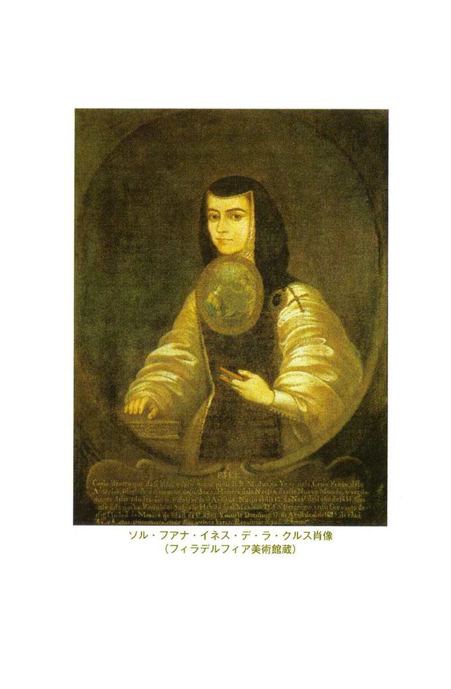

| 知への賛歌 修道女フアナの手紙 (光文社古典新訳文庫) | |
| ソル・フアナ | |
| (2007) | |

知への賛歌 修道女フアナの手紙
ソル・フアナ
旦敬介訳
Title: LAS CARTAS Y UNA SELECCIÓN DE POEMAS
DE SOR JUANA INÉS DE LA CRUZ
Author: Sor Juana Inés de la Cruz
① テクストの原本としては次のものを主に使用した。
詩と「ソル・フィロテアへの返信」
Sor Juana Inés de la Cruz,Obras selectas, (Georgina Sabat de Rivers and Elias L. Rivers, eds.), Editorial Noguer, Barcelona, 1976
「告解師への手紙」
Antonio Alatorre, "La Carta de Sor Juana al P. Nuňez (1682)", inNueva Revista de Filología Hispánica, vol. 35--2, 1987
ただし、以下の版も随時参照し、適宜修正を加えた。
Sor Juana Inés de la Cruz,Obras completas de Sor Juana Inés de la Cruz, Fondo de Cultura Económica, México, 1951--1957
Sor Juana Inés de la Cruz,Inundación castálida, Editorial Castalia, Madrid, 1982
Octavio Paz,Sor Juana Inés de la Cruz, o las trampas de la fe, Fondo de Cultura Económica, México, 1983
Sor Juana Inés de la Cruz,Poems, Protest, and a Dream, Penguin Books (Penguin Classics), 1997
Sor Juana Inés de la Cruz,The Answer/La Respuesta Including a Selection of Poems, The Feminist Press at the City University of New York, 1994
② 「詩のアンソロジー」各詩の番号の下、（ ）内の短文は、同時代の作品集の編者がつけたものである。
③ 文中、［ ］で囲んだ部分は、訳者による補足である。
④ 「手紙」２編の文中、＊を付した人名には、巻末の「手紙に登場する人物」に、簡単な人物解説がある。
⑤ 聖書はソル・フアナの原文においてはすべてウルガータ聖書からラテン語で引用されているが、日本語訳の引用は基本的に岩波書店刊の旧約聖書翻訳委員会・新約聖書翻訳委員会訳から行なった。ただし、場合によって、新共同訳、関根正雄訳も参考にし、引用の意図やラテン語の引用文の語彙や文型にあわせて、訳文を若干変えた場合がある。引用文中に［ ］でくくって入れた部分がラテン語引用文の直訳に相当する場合もある。聖書からの引用等は「ルカによる福音書１章43節」を「ルカ１・43」等と略記した。
目 次
©Keisuke Dan 2007
◎ご注意
本作品の全部または一部を無断で複製、転載、改竄、公衆送信すること、および有償無償にかかわらず、本データを第三者に譲渡することを禁じます。
個人利用の目的以外での複製等の違法行為、もしくは第三者へ譲渡をしますと著作権法、その他関連法によって処罰されます。
知への賛歌 修道女フアナの手紙
ソル・フアナ・イネス・デ・ラ・クルス（一六五一～九五年）といっても、日本ではほとんど知られていない。しかし、メキシコに少しでも行ったことがある人はかならず彼女の肖像を目にし、手で触れているはずだ。ソル・フアナは二百ペソ紙幣の顔なのだから。彼女はメキシコのお金になっているただひとりの女性であり、ただひとりの文人なのだ。他はみな、男の武人・政治家ばかりなのである。
この美貌の修道女は、十七世紀後半に四十数年の短い人生を生きたメキシコの詩人であり、詩こそが文学の最高ジャンルであったこの時代のスペイン語世界全体に文名を轟かせたスターだった。これがどういうことかと言えば、当時のスペインが、すでにかなり落ち目になっていたとはいえ、なおも厳として世界でもっとも広い領土をもち、世界じゅうから目の敵にされる大帝国であったことを考えれば、ある意味では、当時の世界でもっとも広く知られ、もっとも広く読まれた作家がソル・フアナだったということなのだ。少なくとも、彼女は当時のアメリカ大陸において圧倒的にもっとも名高い同時代の作家だったのである。さらに言うならば、ソル・フアナは、三百年ほどにおよぶ全アメリカ大陸（言語圏を問わず）の植民地時代が生んだ最大の作家だったと言って過言ではない。
紙幣に載るような作家といえば、誰からも尊敬されるような模範的な人生を生きた人、それが修道女であればなおさら、信仰篤い模範的な修道女として生き、宗教的に崇高な作品を書いた人だと誰しも思うだろう。しかし、ソル・フアナはまったく違った。彼女は本を読みたいがために、学問をしたいがために、作家になりたいがために、しかたなく、というよりも、きわめて戦略的に修道女になることを選んだ人だった。巨万の富に恵まれていない当時の平民の女性にとって、「文」の道を目指したければ、それ以外に選択肢はなかったからだ。そして、彼女はそのことを公言してはばからない勇気と率直さの持ち主だった。しかも、彼女が書き、生前から全集に集められて刊行され、広く愛された作品は、まったく世俗的なテーマのものだった。そこでは恋愛が歌われ、男の不実が、女の虚栄が歌われ、それにとどまらずに、性愛が明らかに言及され、また、意に反した修道院生活を送る自分の意気地のなさに対する忸怩たる思いや、全世界の知を吸収しつくすような自我の拡張感の陶酔が、そしてまた、女の権利の制約に対する抗議が、テーマとなった。ソル・フアナはアメリカ大陸最初のフェミニストである、と言われるのはそのためだ。
彼女が生きた十七世紀末とは、文学的には、ロペ・デ・ベーガ、セルバンテス、ケベード、ゴンゴラ、カルデロンなどの大作家を輩出したスペインの「黄金世紀」と呼ばれる大文学時代が終わって数十年が経過し、その部分的な模倣は続けられていたものの、もはや往年の大作家たちですらほとんど読まれなくなっていたエア・ポケットのような時代だった。また、新大陸の征服期以来スペインを統治してきたハプスブルク家が、爛熟の果て、ついに衰弱して跡取りがいなくなるのが一七〇〇年のことだから、ソル・フアナの時代はまさに一時代の末、末期的な時代だったのである。新大陸の植民地においては、活劇的な征服時代はすでに百年前に完全に終わり、社会秩序も統治制度も確立しきった安定期である。安定期とはすなわち、厳とした社会システムができあがっていて、その時点ですでに支配階級の一員となっていない人たちは希望を持てないような、保守的な停滞期である。古いシステムが確立しきっていて、ほころびはじめてもいて、しかし、それを決定的に打破するような新しい勢力はまだ台頭していない、そのような、「近代」が芽ばえる直前の時代がソル・フアナの時代だったと考えればいい。そのような、現状維持以外にこれといって強い指針がない惰性的な社会の中で、彼女は驚くべきフランクさをもって、世の趨勢とは異なる私的な声をあげた人だったのである。
ソル・フアナがこのような驚くべき人であって、三百年前の人にしては考えること、口にすることがいかにも現代的であるにもかかわらず、スペイン語圏以外で彼女が広く読まれずにきた大きな原因のひとつは、彼女の主たる活動領域が定型詩であって、散文をほとんど書いていないということにあるだろう。彼女は「ソル・フィロテアへの返信」の中で自ら言っているように、何も考えずに口を開けば、ことばが思わず韻文になって出てくるような人だった。そして、十七世紀の宮廷社会では、ちょっとしたお礼のメモですら、ささっとバロック的な奇想をこらした韻文でしたためられるようなことこそが最大の洗練とされたため、詩人は、必要に迫られなければ散文など書かなかった。詩人こそが、作家の最高峰だったのである。
しかし、名声の絶頂で、彼女は散文を書く必要に迫られる。作品が修道女らしくない、あまりにも世俗的だ、という非難に抗して、自分を擁護するためだった。それが本書の主要部分をなす二通の手紙である。とくに一六九一年に書かれた長文の「返信」は、今ではアメリカ大陸における近代的な自我の表明が明確に行なわれたもっとも早い時期の文章とされ、彼女の代表作となっているものだ。彼女の考え方や性格だけでなく、その思考の道筋や息づかいまでもが伝わってくるような生き生きとした達意の文章である。
三百年前のメキシコ・シティで、誰にも相談できずにひとり考え、悩み、どうして、なぜ、と世界の不合理を問い続けた、ひとりの、小さな、美しい妹の、全存在をかけた呟きと叫びをぜひ聞き届けてほしい。
訳者
１番 （読者への序）
これらの詩文を、わが読者よ
あなたの愉悦に捧げます、
そのいいところとは、ただ、
出来が悪いとわかっていること。
その値打ちをあなたと論じたいとも
お勧めしたいとも思いません、
そんなことをするほどの
大げさなものではありません。
お礼を言っていただく必要もないのです、
考えてみれば、あなたのお手元に届けようと
私自身、意図していなかったものが
評価されるはずもないのですから。
あなたのご自由にお任せします、
否定したければしてください。
あなたが自由のうちにあることが
私にもよくわかっていますから、
人間の知性ほど
自由なものはないのですから。
神が大事にされたものを
私が大事にしないはずはないのです。
お好きなことを何とでも言って
非人間的なほどにまで
私に嚙みつけばいいのです、
するとなおさら私に借りができるのです、
なぜなら私の詩のおかげで
一番おいしいお料理を口にできるのですから
（それとはすなわち、宮廷の地口では、
不平を口にすること）。
私のお出しするお料理に
あなたは喜んだり喜ばなかったり。
お口に合えば喜んで
合わなければ不平が出る。
事前に言い訳として
こう言っておくこともできるでしょう、
書写の作業に忙しく
十分に校正する暇もなかった、と。
何人もの筆耕の手を借りたので
若い書き手の担当部分では
ばっさりと意味が殺されて
ことばが死骸になっている、と。
私が作るのに使えたのも
わずかに短い時間だけ、
わが身分の義務から放たれる
余暇の時間だけだった、と。
健康もすぐれないので、
そして面倒ばかりが起こるので、
これを書いている今ですら
駆け足のように書いているほど、と。
けれどもこれはいずれも逆効果、
かえって私が空威張りしていると思うでしょうから。
じっくり時間をかけられたら
いい詩ができたはずなのだ、と。
そんなふうに思ってほしくはありません。
こんな作品を公にするのはただ、
あるご命令にしたがって
いるだけのことなのですから。
というわけで、信じてもらえるといいのですが、
是が非でもと差し出すわけではありません、
結局のところこの紙の束、あなたのご随意の
使い方をすればいいのです。
それではどうか神の御心のまま、
これは布地の見本にすぎません。
この一枚がお気に召さなければ
包みをほどくまでもないのです。
１番について
パレーデス女伯爵が出資して出版された第一作品集（『カスタリアの氾濫』一六八九年）は人気が高く、翌年すぐに増補版が出た。その増補版の冒頭に序として掲載されたのがこの作品。スペイン語で古くから広く使われてきたロマンセという形式。八音節の詩行が二行ずつのまとまりをなして不特定の行数続くことができ、偶数行の終わりの母音だけが押韻すればよいので自由度が高い。ソル・フアナの詩にはいずれも題名はなく、各詩に付された解題的な短文はいずれも、同時代の作品集の編者が解題がわりにつけたもの。詩の番号は、通例にならって、メキシコで一九五一年から五七年にかけて刊行された四巻のソル・フアナ全集における作品番号を使っている。ソル・フアナの作品は制作時期が特定できないものが多いため、この全集では詩はまず詩型（ロマンセ、レドンディーリャ、ソネットなど）によって分類され、それぞれの詩型の内部では主題（愛、思想、献上詩など）によって分類されている。したがって番号は制作順や発表順とはまったく関係がない。
82番 （愛情のこもった敬意を表明したもの。副王妃ラグーナ侯爵夫人を
「わたしの」と呼ぶ意味を語っている）
わたしの素敵なリシ（１）、
こんなふうにあなたを
親しげに呼ぶことを許して。
わたしこそが、あなたのものなのに。その値打ちもないわたしなのに。
恐れを知らないからではないのです、
こんなふうに呼ぶのは。なぜなら
あなたにはいくらでも稲妻があって、
わたしに出すぎた真似があったときには使えるのだから。
間違っているのはことばのほう、
ちょうど、支配権という語が
もとは君主の絶対権のことなのに、
財産権の話では、一般人の所有地にも使われるのと同じように。
わが王、と家来は言い、
わが牢、と受刑者は言う。
そしてまた卑しい奴隷が
主人のことをわが主人と呼んでも、侮辱にはならない。
それゆえ、わたしが「わたしの」
とあなたのことを呼んでも、それは
わたしのものになってほしいのではなく、
単に、わたしがあなたのものになりたい、と言っているだけ。
あなたを見た。それだけでいい。
燃えあがる火事を告げ知らせるには
その原因を指差すだけでいい、
結果の責任まで言う必要はない。
あなたが高いところにいることは
わたしの大胆なふるまいの妨げにはならない。
どんなに神々しい存在も
人間の空翔る想念を逃れることはできない。
たとえもっとあなたにふさわしい女が
いたとしても、天からの距離では、
もっとも低い谷も、
最も高くそびえる峰も、なんら変わりはない。
つまり、わたしが告白する罪は
あなたを愛し崇めていること。
もしあなたがわたしを罰したければ
その罰こそがわたしにはご褒美となる。
第一作品集『カスタリアの氾濫』より。エンデーチャ・レアルという比較的めずらしい形式（七音節の詩節三行と十一音節一行からなる四行）の連を複数つらねた形式になっており、スペイン語のほぼすべての詩型を利用したとされるソル・フアナも、生涯に二、三篇しか書いていない。（告解師への手紙の注4に戻る）
92番 （自らが引き起こしていることを女たちのせいにして非難したがる
男たちの世迷いごとを、つじつまが合わないと論じるもの）
頑迷なる男たちよ、故もなく
女を非難するのは、自らが
原因であることを見ぬがゆえ。
自ら非難しているまさにそのことの。
比類なき熱意を傾けて
女を蔑むよう呼びかけるのなら
女たちによきふるまいを望むのはなぜ？
悪へと自らそそのかしておきながら。
彼女らの抵抗を打ち破った
その後で、重々しく
あなたたちは尻軽のせいと言う。
懸命の努力によって得たものなのに。
あなたのおかしな見解の
空元気はまるでお子さま、
お化けを呼び出しておいて
自らそれに怯えてしまうような。
世にもおかしな自惚れから、
あなたは求める女にこう願う──
言い寄っているときにはタイスであってくれ、
手に入れてからはルクレシアであってくれ（２）。
こんなおかしな気性があるだろうか？
分別がないにもほどがある、
自らの息で鏡を曇らせておきながら
映らないといって嘆くとは。
好かれようとも嫌われようとも
あなたには結局同じこと、
冷たくされれば嘆きあげ
惚れてきたらば嘲笑う。
どんな女もいいご意見はもらえない
どれほど控えめな女であろうとも、
あなたを受け入れないのは忘恩女
受け入れたら尻軽女とされるばかり。
いつでもいかにも頑迷なあなたがた
異なったものも結局同じ、
ある女は冷たいと言って責め
別の女は簡単すぎると言って責め。
あなたの愛を求める者は
どうすればちょうどいいのでしょう？
応じなければ怒りを買い
簡単であれば怒られて。
しかし、あなたの勝手なご都合の
お怒りとご心痛の狭間にて
めでたきものはあなたのことなど好きでない女、
お好きなようにお嘆きあそばせ。
あなたの愛にともなう痛さによって
女たちは翼を得て大胆になる。
彼女らに悪を教えたあとで
淑女であってほしがるなんて。
道を誤った熱情において
どちらが大きな罪を犯したのでしょう？
頼みこまれて落ちた女ですか、それとも
下賤に頼みこんだ男ですか。
誰でも悪を犯してしまうものですが
どちらを余計に責めるべきでしょう？
金のために罪を犯す女ですか、それとも
罪を犯すために金を払う男ですか。
なぜそんなに怯えあわてるのでしょう？
自らのものであるその罪に。
あなたが作ったがままの女たちを愛してやりなさい
あなたが求めないものを作るのはやめなさい。
求めるのはやめなさい、
もしあとで、当然の帰結として
あなたに願いすがることになる女の愛情を
見下すことになるのなら。
もちろん私には、たくさんの武器をもった
あなたの高慢が戦いを主導することがわかっている、
なぜなら、約束するときも要求するときも
あなたは悪魔と肉の加勢を得るのだから。
92番について
『カスタリアの氾濫』より。ソル・フアナのもっとも有名な作品のひとつで、アメリカ大陸におけるフェミニズム意識の最初のあらわれとされる。レドンディーリャという八音節の四行詩の形式。何連でも続けることができる。各連では一行目と四行目、二行目と三行目の末尾が子音まで含めて脚韻を踏むことが求められる。
145番 （彼女の肖像に描きこまれた称賛の意を、錯誤と呼んで否定しようとするもの）
あなたが目にするこの、色塗られた噓
それは巧みな技のかぎりを尽くして
色彩の生み出す偽りの論法にのっとって
感覚をずる賢く騙すもの。
この偽り、へつらいの思いが
年月の恐るべき技を見逃そうとし
時の過酷さを打ちやぶって
老いと忘却を乗り越えさせようとしたこの偽りとは、
それはおもねりの生んだ空虚な細工品
それは風に揺れるかよわい花
それは運命に対する無益な防壁
それは愚かにして誤った努力
それははかない熱意、よく見てみれば
それは屍、それは土くれ、暗がり、そして無。
145番について
『カスタリアの氾濫』より。ソネット。ソネットは四行四行三行三行という四つの連の計十四行で完結する形式。ＡＢＢＡ ＡＢＢＡ ＣＤＣ ＤＣＤという構成で各行の最後の音節が、母音だけでなく子音まで脚韻を踏むのが基本形。イタリア的な詩型とされ、ルネサンス期にスペインに入ったが、十七世紀のバロック時代にとくに愛好された。ソル・フアナも多数作っており、以下の詩はすべてソネット。
146番 （彼女が自分の運命を嘆くもの。悪癖に染まるのを嫌って
詩才との戯れを選んだことを肯定する）
私を迫害することで、世界よ、お前は何の得をするのか？
私に何か失礼があったのだろうか？ 私が試みたのはただ
わが頭の中に美しいものを入れておこうとしただけであり
美術品にわが頭を入れあげてしまったわけではないのに。
私は宝ものも豊かさも評価しない。
それゆえ、いつでも私の喜びとなるのは
私の思いの中に豊かなものを置くときであり
豊かさに思いをめぐらすときではない。
私が美貌も評価しないのは、それが期限がくれば
戦利品として年月が持ち去っていくものだから。
豊かさもまた私を騙して喜ばせることはない、
なぜなら私が真実の心において選ぶのは
人生の幻を費やすことであり、
人生を幻に費やすことではないのだから。
146番について
『カスタリアの氾濫』より。最後の二行「人生の幻を費やすことであり、人生を幻に費やすことではない」において、「幻」に相当するvanidades という単語は、「空虚なこと・虚栄」という一般的な意味と、「実体をもたない表現・ファンタジーやフィクション」という二つの意味に解することができ、また、「費やす」に相当するconsumir という単語にも、「無駄に費やす・浪費する」という意味と、「［聖体を］（食べて）取りこむ」という意味があり、使い分けられている。そこから、きわめて似通った表現を並べながら、「人の生を表現した虚構（文学など）を味わい尽くすことであり、人生を空疎な虚栄に費やすことではない」という、大きく異なった意味が生み出されている。二重の意味で遊ぶ典型的な「バロック的機知・バロック的表現」と言える。
149番 （死の時まで続くことになる生きかたの選択を熱く謳う）
海行く危険を熟慮したなら
船に乗りこむ者などなく、あらかじめ自らの
危険を顧みたなら、勇気をふるう者とてなく、
荒れ騒ぐ雄牛に挑む者もないだろう。
騎手がみな慎重で、燃え立つ荒馬の
疾駆する憤怒に、事前に思いめぐらしたなら
慎重に手綱を引いて馬を抑えようとする
者など出てくるはずがない。
しかしもし、勇気あるひとり、
危険を顧みず、その大胆な手をもって
光の中を疾走するアポロンの戦車をも
乗りこなさんとする者がいたならば
彼はすべてに挑みゆき、一生不変の生きかたを
あえなく選ぶことなどしないだろう。
149番について
『カスタリアの氾濫』に収められたソネット。末尾にある「一生不変の生きかた」とは、通常は修道女の身分をさす表現。
165番 （貞淑な愛を大事にしようとするファンタジーを歌ったもの）
お待ちなさい、逃げ足の速いわが恋人の影よ、
わが最愛の魔法の似姿よ、
私が喜んで死ぬ美しき幻影よ、
私が苦しみながら生きる甘い虚構よ。
あなたの魅力の磁石に引きつけられて
わが胸がすぐに従順な鉄と化すとしても、
なぜにあなたは口先巧みに私の気を引くの？
じきに逃げ出して私を愚弄することになるのなら。
でもあなたは満足げに誇ることはできないはず、
その荒ぶる力で私を勝ち取ったとは。
私の狙い確かな絆の投げ縄を、
あなたが亡霊のようにすり抜けて、
私の腕と胸を逃れようとも私はかまわない、
わが幻想はあなたを牢につかまえて放さないのだから。
165番について
『作品集第二巻』（一六九二年）に収められたソネット。
166番 （どちらのほうが厄介な重荷かという問いに応えるもの、
愛することと嫌うこと、という相反する思いのいったいどちらが）
愛されているのを知りながら、ファビオが私を好いてくれないこと、
私の中で感じるその痛みに、並ぶものはない。
嫌われているシルビオが、私を愛していること、
痛みはそんなにないけれど、不快にはかわりがない。
どんな忍耐も尽き果てるのではなかろうか？
愛されている者の空虚な傲慢があろうとも
疎んじられた者のくたびれ果てた呻きが
絶え間なく耳の中で鳴っていたならば。
シルビオがひれ伏すのに飽いた私が
自らひれ伏すことでファビオを飽かせている。
この人が応えてくれるのを求める私の一方で、
あの人は私が応えるのを求めている。
能動と受動のどちらもが煩悶であるがゆえ、
愛することも、愛されることも、私の苦しみ。
166番について
『カスタリアの氾濫』のソネット。166番から168番までは関連しあって、「愛の行き違い」をテーマとする変奏となっている。
168番 （同じ話題を続けて、好悪よりも計算が勝るべきと判断する）
冷たく私をうち捨てる人に、私は恋人を求め、
恋して私を追う人を、私は冷たくうち捨てる。
私が崇めるのはいつも私の愛を粗末にする人、
いつでも私の愛を求める人を私は粗末にする。
愛を捧げる人に、ダイアモンドを見る私が、
ダイアモンドになる、私に愛を捧げる人の目の中で。
勝ち誇るのを私が見たいのは、私を殺す人、
私が殺すのは、私が勝ち誇るのを見たい人。
この人に私が応じれば、私の切望は断たれ
あの人に身を投げ出せば、私の体面を損なう。
どちらの道を選んでも、不幸になる私が見える。
でも私が、まだましとして選ぶのは
好きでない人の、猛々しい女王となること、
私を好きでない人の、哀れな戦利品となるよりも。
168番について
『カスタリアの氾濫』のソネット。
195番 （高貴なるパレーデス女伯爵＝ラグーナ侯爵夫人にあてたもの。高貴なる夫人の求めに応じてこれらの原稿を、たくさんの人の手からソル・フアナが回収して、送ったときに付したもの。原稿は、時間内に探し当てて複写することのできなかった他の作品ともども、たくさんの人の間に、宝物のように、分かち紛れていたのである）
奴隷女が懐胎した子は、
法律的に、誰に属するかといえば、
その子を生んだ母なる奴隷女が
従う正当な奴隷主に属するという。
大地が感謝の意を表して送り返すもの、
畑が従順に差し出す豊饒な果実は、
持ち主のもの、なぜなら、豊かに育ったのは
耕してもらったおかげだから。
それゆえに、麗しきリシ、この草稿、
魂の子供、心の産物、これはすべて
あなたのもとに返却されるのが当然のこと。
どうかその欠陥も妨げとはなりませんように、
なぜなら、あなたのものである魂が産んだ発想は
すべて、権利としてあなたのものになるのだから。
195番について
『カスタリアの氾濫』の献辞として掲げられたソネット。自分はリシ（パレーデス女伯爵）に所属する奴隷だから、自分が生み出したものはすべてリシに属する。あなたが私を耕してくれたから実りが生まれた、というアナロジーによって、自分とリシの関係を表現している。
〈この手紙について〉
この手紙は、修道院に入るころからソル・フアナの告解師であったイエズス会士ヌニェス・デ・ミランダ神父にあてて、一六八二年ごろに書かれたもの。ヌニェス・デ・ミランダはメキシコ生まれ（クリオーリョ）であったことなどから教会組織内での高い役職は得られなかったが、一六七三年までのヌエバ・エスパーニャ（メキシコ）副王マンセーラ侯爵夫妻の告解師であっただけでなく、長年にわたってイエズス会学院の説話会の主催者として知られ、また多数の著作もあり、当時のメキシコでは有数の著名な聖職者だった。文面から見られるように、ヌニェス・デ・ミランダがソル・フアナの世俗的活動を間接的に非難していることを聞き及んで、彼女が抗弁するためにしたためた私信である。なお、この手紙は一九八〇年にメキシコ北部モンテレイで、教会の古文書に混じって十八世紀初頭のものと見られる写本が保存されているのが見つかるまで、存在が知られていなかった。今では「霊的弁明の手紙」と通称されている。（訳者）
〈＊を付した人名は、「手紙に登場する人物」に人物解説あり〉
キリストの平安がありますように
幾度にもわたって何人もの人から聞かされたところでは、神父様のお話においてただひとり私だけが叱責の対象とされており、私の行動を「公的な醜聞」になぞらえたり、それと同等の恐ろしい罵倒のことばを用いたりするほど、ひどく辛辣な思いをもって私のことを非難しておられるとのことでしたので、私自身の意識としては、抗弁すべきだと思いかけたこともありました、というのも、私の評判は絶対的に私だけのものというわけではなく、私につながる縁戚の者や、私の暮らす修道院全体の評判にかかわらないわけでもないからです。しかし、こうしたすべてのことを考えあわせた結果、私は、神父様に私が常々寄せてきたこのうえない畏敬の念と、子としての情愛の気持ちゆえ、自分の苦しみをうち捨てることにし、我が身にふさわしい当然の敬意の一線を逸脱して神父様に反論しているなどと思われてしまうぐらいならば、むしろすべてのご異論が私の上に降り注いだほうがずっとよいと考えることにしていました（ちなみに、率直に告白いたしますと、こう決めたからといって、私は神の前で何ら利得を得られるわけではありません、というのも、こう思うことにしたのはあなた様に対する人間的な敬意からであり、キリスト教的な忍従からではなかったからです）。これはまた、神父様がすべての人から（大いに理由あって）たいへんな畏敬と評価を受けておられ、誰もが神与の神託者のようにあなた様に耳を傾け、おことばを聖霊自らが語ったもののように受け止めていることをよく存じあげているからであり、あなた様の権威が高ければ高いほど、なおさら私の評判が失墜することになるのがわかっていたからでもありました。こうしたことゆえ、私は、いくら口答えするようにと、理性が、なのか、それとも自己愛が、なのかわかりませんが（おそらくは自己愛が、理性の外見をまとって人を動かしてしまうものなのでしょう）、私を急き立ててくることがあっても決してそれに応じたいと思うことはありませんでしたが、それは、私が黙することこそが、神父様の怒りの熱情を鎮める一番角の立たない方法であろうと判断したからでした。ところが時とともに、むしろ私の忍従があなた様をさらに苛立たせることになっていると気づくにいたり、そこで私は、わが愛とわが義務とわが敬意は当然不変のものとして脇に置いて、神父様に返答することを決断いたしました。
つまるところ、神父様（わが愛する父にしてわが主であられる神父様）のこのお怒りの要点は、暗黒なる詩歌、いかにもあなた様のご意志に反して天が私に授けた詩文以外の何ものでもありません。詩を作ることを私は全面的にやめたことがありますし、可能な限りお断わりしてきているわけですが、それは詩のうちに善や悪の根拠があると考えてのことではありません。詩そのものは善でも悪でもなく、中立なものであると（事実の通りに）私はずっと考えてきております。そして、聖人や賢人で詩歌を愛用した方がどれほどたくさんいたか申し上げることもできますが、私の父でも母でもない方々の弁護に口をはさむのは慎んでおきます。ただ申し上げたいのは、私が詩を作るのをやめていたのは、単純に神父様によろこんでいただきたかったからであり、あなた様が詩歌を嫌悪される理由を問うことも確認することもなく、盲目的に従うのが愛にふさわしいと思ったからだ、ということです。それに加えて、詩を作ることに対して私がいつも感じてきた生来の不快感に従ったという面もあり、これは私を知る人なら誰でも知っている通りです。しかし、これをまったくひとつの例外もなく厳格に守り続けることは不可能で、その例外にあたる至聖なる聖母マリアに捧げる二篇の聖歌は、八年ごしでくりかえし求められたあげく、神父様の同意と許可のもとで書いたわけですが、その際、私はあなた様の許可を、私の聖職上司である大司教副王閣下（１）の許可にもまして必要なものと考え、また、慎みにも十分配慮して取り組みましたので、最初の作品には私の名前を付すのをお断わりしましたし、二つ目のほうには、私の知らないうちに同意もなく名前を付されてしまったわけですが、どちらの作品も事前に神父様が校訂してくださいました。
これに引き続いて、教会の凱旋門の一件（２）があったのです。これこそが許され得ない私の罪なのですが、それに先立っては、三回か四回、私のもとにその依頼が来て、いずれのときも私はお断わりしたのですが、しまいには制作審査委員の方二名がやってきて、私を呼び出す前にまず修道院長を呼んで、そのあとで私を呼び、大司教猊下の名のもとに制作するようお命じになったのです、というのも、教会参事会総会がそのように評決し、大司教猊下もそれを認可したからというのです。さてここで私は、明晰きわまる分別をお持ちの神父様に、私の立場になっていただきたいのです。その席で返答を求められたら、いったい何とお答えになるでしょうか？ できない、とお答えになるでしょうか？ それでは噓になります。やりたくない、でしょうか？ それでは不服従になります。自分の力を越えている、でしょうか？ 彼らは私の力の範囲内でいいと言っているのです。評決がまちがっている、とお答えになるでしょうか？ それでは厚かましい僭越であるばかりか、悪辣にして下劣な忘恩となるでしょう。輝かしい能力をもった方々の要請を、ひとりの無知な女が満たすことができると考えてくださったその判断によって、私に名誉を施してくださっているのですから。つまり、私には従う以外どうすることもできなかったのです。
これが世間を騒がせている公的な作品であり、善良な人々を戸惑わせているものです。続いて公的でない作品のほうに移りましょう。これは半端な詩節がいくつか見つかるだけのはずですが、私が尊敬しているあれこれの人の誕生日に際してなど、よろこんでもらうために、また物入りだったときに（私は貧しく、何ら収入はないので、そのような機会は決して少なくありませんでした）助けてもらった恩義のある方々に進呈するために作ったものです。あとは、我らが主君国王陛下の誕生日に捧げる頌詩がひとつ、これは他ならぬパヨ修道士猊下（３）のご命令で作ったもの、もうひとつは、パレーデス女伯爵閣下（４）の指示で作ったものです。
さてそこで、わが父にしてわが主である神父様にお願いしたいのですが、一瞬だけご自身の個人的な判断への愛着（これはどんな聖人をも左右してしまうものでしょう）を脇に置いて、教えてください──ご意見では詩を作ることは罪だということですが、今述べたこれらの機会の中で、詩作という反則がそこまでひどかったケースはどれなのでしょうか？ というのも、罪だった場合があったとして（どうして罪と呼べるのか、私には理由がわかりませんが）、その際に私がおかれていた状況と事情こそが、その罪を払拭してくれているはずだからです。状況は私の意志にまったく反していたのであり、これは明白に証明できます。私が手軽に詩を作れる能力をもっていることは誰もが知っていますが、この能力が虚栄の原因になっているとするのならば（むしろそれは苦悶の原因でしかないはずなのですが）、神父様は私が、とても痛いものである喝采の合間にすでに受けている罰以上のどんな罰を私にお望みなのでしょうか？ 私がどれほど妬みの標的となっていることでしょうか？ どれほど悪意の対象になっていることでしょうか？ 私は恐れを抱くことなくどんな行動もとれなくなっているではありませんか？ 私は懸念を抱くことなくどんなことばも口にできなくなっているではありませんか？ 女たちは私が彼女らを凌駕しているのを嫌がっています。男たちは私が彼らに匹敵しているように見えるのを嫌がっています。ある人々は私が物知りであるのを望ましくないと思っています。また別の人々は、これほどの喝采を受けるのであれば、もっと博識であるべきだと言います。年長の女たちは、他の女が自分よりも物知りであるのを望みません。若い女たちは、他の女がよく見られるのを望みません。その誰もが、自分の判断の物差しにしたがって私のことを見るよう人に求めるのです。その全部が合わさって、いかにも奇妙な種類の責め苦ができあがり、それは、これまでに誰も経験したことがなさそうなものなのです。これ以上私に何を言うことができ、何を思いめぐらすことができるでしょう？ 多少とも理屈立ったこの手紙のようなものを書くことについてすら、私にはくどくどしい厄介な迫害が課せられました、それもただ単に、男の手紙みたいだとか、慎みがないとかいうだけの理由であり、そのせいで私はわざと文面を下手にするよう強いられたのです。これについては、ここの修道院全体が証人です。要するに、ここに書いていることは手紙に書くような題材ではなく、何冊もの分厚い本に書かれるべきことだと言われたのです。
このようなことの、どこがそんなにいけないのでしょうか？ 世俗一般の喝采や称賛は、私が注文したものですか？ 侯爵閣下ご夫妻（５）からの特別なご厚意や栄誉は、その高貴な思いやりと比類なきお人柄ゆえに私にあたえてくださっているものに他ならず、それは私のほうから求めたものでしょうか？ 実際に起こったのはまったくその正反対であり、ここの修道院長で、どんな状況でも決して噓をつけない人柄であるフアナ・デ・サン・アントニオ修道女が証人ですが、副王閣下ご夫妻が初めてこの修道院をお訪ねになった際、私はおふたりを瞥見することもお目にかかることもなく自分の居室に引きこもっている許可を修道院長に求めたものでしたが（まるでご夫妻が私に何らかの害をなさったことがあるかのように！）、その目的とはただただ、ひどく鋭い迫害の棘に変わってしまうものである喝采から逃げることだったのです。私はその目的を達成したでありましょう、もしも修道院長様がお会いするようにと命じていなければ。ですから、副王閣下ご夫妻が（故なきことであるにもかかわらず）私をお気に召されたことについて、私に何の罪があるでしょうか？
あんなにも地位の高い方々をお断わりすることなど私にできるでしょうか？ ご訪問によって私に栄誉を施してくださるのを嫌がることなどできましょうか？ できるはずがないことを神父様はよくご存じです、それはマンセーラ侯爵（６）閣下ご夫妻の時代にご経験された通りであり、私自身あなた様がいろいろな機会に、副王閣下夫妻の来訪を受けるがゆえ、他の用件を、放り出すわけにいかないものなのに欠席を余儀なくされることについて不平をこぼしていらしたのを聞いたものです。そして、マンセーラ侯爵閣下がカプチン会や跣足カルメル会（７）のような神聖な女子修道院に好きなだけ出入りでき、誰もそれを悪いとは思わないのであれば、ラグーナ侯爵閣下がこの修道院に出入りするのに対して、私に抵抗できるはずがあるでしょうか？（おまけに私は修道院長ではなく、修道院が私の指図で動いているわけでもないのですから）副王閣下ご夫妻が私に栄誉を施してくださるのは思し召しによるのであり、私にその値打ちがあるからではなく、ましてや最初に私がそれを要求したからでもありません。副王閣下ご夫妻のご厚情と思いやり（いかにも私の身の程を超えた、ふさわしくないもの）に対して、そのような甚だしい忘恩をもってお応えするなど、私にはできませんし、たとえできたとしても、そんなことはしたくもないのです。
私の勉強は誰の害にも損失にもなっていません。何よりもそれはまったくもって個人的に行なわれていて、私はひとりの先生の指導すら受けず、端的に言って、私自身が自分自身の努力だけで行なっています。というのも、私とて、学校で公に授業を受けるのは女の場合、男性との親密さの機会となりうるがゆえ、女の篤実にふさわしくないこと、そしてそれが、公に勉強することを禁ずる理由であろうことを知らないわけではないからです。そして、女に公的な勉強の場が割り当てられていないのは、公的部門が法職者（同じ篤実の理由によりここからも女は排除されているわけですが）の職務に女を必要としていないため、その役に立つことにならないものには気を配らないからでありましょう。しかし、私的で個人的な勉強は、誰が女たちにそれを禁止したのでしょうか？ 女は男と同じように理性的な魂をもっていないのでしょうか？ もっているのなら、女の魂もまた、私的な勉強を通じて学問による開明の恩恵に浴さないはずがあるでしょうか？
女の魂も男の魂と同じだけ神の恩寵と栄光に浴すことができるものではありませんか？ そうであるなら、神の栄光より小さなものである知識と学問が、女にも同じだけ可能でないはずがあるでしょうか？ 神のどんな啓示が、教会のどんな決断が、理性のどんな判断が、私たち女にだけ、こんな厳しい法を課したのですか？ 学問は救いの助けになるのではなく、むしろ妨げになるのですか？ 聖アウグスティヌス（＊）、聖アンブロジウス（＊）、その他の聖人博士たちは皆、救いを得たのではないのですか？ そして神父様ご自身も、多大な学問を背負ってらして、救いを得ようとお思いでないのですか？ もしも、男の場合は別の理屈が働いているのだとお答えになるのなら、私はこう言いましょう──聖カタリナ（＊）は、聖ゲルトルーディス（＊）は、そしてわが母たる聖パウラ（８）は、勉強したではないですか、と。ギリシア語まで知っていることが、ヘブライ語を学んだことが、聖パウラのあの高き黙想の、あの寄付の熱意の妨げになることはなかったではありませんか？ 彼女がわが父たる聖ヒエロニムス（＊）から聖書を要約し理解するすべを教わったことは、聖ヒエロニムス自身が言っていますが、そのことが妨げになったでしょうか？ また、ある書簡のなかで聖パウラはこのうえなく学識豊かに、二十歳といういかにも柔らかな年齢で亡くなった自らの娘ブレシーラに向けて、あらゆる種類の学問について語り聞かせていますが、それが妨げとなったでしょうか？ では、どうして、彼女ら全員において良かったことが、私においては悪いことになるのでしょうか？ 私の場合だけ、本は救いの妨げになるのですか？ 私は世俗の詩人や雄弁家を読んだかもしれませんが（これは他ならぬ聖ヒエロニムスも陥った不注意です）、聖なる教会博士たちの著作や聖なる書物もまた読んでいます──さらに言えば、私は前者、世俗の学問から、良く生きるということについて、数えきれないほどの富と模範をもらったことを否定できません、なぜなら、異教徒であるソクラテスの忍耐を目にして、すぐに怒りに駆られる自分を恥ずかしく思わないキリスト教徒などいないではないですか？ キニク学派ディオゲネス（＊）の慎みを目にして、誰が野望に駆られることを潔しとできるでしょうか？ アリストテレスの知性を見て、神を讃えなかった人がいるでしょうか？ そして結局のところ、異教徒の哲学者たちの道徳的美質の全体をじっくりと考えあわせてみて、恥じ入らないカトリック信者がいるでしょうか？ なのに、どうして悪いことになってしまうのでしょうか、面会格子のところでよもやま話をしていたはずの時間、家の内外のさまざまなことがらに居室で不平をこぼしたり、別の修道女と諍いをしたり、哀れな女中を叱りつけたり、あるいはもの思いの中で世界をさまよったりしているような時間を、かわりに勉強に費やすことが。しかも、神が私をそのように傾けたのであり、それが神の聖なる法にも、修道女という私の立場からくる義務にも、反しているとは思えないのですからなおさらではありませんか？ 私には学業の性向があるのです。それが悪いものであるのならば、［神ではなく］私が自分で自分を作ったのです。私はそれをもって生まれ、それをもって死ぬしかありません。神父様は無理にでも、私が無知によって救いを得ることを望んでいます。でも、愛する父上様、知によって救いを得ることはできないのでしょうか？ 結局のところ、それが私にとってもっともうまくいく道なのですから。どうして救いを得るために、それがその人の資質に対立するものであるときにも、無知の道を行かなくてはならないのでしょうか？ 至高の善としての神は、至高の英知ではないのですか？ だとしたら、神にとって、知よりも無知のほうが受け入れやすいものであるはずがあるでしょうか？ 聖アントニウス（＊）はその聖なる無知によって救いを得ればよく、それはそれでめでたいことですが、聖アウグスティヌスは別の道を行くわけであり、そのどちらも間違っていません。
ならば、神父様のそのご不興は何ゆえなのですか？ そして何ゆえに、「詩など作ることになるとわかっていたら、修道女になどせず、結婚させておくべきだった」などとおっしゃるのですか？ というのも、愛情豊かな神父様（私は口にせずにおきたいことを、恥じ入りながら、余儀なくされて申し上げるのですが）、神父様は私の身柄と、神が私に与えた自由意志を勝手に差配することができる、どのような所有権（私が愛情ゆえにあなた様に、当時もこれからも永遠に託し続けるものを別にすれば）をお持ちだったのでしょうか？
というのも、そのこと［修道院入り］が起こったのは、私が神父様を存じあげてからわずかしか経っていないときでした。そして、わが入信に際して神父様には至高のご祈念とご配慮をいただき、それについてはいつまでも当然にお礼申し上げますが、修道院への持参金に関しては、私が神父様を存じあげるずっと前に、代父となってくれた隊長ペドロ・ベラスケス・デ・ラ・カデーナ氏（９）が用意してくれたものであり、これは、神が私に助力して唯一与えてくださったものである先に述べたこの能力［詩の才能のこと］によって、私自身が獲得したものです。そうであってみれば、先のようなご発言には根拠がありません。むろん、私は神父様から他に幾多のご厚情と賜りものをいただいていることを否定いたしませんし、それは永遠に感謝申し上げます。たとえば、私のために先生の授業料を払ってくださったこと、その他です。
しかし、理不尽にも、ご厚情は続かず、非難に変わってしまい、また、お話のたびに私の罪が話題にのぼるようになって、私を回心させることにかける神父様の熱情がお話の霊的主題となってしまったのです。ひょっとして、私は異端者なのですか？ もしもそうであるとして、まったくの無理強いによって私が聖人になることがあるのでしょうか？ そうであればいいですし、となると、聖人性は命令によって無理やり手に入れることができるものということになり、ならば、私だってしっかりと手に入れるでありましょう。しかし私の考えでは、それは命令によってではなく、説得によって手に入るものだと思います。命令できるものであったならば、私の聖職上司の人たちがそうしていたことでしょう。というのも、戒律や外的強制が緩やかで控えめのものであれば、分別のある穏当な人ができあがり、それが過度であれば、荒くれた人ができあがります。しかし、聖人は、恩寵のみが、そして神の助力のみが、作りうるものです。
それでは、何が、このお怒りの根拠なのでしょうか？ 私の評判を貶め、相手構わず、私を醜聞呼ばわりするのは、いったい何故なのですか？ 私が何かで神父様を困らせているでしょうか？ 私が困窮を助けてほしくて何かをお願いしたことがあるでしょうか？ 何らかの霊的困窮あるいは現世的困窮によってあなたを悩ませたでしょうか？ 私を矯正することが神父様にとって、職務上の、あるいは親族関係上の、養育関係上の、聖職上司として、などなどの根拠にもとづく責務にでもなっているのですか？ もし単なる愛徳からなのであれば、どうか単なる愛徳からなのだと思い直して、そのように穏健に行動なさってください、というのも、私をやりこめるのは、私を従順にさせる方法としてよいものではなく、また、私は理性の納得が得られないことを脅されて行なったり、神のために行なわないことを人間的な敬意ゆえに行なったりするような卑屈な性根の持ち主ではないからです。ごく正当なものを含めて、歓びを得られるものすべてを私が自分で自分から取り上げることは、私が苦行を求めて自分で自分を苦しめるために行なうのであればよいことでしょうが、それを神父様が叱責によって無理やり実現しようとされるのはよいことではなく、しかも、その叱責が、親としての矯正の定石通りに（というのも、神父様は私の［告解師、つまり霊的な］父親となってくださったのであり、そのことを私はとても幸せに思っていますが）私に個別に直接差し向けられるのならまだしも、すべての人の前で、各人が勝手に聞いた通りに思いこみ、思いこんだ通りに口外するような場で公的に行なわれるのですからなおさらよくないのです。
というのもこれは、わが父上様、私が大いなる畏敬をもって愛し、大いなる愛をもって敬い敬服している人物から直接聞かされ自ら思いこまなければ意味がないのではありませんか？ もしもこうしたお叱りが、私のなんらかの醜聞的な交友関係に差し向けられているのであれば、私は（霊的な分野でも現世的なことでも、かつて一度も神父様のお世話になったことがないにもかかわらず）従順にそのような交友相手から自ら離れ、自らを修正して、あなたを満足させるよう努めるでありましょう、たとえそれが私の嗜好に反していようとも。しかし、それが、詩を作るとか作らないとか、実質的にはどちらでもかまわないようなことに関する単なる意見の相違だけから来ているのであれば、しかも、しじゅう詩を作っていなければならないことほどひどい苦行はなかろうというぐらい私は詩など大嫌いなのであれば、どうしてこれほど大騒ぎなさるのですか？
このように言いますのも、もし意見の対立があるたびに、私が神父様に対して、神父様が私に反対してなさっているのと同じように熱烈に口を開いたりしていたならば、私があなたのおっしゃることにまったく反対である機会というのは無数にあるわけで（というのも結局のところ、どうでもいい問題に関する判断というのは、ある人はこう、またある人はこう、と異なるわけですから）、しかしだからといって私はその意見を指弾したりせず、むしろあなたの意見としてそれを重んじ、それをわが意見として擁護するでしょうし、ひょっとしたら私に反対するご意見すら、善良な熱意、至上の親愛などという呼び名を使って擁護するでありましょう。人と話をするとき、相手に対する愛と敬意から私はそういう呼び方をすぐに思いついてしまうものですから。けれども、神父様に対して私は言わずにはいられません、この二年の間にあなたがお与えになったと言ってよい苦痛が、今や私の胸に溢れてしまっているのです。こうして筆をとって、その苦痛に対する不平を訴え、これほど畏敬している方に反論しているのは、もうこれ以上我慢ができないからなのです──私は他の修道女たちのように素直に従うほど痛め潰されていないたちなので、残念過ぎるほど残念なことですが、あなた様の教えは彼女たちに施したほうが無駄にならずにすむのではないでしょうか。
ですから神父様には伏してお願いいたします、もし私にご厚情をかけるのがお嫌で、そうして下さるおつもりがないのであれば（というのも、それはご随意のことですから）、私のことなどご放念下さい。そうなったら私はその大いなる喪失をひどく痛みに感じるでしょうが、不平をこぼすわけにはいきません、私を育み贖った神、私に幾多の慈悲をかけてくれる神が私の魂のために助力を与えてくれるはずであり、たとえ神父様のお導きが欠けても、私の魂が道に迷うことはないだろう、と主の善良さに期待しております。天に入るには多様な鍵があり、天がたったひとつの基準に狭められたことはなく、そこにはさまざまな性向の人のために無数の館があるように、現世には多数の神学者がいます。そして神学者がいない場合には、救済は、救済とは何かを知っているかどうかよりも、救済されたいと欲することにかかっているのであり、であればこれは、告解師ではなく私にかかっているのです。この私の救済が神父様を通じて実現されなければならない理由は何かあるのでしょうか？ 他の方を通じてではありえないのですか？ 神の慈悲はたったひとりの男性に限られ限定されたわけなのですか？ いかにその人が神父様のように分別があり、博学であり、聖人であったとしても、その人だけに限定されているのですか？ 明らかにそうではなく、私もこれまで、私にそのように命じる個別の光明や主の啓示を受けたことはありません。したがって私は、今後、主がそれではだめだという光を私にあたえない限り、聖なる教会の全般的な規則によって自らを導くことができ、私の望む人を自由に告解師に選ぶことができるわけでしょうが、我らの主が大いなる愛と力をもって私の意志を神父様のほうへと傾けたように、もし、私の判断をもそれに一致させることになるのであれば、神父様以外の方が私の告解師になるはずはありません。それゆえ私はあなた様に伏してお願いしたいのです、どうかこのような私の率直さを、出過ぎたふるまいであるとか、敬意が足りないとして受け止めるのではなく、私の心のまっすぐさのあらわれとして受け止めてください、このような性向ゆえに私は自ら感じている通りのことしか口にすることができず、むしろここでは、神父様に微塵の怒りも不満も残らないような話し方で話そうと努めたのです。しかしながら、私の欠点が開陳されたこの文書のなかに、何か書き方が悪いことばがあったならば（失礼なことというだけでなく、神父様ともあろう方に対して格式が足りないといったことも含めて）、それは意図せずに見落としてしまったものであり、もちろんすぐに撤回いたしますし、言い方が悪く書き方がひどいものと判断して、どの単語とわかれば即座に消去いたします。
もう一度申し上げますが、私の意図するところはただ神父様にお願いすることです──もし私にご厚情をかけるのがお嫌であれば、私のことを主に託すとき［死ぬとき］以外には（あなた様の多大な愛徳ゆえ、これは熱意をもってなさってくださるものと確信しておりますが）、私のことを思い出さないでください。
どうか私のために神父様をお守り下さるよう、天上の陛下にお願いしています。それが私の望むところだからです。
メキシコ市のわが父聖ヒエロニムスの修道院より。
あなたのフアナ・イネス・デ・ラ・クルス
１ メキシコ大司教だったパヨ・エンリケス修道士は一六七三年から一六八〇年まで、臨時にヌエバ・エスパーニャ副王も兼任していたのでこう呼んでいる。なお、修道女が服従しなければならない上司は修道院長と、修道院がある場所の司教あるいは大司教。つまり、告解師は上司ではない。にもかかわらず、あえてヌニェス・デ・ミランダの許可を得ることを選んだと言っている。 （本文へ戻る）
２ 彼女が社会的に大きく注目されることになった一六八〇年の新副王歓迎式典の凱旋門デザイン・プロジェクト『寓意的ネプトゥーノ』を指す。 （本文へ戻る）
３ 先述の副王兼任大司教のこと。 （本文へ戻る）
４ 一六八〇年に着任した新副王ラグーナ侯爵の夫人で、生涯にわたってソル・フアナの最大の後援者・擁護者となった。ラグーナ侯爵夫人とも呼ばれるが、夫人自身もパレーデス女伯爵という爵位をもっていた。82番の注参照。 （本文へ戻る）
５ 副王のラグーナ侯爵と妻のパレーデス女伯爵のこと。 （本文へ戻る）
６ パヨ大司教が副王になる前、一六六四年から七三年までの副王。ソル・フアナは十代半ばでこの副王妃の侍女として宮廷に入り、そこで副王夫妻の告解師だったヌニェス神父と知りあった。 （本文へ戻る）
７ カプチン会、跣足カルメル会はともに戒律が厳しいことで知られる修道会。 （本文へ戻る）
８ 五世紀の修道女。聖ヒエロニムスのもとで学んだ。ソル・フアナの属した修道院の正式名は「サン・ヘロニモ修道会サンタ・パウラ修道院」だったため、聖パウラを「わが母」と呼んでいる。数行先で、聖ヒエロニムス（サン・ヘロニモ）を「わが父」と呼ぶのも同様。 （本文へ戻る）
９ 副王マンセーラ侯爵の時代まで長期にわたって副王領政庁の治安等担当長官を務めた軍人。 （本文へ戻る）
〈この手紙について〉
この手紙は、ソル・フアナの神学的著作『アテネー書簡』が、一六九〇年に本人の了解なしに出版されたとき、その本の序文の署名人として名前が記されていたソル・フィロテア・デ・ラ・クルスに宛てて、その序文の内容に対する返信として、出版の約三か月後に書かれたもの。ソル・フィロテアの序文は、『アテネー書簡』の内容を高く評価する調子で始まっていたが、文面の大部分は、ソル・フアナが世俗的な詩作などの文学活動を幅広く行なっていることを厳しく非難し、キリスト教的著作の研究と執筆に専念するよう諭すことに費やされており、序文としては異例の内容のものだった。実際にはソル・フィロテアという修道女は実在せず、プエブラ（メキシコ第二の都市）の司教フェルナンデス・デ・サンタクルスが使った偽名であったとされる。
ソル・フアナは、聖書研究の会合でフェルナンデス・デ・サンタクルス司教と親しくなり、そこで口頭で語った内容を、司教の勧めに応じて私信として文章にしたのが『アテネー書簡』だった。つまり、『アテネー書簡』の原稿を手にした唯一の人物がこの司教だったのである。そこでは、神の恩寵に関するアントニオ・ヴィエイラ神父の見解に対立するソル・フアナの見解が述べられていた。出版時の題名『カルタ・アテナゴリカ』（「英知の女神アテネーの議論にも匹敵するような書簡」）は出版人が付したものであり、彼女自身が原稿につけた表題は「ある説教に対する考察」だった。
このような事情から、文面上で設定されている相手である修道女「ソル・フィロテア」に呼びかけていると装いながら、実際の相手であるフェルナンデス・デ・サンタクルス司教に向けて抗議していることを意識させるような、複雑な構造がいくつかの箇所で見られる。「顔を見せて下さい」「ベールを着けていないあなた」といった表現があらわれる箇所などである。また、ファリサイ人とイエスの関係を述べている箇所は、「人は」と表向きに言っておきながら、ファリサイ人の律法学者たちに言及している文脈から、内実としてはかなり明快に「男は」という意味に使って、男性批判をしているように読める。また、そこに出てくる「あなたがた」という表現は、あまりにも明白に「あなたたち男は」と名指しているように見え、フィロテアという偽名の背後にいる司教に直接呼びかけているように読める。男性批判の意識が高じてつい、修道女宛であるという虚構を忘れて筆がすべったのか、それとも、「フィロテアなどとごまかしても、あなたがプエブラ司教であることはわかっていますよ」というシグナルを送っている故意なのか、謎めいている。
手紙の終わりのほうでは、自分の「わずかな」作品が出版されたのはいずれも自分の意志ではない、と述べている部分があるが、そこには多少の偽りがある。この手紙が書かれた一六九一年の時点では、ソル・フアナの作品は、いくつもの聖歌が小冊子としてメキシコで印刷物になっていた。実際、それらが印刷されることに彼女が熱心でなかったこともたしかだったようだ。しかし、一六八九年には、彼女の最初の世俗的な作品集がスペインで刊行され、好評を博して翌年には再版されていた。この本は、彼女の熱心な支援者だったパレーデス女伯爵がソル・フアナから預かってメキシコからスペインに持ち帰った原稿を出版したもので、『カスタリアの氾濫』という題名は著者の「判断」ではなかっただろうが、「印刷にまわすための同意すら」なかったとまでは言えない。この本は彼女の世俗的な詩の大半（百篇強）と、社会的な出世作となった散文「寓意的ネプトゥーノ」が収められた大部の書物である。
また、手紙の末尾では、自分が今後何かを書くことがあれば、かならず「あなた」の校閲を受けるようにする、と述べているが、この手紙の翌年、一六九二年にはふたたびスペインで彼女の作品集第二巻が出版されており、この手紙が書かれた時点では、すでにその出版準備が始まっていたと考えられる。そこには主に、ラグーナ侯爵夫妻が帰国した一六八八年以降に書かれた作品が収められ、「アテネー書簡」も収録された。この第二巻も好評を博してすぐに再版されている。つまり、ソル・フアナは八九年から九二年ぐらいの時期に、世俗的な作家としてのキャリアの絶頂にあったといってよい。この手紙は、その時期のものである。しかし、「ソル・フィロテア」の叱責の序文以後、ソル・フアナは、明らかに作家としての活動を低下させていき、やがて一切の世俗的文筆を断ったとされるが、フィロテアの叱責がそのきっかけだったとも、他の何が原因だったとも、正確には断定できない。（訳者）
〈＊を付した人名は、「手紙に登場する人物」に人物解説あり〉
とても名高い修道女様へ。ご返事申し上げるのがこれほど遅れてしまったことは、私の意図するところではなく、すぐれない健康のせいでも当然のものである畏敬の思いのせいでもありません。最初の一歩から、私のつたない筆を妨げる不可能事が二つあったとすれば、それも当然のことでありましょう。第一の（そして私にとって最も困難な）不可能事は、あなた様のこのうえなく博識で分別に満ちたお手紙、神聖にして情愛に満ち満ちたお手紙に、何を返答したらよいか、わからなかったことです。学窓の天使たる聖トマス（＊）が、その師アルベルトゥス・マグヌス（＊）の前ではなぜ沈黙するのかと問われて、自分はアルベルトゥスの耳に値することを何ひとつ言うことができないから沈黙するのだ、と答えた、というのを見るにつけ、私などはどれほどなおさら黙すべきでありましょう、それも、かの聖人のように謙遜からではなく、あなたの耳に値することを実際に私は何ひとつ知らないからです。二つ目の不可能事は、私の草稿を印刷に回してくださったいかにも過剰にして望外のご厚情に対して、何とお礼申し上げたらよいかわからなかったことです。それはいかにも並外れた思し召しであり、私の最大限の野望も、夢物語のような願いすらもはるかに超えていることなので、理性的存在としての私の心をよぎることすらありえない出来事だったのです。つまるところ、それはあまりにも甚大なことなので、限界あることばの枠内に収まらないだけでなく、大きいうえに予想外であるために、お礼の能力・容量をも超えてしまっており、クインティリアヌス（＊）が言った通りなのです──「期待は小さな栄光をもたらし、恩恵は大きな栄光をもたらす」。いかにもその通りなので、恩恵の受け手の側はことばを失ってしまうのです。
幸運にも不妊であって、それゆえ奇跡の懐妊を得ることができた洗礼者ヨハネの母君は、「ことばの母」マリアが自宅を訪れてくるという身の程を超えた出来事に出くわしたとき、悟性が麻痺してしまって、ことばに詰まってしまいました。そのため、お礼のかわりに、疑問や質問ばかりを口にすることになりました──「私のもとに来て下さるとは、そんなことがどうして（１）」と。どこから私のところにこのようなことがやって来たのだろう、と。同じことがサウルにも、イスラエルの王として選ばれ聖油で聖別されたときに起こりました──「私はイスラエルの部族のうちで最も小さなイエミニに属する者ではありませんか。しかも、私の氏族は、そのベニヤミン族のどの家族よりもつまらないものではありませんか。それなのに、どうしてあなたはそのようなことを私に言われるのですか（２）」と。そこで私もこう言わずにはいられないのです──いったいどこから、高徳な修道女様、どこから私にそれほどのご厚情が来るのでしょうか？ わたしはひとりの哀れな修道女でしかなく、この世でもっとも卑しい生き物でしかなく、まさにあなたの関心にもっとも値しない存在なのではないでしょうか？ では、「どうしてあなたはそのようなことを私に言われるのですか？ 私のもとに来て下さるとは、そんなことがどうして？」と。
第一の不可能事について、私にできることといえば、私はあなたの目にまったく値しないものだと答えることだけです。第二の不可能事についても、お礼ではなく崇敬の思いを口にするしかできず、いただいた恩恵のほんのわずかな一部分に関してですら私にはあなたに感謝する術がない、と申し上げるばかりであります。これは見かけだけの謙遜ではなく、私の心からの偽らざる真実であり、私の手もとに、あなたの判断で「アテネーにも値する」と名づけていただいたあの書簡が印刷物となって届いたとき、私は突如、困惑の涙に暮れたのですが（私において、これは容易にあることではないのですが）、それはなぜかといえば、あなたのご厚意が実は、神に対する私の行ないの悪さに関する、神からの叱責に他ならないように思えたからなのです。つまり、他の人たちのことは懲罰によって正しているのに、私については、恩恵の力によって改めさせようとしているように思えたのです。これが特別な厚意ある計らいであって、それを私が、果てしない善意による他の無数の厚意と同様に、神からいただいたのだということはわかっているのですが、これが同時に、私を恥じ入らせ困惑させる特別な方法であるともわかるのです。というのも、私を罰する方法として一番効果的なのは、私自身を裁判官にならせて、自らの判断によって、恩義に反する自分自身の態度に自分で有罪の判決を下させることだからです。ですから、ここでひとりこのことに思いをめぐらすにつけ、私はくりかえし、こう口にするのです──主よ、あなたに祝福あれ、私に対する裁きを他の人の手に委ねようとせず、私自身の手にも委ねることなく、あなた自身の手で下すことになさったがゆえに。それによって、私を私自身から解き放ち、私が自らに下すであろう判決から──自分のことをよく知っている以上、それは有罪以外ではありえないでしょう──解き放ってくださったがゆえに。しかもあなたはその判決を慈悲をもって下されましたが、それは、私のことを、私自身が愛しうる以上に愛してくださっているからです、と。
お許しください、真実の力に引きずられて脱線してしまいましたが、真実をすべて告白しますならば、これもまた、返信の難しさから逃れるための言い訳を求めているだけのことであり、実のところ私は、返信せずに沈黙にまかせようと、もう少しで決断しかけたのです。しかし、沈黙とは欠落ですから、たしかに何も説明しないというまさにそのことによって、多くのことを説明するものであるとはいえ、沈黙に語らせるつもりの内容を人に理解してもらうためには、そこに何らかの簡単な表題を付けておく必要があります。もしそうしなければ、沈黙は何も語りません、なぜなら、これ、すなわち、何も語らないということこそ沈黙の本来の仕事だからです。選ばれた聖なる器［と呼ばれる使徒パウロ］は第三の天に運ばれ、神の不可思議な秘密を目にしてこう言います──「人間にとっては語ることが許されていない、言葉では言い表わせない言葉を［神の秘密を］聞いた（３）」と。彼は何を見てきたのかは言わないのですが、自分がそれを言えないのだということは言うのです。つまり、言えないことがらは、言えないのだということだけでも言っておく必要があるのです。そうしないと、黙っているのが、何も言うことがないのではなく、言わなければならないことがあまりにも多くてことばの中に収まりきらないのだ、ということを人に理解してもらえないからです。聖ヨハネは言います、我らの救い主が行なったすべての驚異を書き出さなければならないとしたら、本の数が多くなりすぎてこの世に収まりきらなくなってしまう、と。そしてヴィエイラ（４）はこの箇所についてこう言います、このたった一節で、福音史家ヨハネは彼自身の書き物すべてよりも多くのことを言った、と。たしかに、ルシタニアの不死鳥［ヴィエイラのこと］はとても当を得た言い方をしています（しかし思えば、彼が当を得た言い方をしないことがあるでしょうか、不当なことを言う場合ですら）、なぜならここで、聖ヨハネは言わずにおいたことすべてを言い、言い表わさないことにしたことを言い表わしたのですから。ですから私も、修道女様、何とお答えしたらよいのかわからない、とだけお答えしておきます。お礼を言い表わすことができないとだけ言ってお礼申し上げておきます。そして、沈黙にまかせておくことがらに付した短い表題によって申し上げておきたいのは、私が偉大なあなた様に話しかけるなどという大それたことができるのは、ただただ、目をかけていただいているという信頼と、親切にしていただいている者に許された近しさゆえなのだということです。これが愚かな思い違いでありますならば、どうかお許しください、というのも、愚行というのは至福の飾りであり、私はそれによってあなたの善良さが発揮される機会をさらに提供していることになり、また、あなたは私の謝意をさらに大きくふくらませることになるのですから。
モーセは自分自身が吃音であるゆえにファラオと話をするにふさわしくない、と考えましたが、その後、神にかくも目をかけてもらっていることを見て、豊かな息に満たされ、他ならぬ神に話しかけるのみならず、畏れ多くも不可能事を要求することになります──「どうか、あなたの栄光を［顔を］私に見させて下さい（５）」と。同じように私にもまた、冒頭で述べた不可能事が、あなたが私に寄せてくださるご厚情に照らしてみて、もはやそれほど不可能にも見えなくなってきました。なぜなら、まったく私に通知することもなくあの手紙を印刷にまわした方、題名をつけ、費用を支払い、それほどまでにあれを高く評価した方（６）（それ自体としても、その書き手の素姓からしても、まったく名誉に値しないものであるにもかかわらず）、そのような方であれば、何でもして下さるのではないでしょうか？ 何でもお許し下さるのではないでしょうか？ 何をか、して下さらず、お許し下さらないはずがあるでしょうか？ ですから、あなたのご厚情という許可証を得て話すことが許されているという仮定のもとで、また、あなたの善良さという免許状のもとで、また、ちょうどあのアハシュウェロシュ（７）のように、あなたの親愛の黄金の笏の先端に口づけすることを許され、それによって高貴なあなたの前で話をし意見を述べる許可を与えられたという免許状のもとで申し上げますのは、聖なる書物こそを勉学の対象とすべきだというあなたの聖なる叱責を私は真心に受け止めます、ということです。これは助言という姿をまとってやって来たものですが、私にとっては実質的には命令に他ならないからです。少なからぬ慰めをおぼえることに、私の従順な心はそれ以前から、羊飼いとしてのあなたの示唆が、いわばあなたの方角からあなたの指示として、やってくることをあらかじめ予期していたようなところがあり、それはあの書簡の論題と論証内容から推論できる通りなのです。あなたのこのうえなく分別ある警告があの書簡に向けられたものではなく、私の書き物のうち、目に入ることが多い世俗的な題材のものに向けられていることはよくわかっております。ですから、私が述べたことは、私の他の著作からあなたが（いかにも的確に）読みとった私の真面目さの不足を、あの書簡の内容によって埋め合わせて満足していただくためだったのです。そして、さらに限定された点について告白しますが、あなたに対しては当然のものである率直さをもって、また、私にとってはいつでも自然な習慣である真実と明快さをもって言うならば、私が宗教的主題について多くのものを書いてこなかったのは、その嗜好がないからではなく、真面目さが足りないからでもなく、要するに宗教的文書に対する当然の畏れと敬意がありすぎるからであり、そうした文書の理解が私の力をあまりにも越えていて、それを取り扱う資格が私にはあまりにも欠けていることがわかっているからなのです。私の耳の中ではいつも、少なからざる恐怖とともに、私のような罪人に対する主の威嚇と禁止の台詞が鳴り響いています──「何のつもりで、お前はわが掟を数え上げ、わが契約を口に上したのか（８）」と。私の頭にはこの詰問があり、また、学問を修めた男性ですら三十歳を過ぎるまでは「雅歌」を読むのが禁止されていたというのを知っていたからです。「創世記」すらそうだったのです。「創世記」はその難解さゆえ、一方、「雅歌」はその祝婚歌の甘やかさが、無分別な若者を肉欲の感覚へと向かわせる機会となってはいけないからという理由でした。私の大いなる父たる聖ヒエロニムスもこれを確認しており、同じ理由からこれを学ぶのは最後にするようにと命じています──「雅びなる歌は最後に読むのが危険がなくてよい。これを最初のうちに読むと、肉体的なことばで書かれた霊的な婚姻の祝婚歌を理解できず、害をこうむるといけないからである（９）」。セネカはこう言っています──「柔らかな年代において信仰は明瞭ではない」と。となれば、どうして私などの不埒な手でこれを取り扱うことができましょうか？ 私の性別が、年齢が、そして何よりも習慣が、それを否定しているのですから。ですから告白して申し上げますが、この畏れが、幾度となく私の手からペンを取り上げたのであり、話題を、それが芽ばえようとしている源泉である私の頭の中へと押し戻したこともたびたびだったのです。このような不都合に、私は世俗的な話題ではぶつかったことがありません、というのも、芸術に対する異端行為を宗教裁判所が罰することはなく、機知ある人はそれを笑うことで罰し、判定好きな人が意見の開陳によって罰するだけだからです。そして意見というのは、「正当なものであれ不当なものであれ、恐れる必要はない」ものです、というのも、それによって聖体を拝領できなくなるわけではなく、ミサを聞くこともできるわけですから、私はほとんど、というか、まったく気に止めないようにしています。なぜなら、中傷する人たち自身の判断にもある通り、私には博識でなければならない義務もなければ、的を射るだけの能力もないのですから。それゆえ、たとえ私が誤ったことを言っても、それは罪でも不面目でもないのです。罪でないのは、私にはその義務がないからで、不面目でないのは、もともと的を射る可能性が私にはないからであり、要するに「誰にも不可能事をなしとげる義務はない」からです。それに本当のところを言えば、私は強いられて無理やり、他の人を喜ばせるために文を書いたことしかないのです。自分としての愉悦などなかったばかりか、むしろはっきりと不快をおぼえながら書いていたわけで、それというのも、私自身、自分に文芸の才能や、書き物をする人の責務として求められる機知があると判断したことはないからです。というわけで、しきりに注文してくる人に対する私の返事はいつも、そしてそれが宗教的主題に関してであればなおさら、次のようなものなのです──「私にはどんな知力があるというのですか、どんな学問、どんな題材が私にあるでしょう？ そんなことに必要な知識もなく、あるのは表面的な駄弁ばかりなのですから。その話はちゃんとわかっている方にやってもらってください、私は宗教裁判所とのごたごたはお断わりですし、無知な私は響きの悪い文を口にしてしまったり、本物の知性の持ち主のことばを歪めてしまったりするのが怖くて震え上がってしまうのですから。私は物を書くために勉強しているのではなく、ましてや教えるためではなく（それは私の場合、途方もない傲慢となるでしょう）、ただ単に、勉強すれば少しでも無知が減るものかどうか見てみたくてやっているだけなのですから」。このように私はいつも返答し、たしかにそのように感じているのです。
書くことが私自身の発意であったためしはなく、いつでも他の人の要請でした。その方々に私は真実をもってこう言うことができるほどです──「あなたがたが私に強制したのだ（10）」と。ただ、たしかに言えること、私も否定するつもりがないのは（これは、ひとつには誰もがよく知っていることだからであり、もうひとつには、たとえ自分自身に不利な場合でも、真実を愛する大いなる気持ちを神が私に授けてくれたからですが）、理性の最初の光が私に触れたとき以来、文芸に対する私の志向がきわめて熱く強いものであったため、他者の叱責も（これはたくさんありました）、自らの熟慮も（これも少なからず行ないました）、神が私の中に置いたこの自然な衝動に従うのをやめさせるには至らなかったということです──何ゆえに、そして何のために、それを置いたのかは主のみがご存じです。また私が、わが知性の光を、主の法を守るのに必要な分だけ残して、あとはすっかり消してください、と主にお願いしたことがあるのも主はご存じです。それ以上の部分は、一部の人の言では、女には余計なものだというからです。有害だと言う人すらいるくらいだからです。主はまたご存じです、これをかなえてもらえなかった私が、わが名とともにわが知性を葬ってしまおうと試みたことがあるのを。まさにそれを与えてくれた方に、それを犠牲として捧げて返してしまおうとしたことを。そして、まさしくこの目的のために私は修道院に入ったのです、自由闊達と静粛を必要とする勉強好きな私の性向にとって、修道院共同体の業務と集団行動が嫌悪をもたらすものであったにもかかわらずです。そして、共同体に入ったのち、主がご存じなのは、そして俗世においてそれを知っているべき唯一の人（11）が知っているのは、私が自分の名前を隠すという目的でどれほどのことを試みたかということ、そして、それ自体が誘惑であると言って許してもらえなかった（12）、ということです。それは確かに誘惑だったのでありましょう。もし私があなたに負っているものの一部でもお返しすることができるとしたら、修道女様、それはこうしたことをお聞かせすることでのみ可能なのではないかと思います。というのも、このようなことは、語って聞かせなければならない方に対して以外、私の口から一度も出たことのないことだからです。しかし、私の心の扉をあなたに向けて開け放って、そこに最も秘められてきた秘密を明かすことを通じて、ぜひ知っていただきたいのは、私があなたに寄せる信頼の深さが、高邁なるあなたのその御身と過剰なるご厚情に私が負っているものの深さにこそふさわしいものだということです。
私の性向に関する話を続けますと──これについてはすっかりお知らせしておきたいのです──、私が三歳になる前のことですが、母が私の姉のひとりを「アミーガス（13）」と呼ばれているものに通わせて、字を読めるよう学ばせにやっていたところ、私は親愛と悪戯心から姉の後ろにくっついて出かけていったのです。そこで姉が授業を受けているのを見ると、私は自分も読めるようになりたいという欲求に一気に燃えあがり、先生を騙して（騙しているつもりで）、私にも教えるようにと母が命じている、と先生に言ったのです。先生は信じませんでした、とても信じられることではなかったからです。それでも彼女は、私の思いを満足させるために授業をしてくれました。そこで私はその後も教室に通い続け、先生は私に教え続けたのですが、もう冗談半分ではありませんでした、というのも、経験から彼女にはすぐにわかったからです。私はごく短い期間で字が読めるようになり、母が気づいたときにはもうすっかり文が読めるようになっていました。先生は母には突然知らせて喜ばせ、ふたり一緒に褒めてもらおうと考えて隠していたのです。一方、私もまた黙っていたのは、言われていないことを勝手にやったと言ってぶたれると思ったからでした。私を教えたこの先生はまだ存命であり（神のご加護を）、その通りだと証言してくれるはずです。
そのころの自分のことで覚えているのは、おいしいものに目がないのはその年代の子として普通だったのに、チーズを食べるのをやめていたことです。チーズを食べると馬鹿になるという話を聞いたからでした。子供において食欲は強力なものであるにもかかわらず、私にとっては、知りたいという欲望のほうが食べる欲望にまさっていたわけです。その後、六歳か七歳ぐらいになって、すでに読み書きはでき、家事や裁縫など女が習う仕事も全部できるようになっていたころに、私はメキシコ市には大学や学校といって諸科学を勉強できる場所があることを聞き知りました。それを聞くや否や、私は無理な願いを母に言いつのって悩ませはじめました──服を取りかえて［男装して］、メキシコ市に送ってくれ、勉強して大学に入るために親戚の家に住まわせてくれ、と。母はそんなことは望まず、それは正しい判断でした。しかし、私は祖父が持っていた多岐にわたる多数の本を読むことでその欲望を満たしていき、それをやめさせようとする罰も叱責も役には立ちませんでした。そのため、私が実際にメキシコ市に出てきたとき、人々が驚いて目を見張ったのは、頭の良さというよりも、かろうじて話ができるようになる程度の時間しか生きていない年齢にしてすでに、貯えもっていた記憶と知識の量のほうだったのです。
私はラテン語を習いはじめましたが、受けた授業は二十回に満たなかったと思います。私の熱意は非常に強いものだったため、女にとって──それも花咲く年ごろであればなおさら──髪の毛は自然の飾りとしてとても価値があるものとされているにもかかわらず、私は指四本ないし六本分（14）ほど自分で髪を切り、切る前にどこまであったかを計っておいて、今度そこまで伸びてきたときに、それまでに自分で学ぶと決めたあれこれのことがまだわかっていなければ、自分の馬鹿さの罰としてまた髪を切らなければならないという掟を自分に課したものでした。現実に髪がそこまで伸びてきても私は自分で決めたことを身につけていませんでした。というのも、髪が伸びるのは早く、私が学ぶのは遅かったからで、実際に私は馬鹿さの罰として髪を切りました。こんなにも知識がなくて丸裸な頭が髪の毛を着ているなんて理不尽に思えたからです。知識のほうがもっと魅力的な飾りなのですから。私が修道院に入ったのは、修道女という身分には私の性向にとって不快なこと（公式なことがらではなく、付随的なことがらのことです）がたくさん含まれているのはわかっていたにもかかわらず、それを考慮しても、結婚というものに対して全面的な拒絶を抱いていた私にとっては、それがもっとも不適切さの度合いが低い選択肢だったからであり、私が望んでいた魂の救済の確実性という点ではもっとも穏当な選択肢だったからです。この最大の関心事（これが結局はもっとも重要なことであるわけですから）に、私の本性の中にある小生意気な願望は頭を垂れて道を譲ったのです。その小生意気な願望とはすなわち、ひとりで暮らしたいということです。つまり、勉強の自由を邪魔する義務的な用事がなく、落ち着いた読書の沈黙を損なう共同生活の騒音もない立場でいたいということです。この点で私は若干、決断をためらいましたが、見識高い方々からそれは悪の誘惑だと目を開かれるに至ったため、それを私は神の助力を得て断ち切り、現在いかにも身の程を超えて保持している身分へと入ったのです。私は自分自身から逃げおおせたのだとも思いましたが、みじめな私！ この［勉強好きという］性向という形で、私は自分自身を引き連れてきていただけでなく、自分の最大の敵も同時に引き連れてきていたわけで、天がそれを私にあたえたのは褒美としてなのか罰としてなのか私には判断できませんが、この性向は宗教生活にともなうさまざまな活動によってつぶされたり阻害されたりするにつけ、火薬のように破裂して、「欠乏は欲望の原因なり」を私の中で実証することになったのです。
こうして私は、本を読んでまたさらに読むという勉学の仕事に復帰しました（いや、これは間違った言い方です、やめたことは一度もなかったのですから）。継続したのです、書物そのもの以外には先生がいないままに、勉強して、また勉強する、という仕事を（これは私にとっては、義務を終えたあとの余った時間のすべてをあてる休息に他ならなかったのですが）。魂のない文字だけで、先生の生きた声と説明なしで勉強するのがどれほど辛いことかはすぐにわかります。とはいえ、私は学問への愛ゆえに、この作業の辛さを大いに喜びながら味わいました。これがすべて神への愛ゆえであったならば、それこそが正鵠を射たことであり、私はどれほどのものを得られたことでしょう！ それでも私はたしかにそれをできるかぎり高いところまで上昇させて、主への奉仕へと差し向けようと努めました、というのも、最終的に私が願っていたのは神学を勉強することだったからです。カトリックの信者でありながら、神の神秘のうち、この生において自然な手段によってたどりつけるものをすべて知っておかないというのは、努力不足の卑怯な無能だと思ったのです。また、世俗人ではなく修道女であるのだから、その教会身分ゆえに学問を志すべきと考えました。しかも、聖ヒエロニムスと聖パウラのような方々の娘なのだから、娘が間抜けであったりしたらそのような博学な両親を貶めることになるのだ、と。このように私は自分で自分に説き、それはそれで筋が通っているように考えました。私自身の性向を誉めたたえて拍手喝采して、単に自らの喜びであったものを任務であると主張していただけなのかもしれませんが（それだけのことだった、というほうがたしかなのでしょう）。
私はこのようにして進んでいきました。すでに述べたように、常に勉学の歩みを聖なる神学という頂に向けていました。でも、そこまで到達するには、人間の科学と芸術という階段をのぼっていく必要があると私には思われました。なぜなら、「諸科学の女王」［神学］の文体を、その従僕の文体すら知らない人が理解できるはずがあるでしょうか？ 論理学を知ることなしに、聖書に書かれている全般的な、個別的なさまざまな論法を知ることなどできるでしょうか？
修辞学なしに、聖書の文彩や比喩、語法を理解できるはずがないではないですか？自然学なしに、犠牲として捧げる動物の自然な性質に関して自然とわいてくる多々の質問に答えられるでしょうか？ それらの動物の性質の中に、すでによく知られていること、またそうでないその他のさまざまなことが象徴的に示されているのですから。ダビデの竪琴の音によってサウルが快癒した（15）のは、音楽がもつ自然な美徳と力によるものだったのか、それとも神がダビデにお与えになった超自然な力によるものだったのか、どうしてわかるでしょうか？ 数学なしに人は、［旧約聖書の「歴代誌」などにある］あんなにもたくさんの謎めいた年や日や月や時間や週の計算を理解できるはずがあるでしょうか？ 「ダニエル書（16）」その他にたくさん出てくるこうした計算を理解するには、数字の性質と照応と特性を知っておくことが必要になるのですから。幾何学なしに人は、契約の聖櫃や聖なるエルサレムの町の寸法を計ることができるでしょうか？ その神秘的な寸法においては、すべての辺の長さが三乗数をなしており、また、各部分の割合の配分に驚異がこめられているのですから。建築学なしに、どうしてソロモンの大神殿が、つまり、神自らが配置と設計を決めた作者であり、賢王はそれを実行した現場監督でしかなかったというあの神殿がどうして理解できるでしょう（17）？ そこには神秘のこめられていない柱礎はひとつとしてなく、象徴性のない柱身も、暗示のない水平帯（18）も、意味のない台輪（19）もなかった、というのですから。その他の部分についても同じで、もっとも小さな平縁ですら、ただ単に芸術に仕え補助するためにあるのではなく、より大きなものを象徴するためだった、というのですから。歴史を構成している法則と区分に関する大きな知識がなくて、どうして人は［旧約聖書のなかの］歴史書を、とくに、現実には先に起こったことが叙述のなかではしばしば後回しに語られるあの要約的な部分などを、理解できるでしょうか？ 法の［聖俗］両方の領域に関する大きな知識がなくて、どうして人は［旧約聖書のなかの］律法書を理解できるでしょう？ 大いなる博識がなくて、聖書に述べられている世俗的な歴史のこまごまとした点を──異教徒たちのさまざまな風習、さまざまな儀式、さまざまな語り方を──理解できるでしょうか？ 教父たちからたくさんの指針と教えを得ることなくして、預言者たちの難解な台詞を人が理解できるはずがあるでしょうか？ 音楽に非常に精通していることなくして、どうして、いろいろな場所に書かれているあの音楽的な比例の微妙な点を人は理解できるでしょう？ とくに、アブラハムが神に対して、あのふたつの町（20）のためにお願いをしたところで、正しい人が五十人いたらお赦しになりますか、と問うて、次にこの数字を四十五人へと下げるわけですが、これは10対９の割合に相当し、ミからレに下げるようなものです。ここから四十に行くのは、９対８にあたり、レからドに行くようなものです。ここから三十に行くのは、４対３であり、これはすなわちディアテッサロン［四度の音程］の割合です。ここから二十に行くのは３対２であり、すなわちディアペンテ［五度］の割合です。そこから十に行くのは２対１で、すなわちディアパソン［八度、一オクターブ］です。そして、これ以上もう和音の比率がないため、それより先には行かなかったのではないでしょうか？ とすると、音楽がなかったらどうしてこんなことが理解できるでしょうか？ ヨブ記の中では、神がヨブにこう言います──「あなたはプレイアデスを鎖で結び、オリオンの綱を外せるか。かの星々をその時に引き出し、また熊と彼女の子らを導ける（21）」。こうした言い方は、天文学の知識がなければ理解するのは不可能です。こうした高貴な学問ばかりではありません。工芸的な技芸ですら、そこ［聖書］で述べられていないものはひとつとしてないのです。すると結局のところ、他のすべての書物を包括している書物［聖書］、他のすべての学問を含みこんでいる学問［神学］は、どうやったら理解できるのでしょうか？ それを理解するには、他のすべての書物と学問が役立つのではないのでしょうか？ それらをすべて知ったあとでも（それが容易なことではなく、可能でもないことはすぐにわかりますが）、これまでに述べたものに加えて、さらにもうひとつ別の状況が必要になります。それは絶え間ない祈りと暮らしの純粋さであり、心を清めて、頭を照らしてくれるよう神にお願いするためのものです。これほど高いところにあるものを理解するのにはこれが不可欠だからです。これが欠けていたら、他に何があっても何の役にも立ちません。
天使的な博士、聖トマスについて教会は次のようなことばを述べています──「聖書の難しい箇所では、彼は祈りとともに絶食を行なった。そして、しばしば同僚のレギナルドゥス修道士にこう言っていた。自分が知っていることはすべて、研究と努力のゆえであるというよりも、ただ神から頂いたのである、と（22）」。となると私、美徳からも学問からも遠いところにいる私は、ものを書く勇気などをどうして持てるでしょう？ そこで私は、せめていくつかの学問分野を獲得するために、休みなく複数のことを勉強し、そのいずれにも特別に傾倒することなく、すべてに等しく心を注ぎました。それゆえ、どれかひとつの分野について他よりも多く勉強したとしたら、それは私の場合、選択によってそうなったのではなく、その学問に関する本のほうが手に入りやすかったという偶然が、私の意志とは無関係に、その分野を優遇したからなのです。そして、私には自分を動かす特別な損得がなく、また、学位が必要なためにひとつのことをぶっ続けで勉強することを余儀なくされるような時間の制約もなかったため、ほとんど並列的にいろんなことを勉強したり、ころころと分野を取りかえたりしました。とはいえ、その中でも序列は守りました、というのも、あるものを私は勉強と呼び、あるものは気晴らしと見なしていたからです。この後者において私は前者の疲れを癒していたわけで、その結果、私はたくさんのことを勉強したけれども結局何も知らない、という状態になりました。ひとつのものをやれば、他のものをやれないということになるからです。このように言うのは実践的な側面をもつ学問の実践的な部分についてです、つまり、当然ながら、ペンを使っているときにはコンパスは休憩しているわけですし、竪琴を弾いているときにはオルガンは休んでいる、などなど「他例についても同様」です。何かを身につけるには身体的な反復練習が必要であるため、複数のものに分散している人は決してどれも完璧に身につけられないのです。ところが、正式な、思弁的な分野においては正反対のことが起こるのであり、私が自分の経験を通じてすべての人に主張したいのは、ひとつの分野が他の分野の妨げにならないばかりか、たがいに補助しあって、相互の異同と隠れた関連によって光を当てあい、道を開きあうことになる、ということです──このような普遍的な連鎖が生じるように、各学問には創造主の英知がこめられているのです。そのため、各学問分野は互いに照応していて、感嘆すべき相互関係と調和をもって結ばれているように見えてくるのです。この連鎖こそ、古代の人たちが、ジュピターの口から出てきて、すべてのものが鎖の輪っかとなって連鎖してぶらさがっていると見なしていたものです。尊敬すべきアタナシオ・キルケリオ（＊）神父様が興味深い本『磁石について』でそのように示しています。すべてのものは神から出ており、神は中心であると同時に円周であり、生まれたすべての線が出ていき、また、行きつくところなのです。私が自分に関して確信をもって言えるのは、ある学問分野の作者が書いていることで理解できないことを、大きく隔たっているように見える別の分野の別の作者を読んで理解できるようになることがしばしばある、ということです。これらの作者は、説明をつけるに際して、他の学芸の領域に比喩的な例を開いてくれます。それはたとえば、論理学者が、中名辞が大名辞と小名辞に対して果たす役割は、接していないふたつの立体に対して、両者が等しいかどうかを検討するために定規が果たす役割に相当する、と言うときなどです。また、論理学者の文は直線のように一番短い道筋を進んでいくのに対して、修辞学者の文は、曲線のように、一番長い道筋を進んでいくが、どちらも同じ一点に行きつく、と説明したり、注解学者は開いた手のひらのようなもので、スコラ神学者は閉じた拳のようなものだ、と言ったりするときなどです。このように述べるのは、ばらばらな分野を勉強してきたことの言い訳にはならず、そのつもりで持ち出したのでもありませんが、各々の分野はたしかに相互に助けあうのです。むしろ、それを存分に利用できなかったのは、私の不器用さであり、私の理解力の弱さだったのであり、種類の多さが悪いのではないのです。
私の弁明として確かに述べ立てられるかもしれないのは、先生がいなかっただけでなく、学んだことをともに論じあい鍛練しあう学友もいなかったことで大いに苦労したということです。私の先生は、口を開くことのない本だけであり、学友は何の感興を抱くこともないインク壺だけでした。説明と練習問題のかわりに、障害がたくさんありました。これは私の宗教的な勤め（これがどれほど時間を有用有益に使うものであるかはよくわかっています）のことだけではなく、集団生活にともなう毎度のこまごまとしたことです。たとえば、私が本を読んでいると、隣室では興がのって楽器を弾いて歌を歌いはじめてしまうとか、私が勉強していると、召使いふたりが喧嘩を始めて、私に諍いの審判を務めるよう言ってくるとか、私が書きものをしていると、同僚が訪ねてきて、とてもいい意図をもっているのに私にはとても悪い効果しかなく、不都合なのにそれを受け入れるしかなく、迷惑なのにお礼まで言わなくてはならない、といった具合です。これがしかも始終のことなのです、というのも、私が勉強にあてているわずかな時間というのは共同体の規則で定められた活動を終えて余った時間であるわけで、それは他の同僚にも同じように余っているので、私の邪魔をしにやってくることができてしまうのです。これがどれほど真実であるか、共同生活の経験がある人にしかわからないでしょう。そこで私が機嫌よくしていられるのは、ただ宗教的熱意の力のせい、それと、私と愛するシスターたちの間にあるたくさんの愛情のおかげです。愛とは［磁石のように］結びつくものなので、愛にとって、端と端が離れているというのはありえないのです。
この点については、私の苦労は果てしないものだったと告白せずにはいられません。ですから、他の人たちが言っているのを時折聞いて羨ましく思う台詞があるのですが、そのような台詞を私はとても口にすることができません──学ぶのは自分にとって苦もないことだった、というような。なんて幸福な人たちなのでしょう！ 私にとっては、学ぶことどころか（まだ何も学んでいないのですから）、学びたいと望むことだけでも、十分に大きな労苦をともなったのであり、わが父、聖ヒエロニムスと（もちろん彼ほどの上達は望むべくもありませんが）声を合わせてこう言えるほどです──「どれほどの努力を私がしたか、どれほどの困難を味わうことになったか、幾度絶望したか、そしてさらに幾度やめる決心をしながら、学ぶ熱意ゆえに再開したことか、それを味わった私の自意識こそがその証人であり、私と暮らしをともにした仲間もまたその証人である（23）」と。仲間と証人という部分は（この慰めさえ私には欠けているので）私には当てはまりませんが、それ以外は全部、真実であると私も自信を持って言えます。そしてまた、私のこの暗愚な性向は、こんなすべてを打ち負かしてくるほど強いものだったということも！
しばしば私の身に起こったことを言いますと、他の恩恵とともに私が神からいただいているものに、人当たりがよくて愛想があるという性格があって、修道女たちはこの性格ゆえに私のことをとても愛してくれていて（善良な人たちなので、私の欠点には目を止めずに）、そこで私と一緒にいることを大いに好むのです。それがわかっているので、そして、私も彼女たちに大きな愛情を抱いている（彼女たちが私を愛するよりもずっと理にかなったことです）ので、私のほうもなおさら彼女たちと一緒にいるのが好きです。そのためしばしば、私たちのどちらかに余った時間があると、私は楽しみのために彼女らのもとに出向いていき、会話で気晴らしをしたものでした。でも私はこの時間が自分の勉強に必要なものであることに気づいたので、もう誰の居室にも、服従と慈悲の義務による場合以外、一切足を踏み入れまい、と誓いました、というのも、このような厳しい歯止めがなければ、単にそのように意図するというぐらいでは、すぐに愛情に流されて破ってしまうからです。この誓いを私は（自分の弱さを知っていたので）一か月とか二週間とか、自分に課しました。そして、それを守れたら、一日か二日、休戦したのち、ふたたび誓約を更新していきました。その休戦の日は自分の休息に使うのではなく（というのも、勉強をしないことが、私にとって休息でありえたことは一度もないので）、みんなが私のことを人づきあいが悪い、閉じこもってばかりで、大事なシスターたちからの身の程を越えた親愛の情に対していかにも失礼だ、と思ったりしないようにするために使ったのでした。
このことからも私の性向の力の強さがどれほどのものか、見てとれるでしょう。まったくもって神にお礼を言わなければなりません、他の悪徳ではなく学芸に向かうように傾けてくださったことを。そうでなければ、私において悪徳がほとんど乗り越えがたいものとなっていたでしょうから。こんなことからも、私の哀れな勉学がどれほど潮の流れに抗して航海してきたものであるかも（というか、むしろ、難破してきた、と言ったほうが当たっていますが）、推定できるでしょう。というのも、困難の中でももっとも苛烈だったものについてはまだ話していないからです。ここまでで述べた困難は職務にかかわる障害であったり、偶発的な障害であったりしただけで、それは間接的に妨げとなったものに過ぎず、積極的な障害、勉学の実践を妨げ、禁じるために直接的に置かれた障害についてはまだ述べていません。広く喝采されているのを見て、私がいつも穏やかな海を順風満帆で航海するように、全般的な称賛という勝利の冠とともに進んできたものと思わない人はいないのではないでしょうか？ だとしても、けっしてその通りではなかったことを神はご存じです、というのも、まさにその称賛の花束の合間で、とても口にできないほどの嫉妬羨望と追及迫害という毒蛇が目を覚まして首をもたげたのであり、しかも、その中で私にもっとも甚だしい害と苦しみをもたらしたのは、憎悪と悪意をあらわにして私を迫害してきた者たちではなく、むしろ、私を愛し、良かれと思うがゆえに（おそらくその善良な意図ゆえに、神に大いに嘉されるのでしょうが）私を苦しめ苛んだ者たちのほうだったのです──「あなたたちが守らなければならない聖なる無知に、このような勉強はふさわしくない」、「これほど高いところ［高慢のきわみ］に行ってしまうと、彼女は自らの他ならぬ炯眼と鋭敏によって破滅し、気絶する［永罰の中に消える］ことになる」。このような責め苦に耐えて持ちこたえるには、どれほどのものが必要かおわかりでしょうか？ 責め苦にも妙な種類があるものです！ 自分が責め苦を受ける殉難者でありながら、自分自身が死刑執行人でもあるのですから（24）！
というのも、詩を作る才能は私においては二重に不幸なもので、たとえそれが宗教的な詩を作るためのものであっても、その能力ゆえにどれほどの不快事が私に課せられてきたことでしょうか。というか、今にいたるまで不快事が途切れたことがないほどだと言えるくらいではないでしょうか。たしかに、修道女様、私はときどき思いを巡らして考えこんでしまうのです、傑出した人が──というか、人を傑出させるのは神にのみできることなので、神の指呼を受けた人というべきですが──、そういう人が世間一般では共通の敵と見なされてしまう、ということについてです。なぜかと言えば一部の人の目からは、自分らが当然受けるはずの拍手喝采をその人たちが横取りしたり、自分たちが手に入れたいと思っているような尊敬の念を彼らが堰き止めて溜めこんだりしているように見えてしまうからであり、その結果、その人を迫害することになるのです。
アテネーのあの政治的に野蛮な法律、才能や美徳において傑出した人が、その才能や美徳によって、まだ未熟なものであった公衆の自由を好き勝手に圧迫することがあってはならないという理屈により、共和国から追放されて出ていった、というあの法律が今なお私たちの時代にあっても守られているわけです。アテネー人たちの根拠はもはやなくなっているものの、さらに効果的な根拠が今ではあって、それは根拠としてはずっと怪しく、まるで不信心なマキアヴェリの箴言みたいなのですが、秀でた特徴がある者は他の人の名声を落とすことになるので忌み嫌うべし、というのです。その通りのことが起こっているのであり、昔からいつもそうだったのです。
そうでなければ、キリストに対するファリサイ人のあの激しい憎しみ（25）の原因は何だったでしょう、その正反対の感情を抱く理由は多々あったにもかかわらず。というのも、キリストの身体存在を見るにつけ、あの神々しい美しさ以上に喜ばしい特長はあるでしょうか？ 人の心を圧倒するのに、これ以上に力のある特長はあるでしょうか？ ありふれた人間的な美しさですら、人の判断に影響をおよぼし、その柔らかな暴力、望まれた暴力によって人の判断を左右することができるのであれば、あれほど多くの卓越した権能と力を備えたあの神々しい美しさになら、どれほどのことができたはずでしょう？ あの理解不能な美、澄んだガラスのように、神の光が透過して見えているあの美しいお顔は、どれほどのことをなし、どれほどのものを動かしたことでしょう？ なされえなかったこと、動かされずにいたものなど、何があったでしょう？ あのお顔つき、とても比較にもならない人間界の美貌の上にまで、神々しい光輝をおよぼしたあのお顔つきによって、動かされないものなど何ひとつありはしなかったでしょう。もしモーセの顔が、神と会話を交わしたことだけによって、人間の弱き視覚にとっては持ちこたえられないほど強烈なものとなったのであれば（26）、人間の姿をまとった他ならぬ神の顔ともなれば、どれほどのものであったことでしょうか？ 他の特長についても同様で、天にも比すべきあの謙虚さ、すべての動きにおいて慈悲を気前よく溢れさせるあの穏やかさと柔らかさ、あの深い謙譲と温和、永遠の生と永遠の英知をもったあのキリストの台詞、それら以上に喜ばしいものなどあるでしょうか？ 要するに、これが人々の魂を圧倒して打ち負かさないことなどあるでしょうか？ 人の魂がそれと恋に落ち、その後ろにつき従って高められないことがありうるでしょうか？
聖なる母にして私の母でもある聖テレサ（＊）は言っています、キリストの美しさを目にしたあとでは、どんな人間にも心が傾倒してしまうことがなくなった、と。なぜなら、何を見ても、あの美しさと比べれば醜悪でしかなかったからだ、と。なのに、どうして人間たちの間で、これほど正反対の反応が起こってしまったのでしょうか？ 下賤にして野卑であったため、彼らファリサイ人はキリストの完全性を知ることも評価することもできず、それが自分たちの利益になるとわからなかったのだとしても、病人を快癒させたり、死人を生き返らせたり、悪魔つきを直したりといった、彼らに対して行なった数々の恩恵の利便性や有用性に、彼らは動かされなかったのでしょうか？ それを見て、どうして彼らはキリストを愛さなかったのでしょうか？ まったく神よ、なんたること、まさにそれゆえに彼らはキリストを愛さなかったのです、まさにそれゆえに彼らはキリストを忌み嫌ったのです！ そのように彼ら自身が証言しています。
彼らは自分らの会合を開き、こう言うのです──「われわれはいったい何をしているのだ。この人間が多くの徴［奇跡］を行なっている［のだから（27）］」と。そんな根拠があっていいものなのでしょうか？ こいつは悪事を行なっている、法に違背している、欺瞞によって人々を惑わす扇動者だ、と彼らが言ったのだったなら、彼らは噓をついていることになり、実際、そう言って彼らが噓をついたこともありました。しかし、秀でた特徴をもったことを行なっているというのを根拠とするというのは、ファリサイ人のような学識ある人［男］たちらしくありません。でも、そうなのです、学識ある人［男］たちが熱情に取り憑かれるとそのようなつじつまのあわない理屈に陥ってしまうのです。事実、これだけの理由により、キリストが死ぬことは定められてしまったのです。人間［男］というのは──このように愚鈍な連中を、このようにあなたがた（28）とひとまとめにして呼んでよいのであれば──、どうしてこのような残酷な決定をしてしまうのでしょうか？ 彼らはただ、「多くの徴を行なっているのだから」としか答えません。秀でた特徴のあることを行なうというのが、人が死ぬ原因となるとは、ああ神よ、何たること！ この「多くの徴を行なっているのだから」という一節は、「諸国民のための旗［徴］として立ったエッサイの根（29）」という一節や、「そして反対をうける徴となる（30）」といった一節を呼び覚ましてきます。徴がある？ なら死ぬがいい！ 秀でた徴がついている？ なら滅びるがいい、それが自らに秀でた徴をつける者の報償なのだから！
教会などの一番高いところには、風の像や名声の像が飾られていることがよくあり、その全体が、鳥から守るために棘で覆われていたりします。これは防具のように見えて、その実、不可欠な付属品でしかありません──高いところにいる者は、自らをも刺し貫く棘をもたずにはいられないのです。そこには風の憎しみがあり、四大の厳しさがあり、そこは稲妻が怒りを解き放ち、石と矢の標的となる場所だからです。ああ、かくも多くの危険にさらされて、高みとはなんと不幸なものでしょう！ 羨望の標的として、反駁の対象として、標識を付けられてしまう！ 職格、家柄、富、容色、学問など、どんな種類の高みにある人でも、この報いを受けるのです。しかし、これをもっとも激しく蒙るのは、知性の高みにある人です。なぜなら、まず第一に、それが一番無防備な人だからです。というのも、富や権力は、襲いかかってくる者を痛い目にあわせることができますが、知性にはそれができません、というのも、知性は大いなるものであればあるほど、控えめで辛抱強く、自らを防御しようとしないものだからです。第二に、グラシアン（＊）が賢くも言ったように、理解力［知性］における優位こそが存在の優位だからです（31）。まさに、天使が人間よりも優れているのは、より多くのことを理解する力をもっているからに他なりません。人間が獣を上回っているのは、唯一、理解力においてです。そして、他者よりも劣っていたい人は誰もいないので、相手のほうが多くを理解していると認める人はいません、なぜなら、それは相手の存在のほうが上であるからだということになってしまうからです。人は耐え忍んで認めるかもしれません、相手のほうが自分よりも高貴な地位であるとか、より裕福であるとか、より美しいとか、さらには、より博識であるとか。しかし、相手のほうが知性があると認める人は、めったに出てこないのです──「才知において譲る者は稀なり（32）」。まさにこれゆえ、この特長に対する攻撃は非常に効果的なのです。
兵士たちが我らの主イエス・キリストを嘲り、ふざけて弄んだとき、彼らが持ち寄ったのは、戯れで王として戴冠するための古い法衣と、朽ちた杖と、茨の冠でした。さて、ここで、杖と法衣は屈辱的ではあっても、痛くはないものでした。では、なぜ王冠だけが痛いものなのでしょうか？ あとのふたつの道具だてと同様に、愚弄と恥辱を示すものであれば十分ではなかったのでしょうか？ 愚弄と恥辱が目的だったのですから。違います、十分ではなかったのです、なぜなら、キリストの聖なる頭とあの神的な脳は英知の貯蔵庫だったからです。そして、この世において、英知の脳は愚弄されるだけでは不十分で、傷つけられ虐待されなければならないのです。英知の宝庫である頭は、茨の冠以外の冠を期待できないのです。［キリストの］神的な英知が受けた待遇を見るなら、人間の英知はどんな花冠を期待できるものでしょうか？ ローマ人の高慢は、隊長たちのさまざまな武勲に対しても、さまざまな冠を授けて応じました──市民を救った者には市民冠［樫の木］を、敵の陣地に入った者には城砦冠を、城壁を登った者には城壁冠［黄金］を、包囲された都市や囲まれた軍、戦場や陣地を解放した者には包囲冠［芝草］を、また、海洋冠［黄金の輪］、楕円冠［銀梅花の枝］、勝利冠［月桂樹の葉］などをもって他の武勲を讃えたことをプリニウス（＊）とアウルス・ゲリウス（＊）が伝えています。でも、これほど多様な冠を見て、どの種類がキリストの冠になりえたのか私は迷いましたが、包囲冠だっただろうと思います。これは（修道女様がご存じのように）もっとも名誉な冠で、オブシディオナルという名前は、包囲を意味するオブシディオから来ていました。この冠は金でも銀でもなく、他でもない、この偉勲が行なわれた戦場に生えている芝生あるいは草でできたものだったのです。そして、キリストの偉業は、全陸地を包囲網で囲んでいた暗闇の君主の包囲を破ったことであり、これについてはヨブ記でサタン自身が「［私は］地上を巡回し、そのあちこちを歩き回って来ました（33）」と言っており、聖ペトロは彼について「誰かを呑み込もうと求めて歩き回っている（34）」と言っています。そこにわれらの統領がやってきて、包囲を解かせたのです──「今、この世の支配者が外へ追い出されることになる（35）」。だから、兵士たちは彼に黄金や銀を冠するのではなく、争いの場であった世界が生み出す自然の産物を冠したのです。そこは、「大地はあなたのために茨とあざみを生えさせよう（36）」という呪いを受けて以来、茨以外に何も生み出さないところでした。ですから、彼の母なるシナゴーグ（37）が勇気と英知に富んだ勝利者に冠した冠は、多様な冠の中でもまったくもって適切なものだったわけです。この痛ましい勝利を見に出てきたシオン（38）の娘たちは、かつてのソロモンの冠のときには歓喜をたたえていたのですが、今度は涙ながらに彼を見送りました（39）、なぜなら知者の勝利は、痛みをもって獲得され涙をもって祝われるものであり、英知はいつでもそのようにして勝利を遂げるものだからです。英知の王であるキリストが、この冠を初めてつけたのは、彼のこめかみにかぶせることでこの冠を神聖なものとすることによって、他の知者たちから恐れをとりのぞき、彼らがこれ以外の名誉を追い望むべきでないと理解させるためだったのです。
他ならぬ命の主［イエス・キリスト］は、物故したラザロに命をあたえにいくことを望みました。使徒たちは意図がわからず、彼にこう口答えしました──「ラビ、ついこの間、ユダヤ人たちがあなたを石で撃とうと狙っていました。それなのに、またあそこへ往こうとなさるのですか」。すると救い主は彼らの恐れをなだめました──「十二時間が昼に属しているではないか（40）」と。ここまでのところでは、彼らが恐れていたのはどうやら、ユダヤ人たちがイエスに石を投げつけようとした前例があったからのようです。その原因はイエスが彼らを羊飼いではなく泥棒と呼んで叱りつけたことでした。そしてそのため使徒たちは、もしまた同じことのために行ったら（叱責は、どれほど正当な叱責であっても、たいがいは悪く受け止められるものなので）、イエスの命が危ないと恐れたのです。しかし、思い違いが晴れ、ラザロに命をあたえに行くのだとわかったあとで、トマスが果樹園でのペトロと同じように、ここで思いきって次のように言うことになった理由は何だったのでしょうか？「われわれも行こう。彼と一緒に死ぬために（41）」と。いったい何を言うんですか、聖なる使徒様よ。主は死にに行くのではないのですから、いったいどうしてこんな危惧をするのですか？ なぜなら、キリストが行くのは叱責するためではなく、慈悲の行為を行なうためであり、それゆえ、人々が彼に悪をなすはずはないのですから。ユダヤ人たち自身がそう確約できたでしょう、というのも、彼らがイエスを石で打ち殺そうと欲したことをイエスが叱責して、「父から与えられた多くの良い業を、私はあなたがたに見せた。そのうちの、どの業ゆえに私を石で撃とうというのか」と言ったのに対して、彼らは「良い業のためにお前を石で撃とうというのではない。冒瀆のためだ（42）」と答えているからです。とすると、彼らが良い業のせいで彼を石で撃ち殺したがっているわけではなく、彼がラザロに命をあたえるというような、とても良い業を今から行なおうとしているのであれば、このような危惧はどこから、なぜ出てくるのでしょうか？ むしろ、こう言ったほうがよかったのではありませんか？──わたしたちの先生がやろうとしている良き業に対する感謝の果実を享受しに行こう、彼らが喝采して、善行に感謝の意を表するのを、奇跡に対して感嘆の意を示すのを、見に行こう、と。一見したところまるで的外れな、「われわれも行こう。彼と一緒に死ぬために」などということを言う必要はないのではありませんか？ でも、ああ何たること！ 聖者は分別ある人として恐れ、使徒として口を開いたのです。キリストは奇跡を行ないに行くのですよね？ なら、どんな大きな危険があったのでしょうか？ 傲慢の心にとって、叱責を聞かされることはまだしも耐えられることなのです。それよりも、羨望の心にとって、奇跡を目にさせられることのほうが耐えがたいのです。今述べたことすべてにおいて、尊敬する修道女様、私が言いたいのは、自分がもの知りであったがゆえに迫害されてきたということではありません（そんな見当外れが私の中に入るはずもありません）。言いたいのは、迫害の根拠が、私には英知と学芸への愛があったということだけだった、ということなのです。そのどちらかでも、実際に私が手に入れていたからというわけではまったくないのです。
使徒たちの中の君子が、英知からとても遠い人だった時期があることは、あの力強い一節で述べられている通りです──「ペトロは遠くから従って行った（43）」。彼は学識があるとして喝采を受けるどころか、無分別との称号をもっていました──「彼は自分が何を言っているのかわかっていなかったのである（44）」。そして、英知を得ているのかを問いただされたときですら、彼は自ら、自分がいかなる知恵にも到達していないことを認めて言いました──「女よ、俺はお前の言っていることなぞ知らない（45）」、「俺はあいつなぞ知らない、女よ（46）」と。すると彼には何が起こったでしょうか？ 無知であるというこうした評判をもっていた彼は、知者であることの報償は一切得ることなく、知者としての苦しみだけを得たのです。なぜでしょうか？
「この男もあいつと一緒だった（47）」ということ以外、何の理由もあたえられていません。英知への愛好に心を奪われた彼は、その後ろからついていき、自らが英知の追従者、英知の愛好者であることを誇りに思っていたのです。そして、ついていくのがとても「遠くから」であったため、彼は英知を理解することも、到達することもなかったわけですが、にもかかわらず、それだけでもその責め苦を受ける根拠としては十分だったのです。彼を責め苛む外なる兵士に事欠くことはなく、彼を問いつめる内なる女中にも事欠くことはありませんでした。告白して申し上げますが、私自身は、たとえ「遠くから」であれついていきたいと思ってきた英知の境界からとても遠いところにいます。しかし、すべてが私を迫害の火に、責め苦のるつぼに追いつめようとしてきたわけで、それは、私が勉強するのを禁止しろ、と求めるという極端にまでいたっているのです。
そうした人たちは一度は、とても聖女に近くて、とても素直な修道院長を通じてこれに成功しました。彼女は、勉強というのは宗教裁判所にかかわることだと思っていて、私に勉強しないよう命じたのです。私は本を手にしないということに関しては彼女の命令に（彼女が命令する立場にいた三か月間ほどは）従いましたが、まったく勉強をしないということに関しては、これは私の権能を離れたことであるので、実現できませんでした、というのも、私は本で勉強しなくても、神が創造したすべてのものを通じて勉強してしまうのであり、そうしたものを文字のかわりに、この宇宙の機構全体を本のかわりに使ってしまうからです。何かを目にして思いを巡らさないことはありませんでした。何かを聞いて考察しないことはありませんでした。たとえそれがほんの些細な、下卑たものであっても。なぜなら、どれほど低い被造物であっても、その中に「神が我を作った」ということが見てとれないものはなく、しかるべく考察すれば、知性に驚きをもたらさないものはないからです。ですから私は、くりかえしになりますが、すべてのものを観察し感嘆したのです。そのため、話をした相手の人たちから、そしてその人たちの言ったことがらから、幾千もの考察が私の中に飛びこんでくるのでした。人はみなひとつの同じ種であるのに、いったいどこから、こんな多様な性質や考え方（48）が発生するのだろうか？ それを引き起こす気質や隠れた特性とは何なのだろうか？ ある図形を目にすれば、私はそれを形作る線の割合を組み替えたり、頭の中で長さを測ったりして、別の図形に還元したりしていました。何度かうちの修道院の中廊下の先端（とても広いところなのです）を歩いているうちに観察して気づくようになったのは、両側の壁の線は平行で、天井も水平なのに、視覚では、壁の線がいずれも斜めになっているかのように、また、天井も近くよりも遠くのほうが低くなっているかのように見えているということで、そこから私は、視覚上の直線はまっすぐではあっても平行ではなく、ピラミッド状の図形を形成しているのだと推論していました。そして、ひょっとしてこれは、昔の人たちが世界は本当に球形なのかどうか思い悩むことになった原因なのではあるまいか、と考えを進めました。なぜなら、球形であるように見えても、それは視覚の騙しである可能性があり、存在していないかもしれない場所に凹面を見せているだけなのかもしれないからです。
このようにしてすべてのことに目を止めてしまうのは、昔も今も常に私に起こることで、私がそれを意図しているわけではなく、むしろ、そのせいで頭が疲れてしまうのでいつも嫌で腹が立つものです。私はこのようなことが、また、詩文を思いついてしまうということが、すべての人に同様に起こっているものと思っていて、経験からようやくそうではないとわかるに至りましたが、この性質ないし習慣のせいで、私は何かを目にするや、すぐに考察を巡らさずにはいられないのです。私のいるところでふたりの女の子が独楽で遊んでいまして、その独楽の動きとその動きの形を目にするやいなや、このわが狂気のせいで、私は考察しはじめました──巧まずに螺旋形を描く動きについて、また、一度刷りこまれた推進力が、その原因となるものから離れ、独立した後もどうして続くのかということを。というのも、動力源であった女の子の手が離れているのに、独楽は踊り続けているからです。そして、それで満足できなかった私は、小麦粉を持ってきて篩にかけさせました。その上でコマが踊れば、その動きの描く線が完全な円なのかどうかわかるからです。すると、それが螺旋であって、しかも、推進力が収まっていくにつれて丸形の動きが失われていくことを発見しました。他の女の子たちがヘアピンで遊んでいると（これは幼少時代に行なわれるもっとも馬鹿げた遊びなのですが）、私はピンが作り出していく形態をじっくり観察しだしてしまいました。たとえば、三本が三角形になっているのを見ると、私はそれを別の三角形と組み合わせて考えはじめ、それはまさにソロモンの神秘の指輪の形だとされていたものだと思いはじめてしまい、そこには聖なる三位一体の遠い輝きと再現があったわけで、そのせいであのようにたくさんの奇跡や驚異を行なうことができたのだ、と考えてしまうのでした。ダビデの竪琴にも同じ形があったと言われており、それゆえ、サウルをその音で快癒させることができたのです。そして、それとほとんど同じ形を私たちの時代の竪琴も守っているわけです。
ですから、修道女様、私が料理をしていて発見した自然の秘密については何をお話ししたらいいでしょうか？ 卵が獣脂や油の中ではひとまとまりになるので炒めることができるのに対して、砂糖水の中では溶けてしまうこと。砂糖をなめらかな状態で保つためには、マルメロなど酸味のある果物を浸しておいた水をほんのわずか、かければいいこと。同じ卵の黄身と白身は正反対の性質をもっていて、砂糖に混ぜる場合、それぞれ別に混ぜればいいが、一緒では全然うまくいかないこと。このような冷たい些事であなたを退屈させてはいけませんが、あえてお話ししたのは私の生まれつきの性質の全容をお知らせするためであり、おそらくお笑いになっていることでしょう。しかし、修道女様、私たち女は台所の哲学以外の何を知りうるでしょうか？ ルペルシオ・レオナルド（＊）がうまく言ってくれている通り、哲学をしながら夕食を用意することは確かにできるのです。そして、私はこうした小事を目にするにつけ、いつもこう言っています──もしアリストテレスが料理をする人であったなら、もっと多くのことを書けたはずだ、と。さてそこで、私の中での思弁のありようについて続けるならば、これは私においては絶え間のないことであって、本など必要ないほどなのです。ある機会に、おなかのひどい事故があったせいで、お医者さんたちに勉強を禁止されたことがあり、私は数日間その通りにして過ごしたあとで、彼らにこう言ったほどです──私に勉強を許してくれたほうがまだ害は少ない、なぜなら、私の中の思弁はあまりにも強力で激しいため、四分の一時間ほどのうちに、四時間かけて本で勉強するよりももっと鋭気を磨り減らしてしまうのだから、と。すると彼らも折れて、読書することを許してくれました。修道女様、これだけではありません。眠りすらも、私の想像力の絶え間ない働きから自由になれないのです。というか、むしろ、夢（49）においてこそ、それはより自由に拘束なく働く場合が多く、日中の時間から取ってきておいた物事をさらに明快に、さらに巧みに取り扱って、議論を展開したり、詩文を作ったりするのであり、これの例は延々と羅列して述べることもでき、目ざめているときよりも眠っているときにこそうまく実現できた論証や機知もいくつかあるのですが、あなたを退屈させてはいけないのでここでは述べないでおきます。というのも、すでに述べたことだけで、あなたが思慮と洞察をもって、私の本性を、そして、私の勉強の要諦・方法・現状を、把握し、すべての面において完全にご理解いただくには十分のはずだからです。
もし勉学が、修道女様、功績とされるものだとしても（男の人たちにおいては、そのように称賛されていると私は見ていますが）、私においてはそうではないでありましょう、というのも、私は勉強するしか他にどうしようもなくてしているだけなのですから。もし勉学が罪であるとされるのならば、まさに同じ理由により私は、自分が罪を犯していないと考えます。しかし、もとより、私はすっかり自分に不信感をもって生きておりますので、前者においても後者においても、自分の判断を信用していません。ですから、判定はそちらの至高の才知に委ねることにいたします。どのような審判を下されようとも、反論することも不平を述べることもなく、すぐにそれに服すつもりです。もとよりここでは、学芸へと向かう私の性向に関する簡単な説明をするつもりだっただけなのですから。
もうひとつ告白しておきますと、前に述べましたように、私は模範を必要としなかったというのは確かに真実なのですが、その一方で、確かに、神的書物と人文的文芸の両方において私が読んだ数多くの模範的書物（50）が、常に助けになったことは間違いありません。デボラ（＊）のような女性が、軍事と政治の両方において法を定め、博学な男性がたくさんいる民族を治めた、というのを見ることができたからです。この上ない英知に富んだシェバの女王（＊）のような女性が、自らの博学ゆえに、最高の賢者［ソロモン王］の知恵をあえて分を越えて謎々で試そうとし、それをしたからといって非難されることもなく、かえってそれゆえに不信心な者たちの審判者となるにいたるのを、私は見ました。私は数多くの、このように名高い女性を見ることができました──ある女性は、アビガイル（＊）のように、預言の才能で飾られ、また別の女性は、エステル（＊）のように、説得の才能で、あるいはまた、ラハブ（＊）のように、慈悲の才で、サムエルの母ハンナ（＊）のように、辛抱の才で、他の無数の女性たちはそれぞれの異なった能力や美徳で飾られていました（51）。
異教徒に目を向ければ、まず最初に出会うのは［古代ギリシアの］巫女たち、神に選ばれて、私たちの信仰の主要な神秘を、感嘆に息を飲むような、博学にして優美な詩文によって預言した女性たちです。科学の女神として崇敬されているのを目にするのも、ミネルヴァ（52）のように女性です。彼女は大ジュピターの娘にして、アテネの全英知の師でした。ポーラ・アルジェンタリアという人も見えてきます。彼女は夫ルカヌス（＊）が偉大なファルサリア戦叙事詩を書くのを手伝いました。神々しいティレシアス（＊）の娘も見えます。彼女は父親よりもさらに博学でした。パルミラ人たちの女王だったゼノビア（＊）も見えます。賢いのみならず勇敢でした。アリスティッポスの娘アレテ（＊）もいます、博学この上ない女性でした。ニコストラタ（＊）は、ラテン文字の発明者で、ギリシア文学に関しても博識この上なかった女性です。アスパシア・ミレティア（＊）は、哲学と修辞学を教え、哲学者ペリクレスの先生でもありました。ヒュパティア（＊）は天文学を教え、アレクサンドリアで本を読むことに明け暮れた女性です。ギリシアのレオンティウム（＊）は、哲学者テオフラストゥスに反論の手紙を書き、ついには彼を説き伏せました。ユキア、コリンナ、コルネリアといった女性もいます。要するに結局のところ、名声に値した女性の大群衆が見えてくるのです。そこにはギリシア人女性もいれば、ミューズ神や、巫女もいます。そのいずれも、学識豊かな女性に他ならず、古代において、まさにそのような存在として受け入れられ、祝福され、尊敬されていたのです。いくつもの書物でたっぷりと言及されている他の無数の女性たちを別にして、私にはあのエジプト人女性カタリナが見えてきます。彼女はエジプトの賢人たちの英知をすべて本で学びとって、彼らを説き伏せることができました。ゲルトルーディスが読み、書き、教えているのが見えます。そして、実例を求めてわが家から遠くに行くこともなく見えてくるのは、わが聖母たるパウラ。ヘブライ語、ギリシア語、ラテン語に精通し、聖書の解釈において傑出していました。彼女がいかに傑出していたか、彼女の記録者となった至高の聖ヒエロニムス自身が、自分には彼女の記録者になる資格がないと思っていた、ということ以上の証しがあるでしょうか？ というのも、自説を説くときのあの生き生きとした思慮と力強い簡潔さをもって、彼はこう言っているのです──「たとえ私の四肢がすべて舌であったとしても、パウラの英知と美徳を広く告げ知らせるには不足であろう」と。寡婦ブレシラも同じ称賛を彼から受けています。そして、名高い処女エウストキウムもまた同様です。どちらもこの聖女の娘たちですが、二人目のほうは、その学識から「この世の驚異」と呼ばれたほどだったのです。ローマのファビオラ（＊）もまた、聖書についてこのうえなく博学でした。ローマの女性、プロバ・ファルコニア（＊）は、ウェルギリウス（＊）の詩文の寄せ集めを使って、我らの聖なる信仰の神秘について優美な本を一冊書きあげました。アルフォンソ十世（＊）の妃だった我らの王妃イサベル（53）もまた、占星術について文章を書いていたことがよく知られています。他にも多数の女性がいますが、ここでは他の人たちが言っていることを書き写す（これは悪習であり、私はいつも嫌悪してきたものです）のを避けるために割愛しておきます。ちなみに、今、私たちの時代に花咲いた人としては、スウェーデン女王である偉大なクリスティーナ・アレクサンドラ（＊）がおり、彼女は博識であるのみならず覇気と雅量にも富んでおり、また、アヴェイロ公爵夫人（＊）と、ビリャウンブローサ伯爵夫人（＊）も同様です。
名高いアルセ博士（54）（その美徳と文章ゆえに、栄えある聖書学教授を務められた）は、その著書『聖書研究者に』の中で、次のような問題を提起しています──「女性が聖書の研究や解釈に取り組むことは許されるべきであろうか？」と。そして、それに対する反対意見をたくさんの聖人の裁定の中から引き出しています。とくに使徒パウロの述べた例の一節──「女性たちは教会においては黙りなさい。というのも、彼女たちには語ることがゆるされていないからである（55）」云々、という部分です。さらに、他の裁定も引いてきて、同じ使徒からは「テトスへの手紙」にある「老女も同じく、聖なる者にふさわしい品格を保ち、立派なことの教師であるべきだ（56）」という一節を引き、教父たちの解釈にも言及しています。そのうえで最後には、彼らしい穏当さをもって、こう判定しているのです──教壇で公に読みあげること、説教壇で説教することは女たちには許されていない、しかし、勉強をし、書きものをし、私的に教えることは、女たちに許されているのみならず、とても有益にして有用なことである、と。もちろんのこと、これはすべての女にとってそうである、と理解すべきではなく、神から特別な美質と穏当さを与えられた者たち、とても年長で博学で、このような神聖な仕事に必要な才能と資格をもっているような者たちに限られる、と言っています。この点はいかにも正当であって、一般に愚かであると考えられている女たちにだけあてはまるわけでなく、男であるというだけで賢者であると思っている男たちにも同様にあてはまるのであり、聖書の解釈は、博学で有徳でない者、素直で善良な傾きの知性を持たない者にはもとから禁止すべきだったのです。なぜなら、そうしなかったことから、私の考えでは、これほど多くの分派が出てしまったのであり、こんなにも多くの異端が生じてしまったのですから。というのも、無知になるために勉強する人は多く、とくに、横柄で、不穏で、尊大な精神の持ち主や、法の定めの中に新奇なものを持ちこむのが好きな人たちがそうなのです（法は本来、新奇なものを拒絶するものなのですが）。そうして結局彼らは、それまで誰も言ったことがないことを言ってみたいがばかりに異端を口にしてしまうまで、満足できないのです。こういう人たちについて、聖霊はこう言っています──「知恵は悪を行なう魂には入ることがない（57）」と。こういう人たちにとっては、知がもたらす害のほうが、無知がもたらす害よりも大きいのです。ある分別ある人の言によれば、人はラテン語を知らないからといってまったくの馬鹿者だということになるわけではないが、ラテン語を知っていれば、それはまったくの馬鹿者になる資格を得たということである、とのことです。それにつけ加えて私なら、少しばかりの哲学と神学を学び、少しばかり外国語の知識を得ることによってこそ、馬鹿者は完成されるとでも言っておきたいところです（馬鹿が完成するなどということがあるとして）、というのも、ひどい馬鹿はたったひとつの母国語の中には収まりきらないわけで、いろんな学問と外国語にはみ出した馬鹿者となるしかないのだから、とか。
こういう人たちにとっては、話をもとにもどしますが、勉強することは害になります、なぜならそれは、狂っている人の手に刀を持たせることだからです。身を守るためのこのうえなく高貴な道具であるものが、その人の手の中では、自らの死と他の多くの人の死に他なりません。神聖な聖書の諸書はそのようなものとなったのです、悪辣なペラギウス（＊）や邪悪なアリウス（＊）、悪辣なルターやその他の異端の創始者たち、そのひとりである我らの博士カサーリャ（＊）（けっして我らの、でも、博士でも、あったわけではないのですが）などの手の中では。博識が彼らにおいては害をなしたわけですが、その理由は、博識が魂にとっては最良の養分であり命であるにもかかわらず、ちょうど、調子をこわして悪い熱気をもった胃袋が、よい食物を受け入れるほど、より不毛で腐敗した禍々しい液体を生み出すというのと同じように、こうした悪辣な人たちは、勉強をすればするほど、よりひどい見解を生み出すことになるからです。彼らにおいては理解力が、まさにその養分となるべきものによって阻害されてしまっているわけで、たくさん勉強しても少ししか消化できないのは、自分の理解力の限られた容積に合わせて調節しないからです。これに関して、使徒はこう言っています──「私に与えられた恵みによって、あなたがたのうちにいるすべての者に私は言うが、適切である以上に賢くあってはならない。慎みある賢さであるべきだ。神が各自に分け与えた信仰の度合いに応じたものであるべきだ（58）」。そして実のところ、使徒はこれを女たちに言ったのではなく、男たちに言ったのです。「黙りなさい」は女たちだけのものではなく、非常に能力があるわけでないすべての人のものなのです。私がアリストテレスや聖アウグスティヌスと同等かそれ以上に知りたいと望んだところで、もし私に、聖アウグスティヌスやアリストテレスの能力がなければ、そのふたりよりも多く私が勉強したところで、それを成し遂げることなどできないだけでなく、私は自分の貧弱な理解力の働きを、不釣り合いな目標によって、さらに弱め、鈍らせることになるのです。
ああ、もしも誰もが──もちろん、無知な女である私自身がまず第一に──、勉学に取り組んだり、もっとひどいことには、他者に相並び、さらには凌駕するという貪欲な野望をもって書きものに取り組んだりする前に、自らの才能の寸法をしかと計っていれば、われわれに残る意欲もどれほどか少なくなり、どれほどの過誤を犯さずにすみ、巷で口にされている知的戯れ言もどれほど行き交わなくなることでありましょう！ むろん私は自分の戯れ言をまず第一にあげます、というのも、もし、わかっているべきであったこのこと自体を、自分でちゃんとわかっていたならば、私は書きもの［『アテネー書簡』］をしたりしなかったはずだからです。そこであえて申し上げておきたいのは、私がものを書くのは、あなたの言いつけに従うためだけだということです。それもたいへんな危惧の念をもってやっているのですから、私がこの恐れを抱きながらも筆を手に取ったことに関して、あなたは私に対して責任を負っています。私が宗教的にもっと過誤の少ない作品をあなたに提出していた場合に負ったであろう責任よりもずっと多くの責任を。しかし、それがあなたによる訂正を経ることになったのは結構なことです。どうか消してください、破ってください、私を叱責してください、そのほうが私は、他の人たちからの無意味な喝采などよりずっと有り難く思うのですから──「どうか正しい人が慈しみをもって私の過ちを正し、懲らしめてくれますように。どうか罪人の油がわが頭に注がれることがありませんように（59）」。
そして、我らがアルセにもどって申し上げますが、氏は自らの見解を裏づけるためにわが父、聖ヒエロニムスのことば（「レタに、その娘の教育に関して」）をもってきます。そこではこう言っています──「彼女の舌を、まだ柔らかなときから、詩篇の甘さに馴らしなさい。文を作るのに彼女を徐々に馴らしていくときに使う名前に関しては、偶然のものを使うのではなく、目的をもって選ばれた限定されたもの、たとえば、預言者や使徒の名前、それから、アダム以来の一連の族長たちの名前をマタイとルカから取ってきて使うようにして、別のことをしていながら将来のために記憶を準備してやるのがよい。お前が毎日見てやる課題は、聖書の花咲く箇所から取るのがよい」。というわけで、あの聖者がこんなふうに、ほとんどまだことばを話しはじめたばかりの女の子を教育することを望んでいたのであれば、修道女や霊的娘たち（60）には何を望んだでありましょうか？ すでに述べたエウストキウムやファビオラに、また、その妹マルケラ（＊）や、パカトゥラ（＊）その他、聖者が書簡の中で名誉をほどこし、この神聖な作業［子供を教育すること］を行なうように奨励している女性たちに、彼が望んだものははっきりわかっており、それは先に引用した書簡においても見てとれることで、そこに見られる「お前が見てやる課題」という部分は、聖パウロの述べた「［女も］立派なことの教師［であるべきだ］」に対する応答であり、内容的に一致しています。というのも、私の大いなる父の言にある「お前が見てやる」は、少女の先生役には、他ならぬ母親であるレタ本人があたるべきだということを述べていると考えるしかないからです。
ああ、我らの公衆統治においてもどれほど多くの害が避けられることでありましょう、もしも年老いた女性たちがレタのように博学であって、聖パウロとわが父聖ヒエロニムスが命じているように教える術を知っていたならば！ ところがその反対に、そのようにとりはからわず、哀れな女性たちをまったくの怠惰のうちに放置しておいた結果、親が自分の娘を世間一般以上に教育したいと願った場合、学識のある老女が必要なのにそれがいないという事情のせいで、男の先生を連れてきて、読み書き、計算、演奏、その他の技能を教えてもらうしかないわけで、そこからは少なからざる害悪が生じることになります。それは、釣り合いのとれない嘆かわしいカップルの例として毎日のように目にされている通りであり、その原因といえば、介在するもののない直接的な接触と、時間の共有による親密さのせいで、それまで可能とは思われなかったことが容易に可能になってしまう場合があるからなのです。このことゆえに、多くの人は自分の娘を野蛮と無教養のうちに放置しておくほうが、このように男性と親しくなってしまうというよく知られた危険にさらすよりも、まだましだとして選んでしまうのですが、そんなことは避けられるのです、もし、聖パウロが望んだように学識ある老女たちがいて、女から女へと、裁縫仕事その他、伝統的なものごとにおいて行なわれているように、師弟関係が受け継がれていくようになっていれば。
こんなふうに言いますのも、学問に通じ、対話においても生活習慣においても信仰篤い年配の女性が、若い女性の教育を担当していったいどんな不都合があるでしょうか？ 若い女性たちが、教育がないために破滅したり、男性教師という危険な方法を犯してでも教育を与えたいと親が望んだために破滅したりしないようにすることが、不都合なのでしょうか？ 実際には、恥じらい多き女性（自分の父親に顔をまっすぐ見られただけで紅潮してしまうような）の隣に他人である男性がすわって、家族のように親しく、そして教師として率直に彼女に接するということ自体に、それが世間一般で不品行であるとされているということを別にすれば、たとえ何の危険がない場合ですら、それは男性との接触と会話に対する恥じらいゆえに嫌がられるものなのです。私はこのような、男性が女性を教えるという方法に危険がないとは思いません、それが、告解室のような峻厳な席でのものであったり、説教壇からのような距離の離れた教え方であったり、本を通じた遠隔的な知識である場合を別にすれば。しかし、直接的に手を触れるような形で教えるのはいけません。誰でもこれが確かにそうだということはわかっています。ただ、学識ある年配女性がいないという欠落ゆえに、ただそれだけのために仕方なく許容しているのです。したがって、そのような女性がいないというのは大きな損失なのです。このことを、「女性たちは教会においては黙りなさい」に縛られて、女がものを知ったり、教えたりすることを批判する人たちは考えるべきだったのです。「善いことを教える者」と言ったのは同じ使徒［パウロ］であったわけなのですから。しかも、あの禁令はエウセビオス（＊）が述べているように、歴史的に限定された出来事に関してであったわけで、つまり、原初の教会では、女たちがお互いに寺院の中で教義を教えあっていたのです。そして、その話し声が、使徒たちが説教をする際に邪魔になった、そしてそれ故に、彼女らに黙るよう命じたのです。ちょうど今日でも行なわれているように、説教者が説教している間は、声に出してお祈りをしない、というのと同じことだったのです。
疑いもないことですが、［聖書の］いろいろな箇所をしっかり理解するためには、たくさんの歴史、風習、儀式、箴言の知識が必要で、さらには、それが書かれた時代のものの言い方の知識すら、聖なる文書の言い回しが、何を言っていて、何に言及しているのかをはっきり知るためには必要になります。「あなたがたの衣でなく、あなたがたの心を裂け（61）」というのは、痛みの徴として服を引き裂くというヘブライ人の儀礼への言及ではないでしょうか？ それはちょうど、キリストが神を冒瀆することばを述べたと言って悪しき大祭司が行なったことでした（62）。使徒が寡婦への援助について述べている多くの箇所（63）もやはり、当時の風習にかかわっているのではないでしょうか？ 強い女に関するあの箇所、「彼女の夫は町の門でよく知られている（64）」、あれは裁判の法廷が都市の門に置かれたという習慣に言及しているのではないでしょうか？ 「神に土地を返す（65）」とは、何らかの誓いを立てるという意味ではないでしょうか？ 「冬を過ごす者（66）」というのは、公的な罪人のことを呼んでいるのではないでしょうか？ なぜなら、彼らは野天で贖罪の苦行を行なったのに対して、他の人たちは教会の入口の中で行なえばよかったからです。口づけの挨拶と洗足をしてくれなかった、とキリストがファリサイ人に言った苦情（67）は、このようなことを行なうユダヤ人たちの習慣に基づいていたのではありませんか？ そして他にも無数の箇所を、聖典からだけでなく、人文的な文学からもあげることができ、ことあるごとに人は出くわすのです。たとえば、「紫を敬え」と言えば王に服従するという意味でしたし、「彼を手で打つ」は、自由をあたえるという意味ですが、これは平手打ちをすることによって奴隷に自由の身分をあたえた習慣と儀式に触れていたわけです（68）。ウェルギリウスのあの「空が雷鳴した」も、西の方向で雷鳴があるのは良い前兆であるとされたことにちなんでいます（69）。マルティアリスのあの「お前は野兎を口にしたことがない」には、「野兎を」の部分の語呂合わせという機知があるだけでなく、野兎にあるとされた効能への言及もこめられています（70）。あの諺「マレイアの岸辺を航海するなら、国もとにいる者のことは忘れよ」は、ラコニアの岬が大変危険であることに言及しているものです（71）。貞淑な貴婦人が煩わしい求愛者に、結婚したくないと言うために答えて言った「私のためにドア枠に油が塗られたり、松明が灯されたりすることはない」というあの台詞は、結婚式に際してドアにラードを塗って婚礼松明を灯すという習慣に言及して言ったものであり、現在であれば、私のために婚資が払われたり、司祭が祝福を口にしたりすることはない、と言うようなものでしょう。このようにしてウェルギリウスにもホメロスにも、他のどの詩人にも雄弁家にも、たくさん注釈をつけておくべきところがあるのです。こうした例以外に、聖なる文章では、どれほど困難な箇所が見つかることでしょうか。文法的な面に限っても、単数形のかわりに複数形になっていたり、二人称から三人称に移り変わったりしていることなどがあり、まさに「雅歌」にその例が見られるのではありませんか？──「彼の口のくちづけで、彼が私にくちづけしてくれたら。あなたの愛は、葡萄酒よりもずっといい（72）」。形容詞を、対格にすべきなのに属格にした例、「救いの杯を私は挙げよう」というのはどうでしょうか（73）？ また、女性形を男性形のかわりに使ったり、反対に、あらゆる罪を姦淫と呼びならわしたりした例がないでしょうか？
こうしたことはすべて、一部の人が考えているよりもずっと多くの研究を要するものです。そういう人たちは、純然たる文法学者として、あるいは、少しはましなときでも、論理学要諦でいう四つの名辞によって聖書において解釈しようとし、どのように理解すべきなのかを知らぬまま、「女性たちは教会においては黙りなさい」にしがみつき続けるのです。また別の箇所、「女は静かに、学ぶべきである（74）」についても同様です。この箇所は、女性を押しとどめているというよりも、むしろ後押ししていて、というのも、学ぶべきだと命じているわけですから、そして、学んでいる間は、当然のことながら、黙っている必要があるということです。また、こう書かれているところもあります──「聞け、イスラエルよ、そして、沈黙せよ（75）」。そこでは、男も女も合わせた聴衆全員に向けて話をしていて、その全員に黙るよう命じています、なぜなら、人が何かを耳で聞いて学ぶには、注意をはらって黙っていることが当然とても重要だからです。以上のように考えないのだとしたら、私は聖パウロの解釈をしたり解説をしたりする人たちに、あの箇所──「女性たちは教会においては黙りなさい」──をどう理解するのか私に説明していただきたいと思います。というのは、［「教会」という単語を］説教台や教壇という物質的・具体的なものとして理解するか、あるいは、教会とはすなわち信者の総体［信者全員の全存在］のことと見て、それにかかわる形式的・規範的なものとして理解するか、どちらかしかないからです。もしこれを、最初のほうとして理解するのであれば（これが、私の考えでは、正しい意味であり、というのも、実際に、教会では女性が公的な席で朗読したり説教したりすることが許されていないのを私たちは目にしているのですから）、どうして彼らは私的に勉強する女性を非難するのでしょう？ 二つ目のほうとして理解して、使徒の禁令が包括的・全面的なものであることを望むのであれば、つまり、たとえ隠れたところであっても女性にはものを書いたり勉強したりすることが許されない、と考えるのであれば、教会が、ゲルトルーディスや、テレサや、ビルギッタ（＊）や、アグレダの修道女（＊）、その他たくさんの女性に、ものを書くのを許してきたことを、私たちはどう見たらいいのでしょうか？ もし、これについて、彼女らは聖女だったのだから別だと言うのであれば、確かに聖女にちがいありませんが、それは私の議論の妨げにはなりません。まず第一に、聖パウロの言明は至高のものであり、聖女を例外とせずにすべての女性を対象としたものだからです。というのも、彼の時代にも、マルタやマリア（＊）、マルケラ、ヤコブの母マリア、そしてサロメ（＊）その他、原始教会の熱気の中に多数の聖女たちがいたわけで、彼女らのことを例外とはしていないからです。そして現代では、教会が聖女にも聖女でない女にも書くことを許している現状があります。というのも、アグレダの修道女とマリア・デ・ラ・アンティグア（＊）は列聖されていないけれども、その書きものは流通しているからです。また、聖テレサや他の女性たちも、書きものをしていたときにはまだ列聖されていなかったのです。つまり、聖パウロの禁令は単に、説教台での公共性だけを問題にしていたのです、というのも、もし使徒が書くこと全体を禁止していたら、教会がそれを許可しているはずがないからです。さてそこで、私は教えるなどという大それたことはしようとは思いません──それは私の場合、分を大きく越えた自惚れということになります。また、書くというのは、私の才能などをはるかに超えた才能と、非常に大きな分別を必要とするものです。聖キプリアヌス（＊）が「私たちが書くものには、熟慮が必要である」と言っている通りです。私が望んだのはただ、少しでも無知でなくなるために学びたいということだけだったのです。学ぶということについて、聖アウグスティヌスが言っているのは、人は、あることはできるようになるために学び、またあることは、ただ単に知るために学ぶ、ということです──「一部のものごとを私たちは知るために学び、他のものごとは、それを行なうために学ぶ」と。そのようなわけですから、私のいったいどこに罪科があったのでしょうか？ 私は、書きものを通じて教えるというような、女に許されていることすら、自分にはそれをするだけの度量がないことを知っているがゆえに、やっていないのですから。これは、「各人は、他人の指示によって学ぶよりも、自らの本性から助言を受けて学ぶべきである」というクインティリアヌスの教えに従ってのことなのです。
もしも罪が「アテネー書簡」にあるのだとして、あれは、私の考えを飾り気なく、我らが母なる教会からお許しをすべていただいたうえで、表明しただけのものでないのでしょうか？ もし教会が、その至聖の権威をもって、私にそれを禁じていないのであれば、どうして他の人がそれを私に禁じるいわれがあるのでしょうか？ ヴィエイラと反対の意見を抱くことが、私においては大それたことであって、あの父なる神父様が教会の聖なる三教父に反する意見を抱くことは、そうではないということなのでしょうか？ あるがままの私の知性は、彼の知性と同じだけ自由なのではないのですか？ どちらも同じこの地上から出ているのですから。彼の意見は聖なる信仰の原則のひとつであって、啓示なのであって、われわれはそれを目を閉じたまま信じなければならないというのでしょうか？ しかも、私はこのような高名な男性に対して当然守らなければならない作法に反したわけでもないのです、ここでは彼の擁護者ですら、ティトゥス・ルキウスの裁定、「諸芸には作法が伴う」を忘れて、作法を守らなかったのですが。また私は、聖なるイエズス会には、その裳裾に触れるほどにも手を出していません。私はただ、書くようにとそれとなく示唆してくれた人に読んで判断してもらうために書いただけなのです。そして、プリニウスが言っている通り、「公刊する者と、ただ語る者とでは、条件が同じではない」のです。公刊されることになるとわかっていれば、あのように不注意な箇所を多く残さなかったでありましょう。批判者（76）が言うように、あれが異端的であるのならば、なぜあれを告発しないのでしょうか？ そうすれば彼は復讐の思いを遂げられ、私も満足できます、というのも、私は、当然のことながら、正統的な信者にしてわが母なる教会の従順な娘であるという名望を、博学の女であるという拍手喝采をすべて合わせたものよりも、ずっと大事に思うからです。もしあれが粗野であるならば──この点については言われている通りですが──、笑えばよろしい。それは兎の笑いと言われているものに他ならないでしょうが（77）。私はその批判者に、私を誉めたたえるように求めてなどいません、なぜなら、私がヴィエイラと意見を異にする自由があるのと同じように、私の判断と意見を異にする自由が誰にでもあるのですから。
おやおや、しかし、修道女様、私はどこに話をもっていっているのでしょう？ だって、これはここで言うべきことでなく、あなたの耳に向けるべきものでもないのですから（78）。ただ、反論者たちのことを言っているうちに、最近出てきたそのひとりが書いていた一節を思い出して、気づかぬうちに筆がすべってその人に個別に返答したくなってしまったのです。私の意図としては、個別にではなく全般論を言いたかっただけなのですが。さて、そこで、我らのアルセ氏にまたもどると、彼はこの町でふたりの修道女と知りあったと言います。ひとりは、レヒーナの修道院に入っていて、聖務日課の内容がすっかり頭の中に入っているので、とても素早く、しかも適切に、その詩節や聖歌や、聖人の講話の中の裁定を、会話の中に当てはめて使うことができたそうです。もうひとりの修道女は、コンセプシオン修道院に入っていて、わが父聖ヒエロニムスの書簡をすっかり読んで、その語り口にまで精通していました。そのため、アルセはこう言います──「あたかも他ならぬヒエロニムス本人が話すのをスペイン語で耳にしているかのように私には思えた」と。そして、この女性については、その死後に、ヒエロニムスの書簡をロマンス語に翻訳し終えていたことを知った、と言っています。そして、このような才能が、科学的な原則にのっとったもっと大がかりな勉強に費やされることがなかったのを悼んでいます。この女性たちどちらの名前も彼は言っていませんが、彼女らのことを持ちだしたのは自らの裁定を裏づけるためです。すなわち、女性にとって、聖書の勉強が許されているだけでなく、きわめて有用で必要なことであり、修道女にとってはなおさらそうである、という主張であり、それはまさに、あなたが分別をもって、いくつもの理由を重ねて私に勧めていることと同じであります。
さてここで今度は、目を転じて、しきりに迫害されている詩作の能力というものに注目してみますと──これは実は、私にとってはいかにも自然なもので、この手紙すら、詩文にならないようにするために自分に無理をさせているほどであり、「私の言おうとしたことがすべて、韻文になって出てきた（79）」というあれは、そのまま私に当てはまるほどなのですが──、私はこの能力が多くの人から咎められ非難されるのを見るにつけ、これがもたらしうる害にはどんなものがあるのか、意を尽くして探してみましたが、何ひとつ見つけられませんでした。むしろ反対に、巫女たちの口にのぼったときには、それは誉めたたえられています。預言者たちの筆にかかったときには、聖なるものとされて、とくにダビデ王の筆にかかった場合については、偉大な解説者であるわが最愛の父は、ダビデの韻律の音節数を説明してこう言っています──「ホラティウスとピンダロスの様式に似て、あるときは短長格で流れ、あるときはアルカイオス句格で鳴りわたり、あるときはサッフォー句格で屹立し、またあるときは中詩脚で進む（80）」と。聖書の書物の過半は、韻文で書かれています。モーセの歌（81）のように。ヨブの詩は、聖イシドルス（＊）の『語源の書』によれば、英雄詩で書かれています。祝婚歌［旧約聖書「雅歌」］のところでソロモンも詩文を書きました。「哀歌」のところで、エレミヤも書きました。そしてカッシオドルス（＊）はこう言っています──「すべての詩的表現は聖書のなかにその起源があった」と。つまり、私たちのカトリック教会は詩文を軽んじていないどころか、むしろそれを教会の讃歌に利用しており、聖アンブロジウスや聖トマス、聖イシドルスその他の詩文を朗唱しているのです。聖ボナヴェントゥーラ（＊）は詩文に対して非常に愛着をもっていたため、彼の著作で詩が出てこないページはほとんどないほどです。聖パウロも詩を勉強したことがはっきりと見てとれます、というのも、詩をよく引用していますし、アラートスの作品──「われわれは神のうちに生き、動き、存在する（82）」──を翻訳したほか、パルメニデスの作品──「クレタ人はいつも噓つき、悪しき獣、怠けた食い道楽（83）」──に言及しています。ナジアンズスの聖グレゴリウス（＊）は優美な詩文で、婚姻にまつわる疑問や、処女性に関する疑問を論じています。さらに（いいかげんしつこいですか？）、英知の女王にして我らの聖母は、その聖なるくちびるを通して、「あがめたてまつる」の讃歌（84）を生みだしたのです。そして、彼女のことを例として持ちだしてきた以上、世俗の例をあげるのは、たとえそれがこのうえなく重鎮で博学な男性のものであっても、非礼になってしまうでしょう。すでにこれで証明には十分すぎるほどですし。ヘブライ語の優美さがラテン語の韻律に収まりきらなかったため、聖なる翻訳者（85）は、意味のほうを重視することにして韻律は省いたのですが、にもかかわらず、詩篇は詩としての名称と区切れを保持しています。とすると、韻文それ自体が持ちうる害悪とは一体何なのでしょうか？ 悪い使われ方は、芸術作品の責任ではなく、それを汚す悪用者の責任、それを悪魔との間をとりもつものにしてしまう人の責任ではないのでしょうか？ そして、これと同じことが、すべての分野、すべての学問についても言えるのです。
そこで、もしも、ひとりの女が詩文をものすることに悪が存するというのであれば、どれほど多くの女性が称賛すべき詩文をものしてきたことか、すでにご覧いただいた通りです。それでは、私が悪いのはどこなのでしょうか？ 私は一も二もなく自分の下手さ、品のなさを認めるのにやぶさかではありません。しかし、私の詩節で不穏当なものをひとつでもご覧になったことがあろうとは考えられません。しかも、私は自分の意志によって何ひとつ作品を書いたことはなく、いずれもが注文によって、他の人の発案によって書かれてきたのです。そのようなわけですから、私が自分自身の嗜好によって書いたものなど、「夢（86）」と人々が呼んでいる紙切れひとつを別にすれば、思い出すことができないのです。わが修道女様、あなたがあれほど高く評価してくださったあの［アテネー］書簡だって、私はやめてしまいたいという思いを何よりも強く感じながら書いたのです。なぜそうかと言えば、あれは私が（すでに言いましたように）畏怖の思いを抱いている聖なる事柄に関するものだからであり、また、あれは人を非難するような感じの内容で、それは私が生まれながらに嫌悪感を感じていることだからです。そして、私が思うに、もしも、あれが生まれ落ちて出会うことになった至福の運命［出版されること］を予見することが私にできたならば──というのも、まるで新たなモーセのように、私はあれを捨て子として沈黙のナイル川に投げこんだのですが、それを、あなたのようなお姫さまが拾って抱きとめてくださったのですから（87）──、思うに、もう一度言いますが、もしそのようないきさつになると私にわかっていたならば、私はそれが生まれ落ちた他ならぬわが両手の中でそれを絞め殺していたことでありましょう。あなたの英知の光のもとに、私の無知の無様な落書きがさらされてしまうことが恐ろしくてのことです。このことからもあなたの善良さがどれほど大きなものであるかがわかります、なぜなら、あなたの善良さが喝采を送っている当のものは、まさに、あなたの明晰極まる知性が嫌悪しているはずのものだからです。しかし、巡り合わせがあれをあなたの玄関口に漂着させてしまった今、名前すらあなたがつけることになったほどの捨て子の孤児であったあれについて私が悔いるのは、多々の異形に加えて、拙速の瑕疵まで伴っていることです。そのようになったのは、ずっと私の健康状態がすぐれないせいなのですが、それは、服従の誓いによってこなさなければならない仕事が私にはあまりに多く、書くのを手伝ってくれる人もなくて、すべてを私自身の肉筆でせざるをえなかったからでもあり、また、私自身の本性に逆らってのことだったため、服従しないわけにいかない方に対する約束を果たすということだけを願って書いたわけで、仕上げをする時間を見つけられなかったのです。このような事情で私は、まるごといくつかの議論を、また思いついていたいくつもの証明を、書きこむのをやめ、それ以上書くのをやめるために捨ておいたのです。印刷されることになると知っていたなら、それらを捨てることなく、少なくとも、内容から生じるいくつかの異論のうち論駁可能なものに答えるためだけにでもそれを書いておいたに違いありません。確かなのは、あなたの目の純粋さに触れる場所にあのように不穏当な物体（88）を置くような無礼は私には犯せません、というのも、私の無知によってあなたの目を傷つけるだけでもう十分であり、他の人の出過ぎた言行にまであなたの目を向けさせるなどもってのほかだからです。
もし彼らが今後もそのへんを飛び回るようなら（なにしろ彼らは軽々しいので、飛ぶことぐらいたやすいでしょう）、あなたは私に何をすべきかお命じになるでしょう。一方、これがあなたの意思に反することでなければ、私は自分の擁護のために筆を取ることはもう二度と致しますまい、なぜなら、身元を隠すというそのこと自体において自分が誤っていることをわかっている人に対して、わざわざ他人が答える必要はないように私には思われるからです。これはわが父、聖ヒエロニムスが「良きことばは秘密を必要としない（89）」と言い、聖アンブロジウスが「隠れるのは邪な意識に特有なことである」と言っている通りです。また、私も自分が非難されたとは受け止めないことにします、なぜなら、法律の定めにこうあるからです──「訴えは、それを起こした人が明らかでなければ維持されない」と。たしかに、その人が写しを作って配ってまわるために費やした努力だけは大したものです。まったく稀に見るとんちんかんでしょう、名声を獲得することもできたのに、わざわざ自らの名声を失墜させるために骨を折るとは！ 私は、修道女様、これに対して反論しようとは欲しませんでした。が、他の人が、私の知らぬ間に、反論したのです。そうした書類をいくつか私も見ました、とだけ申し上げます。そして、その中のひとつだけ、あなたにお届けします、博学なものであることに加えて、それを読めば、私が書くものを読んで無駄にされた時間を一部でも埋め合わせすることができるからです。もしも、修道女様、私があなたの判断と深慮に向けて今、提起したことの反対のことをすべきであるとあなたがお望みになるのであれば、あなたの意向のわずかな変動にでも合わせて、当然のことながら、私の判断は譲歩することになります。私の判断とは、すでに述べたように、黙ることでした、なぜなら、聖ヨハネス・クリュソストモス（＊）が「誹謗者は説得しなければならず、質問者には教えなければならない」と言っているのに対して、聖グレゴリウス（＊）がまたこう言っているのが見えるからです──「敵を許容することは、敵を打ち負かすことよりも小さな勝利ではない」と。そしてまた、辛抱は耐えることによって打ち負かし、忍ぶことによって勝利する、というからです。さらに、異教徒であったローマ人の間ですら、次のようなことが慣習であったというからです。つまり、ローマの隊長たちは栄光の頂点において──つまり、諸民族に勝利して凱旋して入城するとき、紫色を着て、月桂樹を冠に戴き、獣ではなく、冠を額に戴いたままの敗軍の王たちに車を引かせていて、世界じゅうの富の戦利品を携えていて、勝利者の軍勢はその武勲の旗印に飾られて、「祖国の父」「帝国の柱」「ローマの壁」「共和国の支え」その他の栄えある名称で呼ぶなど、名誉ある肩書きや異名で民衆が喝采する声を耳にしているとき──、このような栄光と人間的幸福の絶頂において、ひとりの兵士が、声に出して、勝利者に向けて、自らの思いとして、また元老院の命令として、こう述べたてることになっていた、というからです。「見よ、お前は死すべき者、見よ、お前にはこれこれの欠点がある」と。もっとも気の小さい者たちさえ例外ではなく、カエサルの勝利の際に実際に起こったところでは、もっとも位の低い兵士たちが彼の耳元で、「気をつけるがいい、ローマの民よ、われわれはお前たちのもとに、女たらしの禿男を連れてきた」と声に出して言っていたというのです（90）。このようなことをするのは、このような名誉のさなかにおいて勝利者が自惚れないようにするためであり、こうした侮辱の重しが、これほどの喝采の帆に対する平行錘の役割を果たすようにということであり、それというのも、称賛の嵐にもまれて分別という艦船が危険に陥ることがないようにするためだったというのです。このようなことを、今一度言いますが、異教徒が、つまり、自然の法という光のみを持つ人たちがやっていたのであれば、私たち、正統の信仰の者たちは、敵を愛するという掟を持つのですから、彼らを許容してどれほどのことをすべきでありましょうか？ 私が自分に関して確かに言えるのは、中傷には一度ならず苛まれたものの、一度として実害を受けたことはない、ということです、というのも私は、名声を得る機会をもちながら、それを得るための労苦を厭うて、栄誉を失う人のことをとても愚かであると見なしていて、それはまるで、死ぬということを受け入れたがらず、しかし結局死んでしまう人のようなものであり、死に抵抗したことは、死を避ける役に立たなかったばかりか、反対に、運命を甘んじて受け入れたという栄誉を失い、善い死に方となりえたものを悪い死に方にしただけだったのです。ですから、修道女様、こうしたこと［中傷されること］は害をなすものというよりも有用なものなのであり、私は人間の弱さにとって、喝采のほうが危険が大きいものと見ております。喝采はしばしば、自分のものではないものを自分のものと勘違いさせてしまうものなので、人は大いに用心する必要があり、心の中に使徒の次のことば──「あなたの持っているもので、もらったものでないものがあるか？ もしもらったものであるのなら、なぜもらっていないような顔をして誇るのか？」（91）──を書きつけて、称賛の刃先をはね返す盾として使わなければならないのです。称賛はたしかに槍であり、称賛とは神に対する称賛であることを見落としてしまった瞬間から、私たちの命を奪うものとなり、私たちを神の誉れをかすめ取る泥棒に変えてしまい、私たちに一時的に預けられたものである才能と、貸与されたものである能力を、それゆえきわめて厳密に管理しなければならないはずのものを、勝手に着服する横領者に変えてしまうのです。ですから、修道女様、私は中傷よりも、称賛を恐れるのです。なぜなら前者は、辛抱という単純な行為だけで有用なものに転換されるのに対して、後者が害とならないようにするためには、謙虚であるとか、自分自身を知るといった自省的行為が大いに必要だからです。ですから、私に関して言えば、私が思い知り、認識しているのは、後者を体験できたのが神の特別なご高配であって、それが、中傷と称賛のいずれに対しても聖アウグスティヌスのあの裁定──「称賛してくる友は信じてはならないし、侮辱してくる敵もまた同様である」──のままにふるまえるよう、私に教えるためのものだったということです。ところが、私はどうもしばしば、それを（92）、すっかり無駄にしてしまっていたり、今述べたような欠点や失敗と混ぜてしまうことによって、本来は善良な用途をもつものを悪い用途に使っていたりするにちがいありません。ですから、私のもので印刷物になったものはわずかではありますが、そのいずれに関しても、私の名前を冠することのみならず、印刷にまわすための同意すらが、自分自身の判断ではなく、私の支配の及ばない他人の自由にまかされたのであり、まさに「アテネー書簡」が印刷されたのもそうだったのです。そのようなわけですから、私自身の喜びをともなって印刷されたのは、わずかに『受肉の祭礼のお勤め』と『聖母の苦悩に捧げる祈り』と題する、公衆一般の信心のための文章だけであり、しかし、これには私の名前は付していません。これらの写しをここに数部お送りしますのは、そちらの修道院共同体の、またそちらの都市の、信心深い姉妹の方々に（適切とあなた様に思えたならば）配付していただくためです。『苦悩』のほうが一冊だけなのは、もう費えてしまって、それ以上手に入れられなかったからです。そのどちらも私が自分のところの姉妹たちの信仰活動のために、何年も前に作ったもので、それがのちに広まったのです。内容は私の生半可な信仰と無知とはまったく釣りあわないもので、書きあげる支えとなったのは、ただただそれが、われらの偉大な女王様に関するものだということだけでした。至聖のマリア様のことを扱っていると、どうしてなのかわかりませんが、凍りついた心にさえ火がつくのです。尊敬する修道女様、あなたの美徳と英知にふさわしい作品をお届けしたいのはやまやまですが、詩人（93）が述べた通りであります──
たとえ力が足りなくとも、意思は讃えねばならない。
われ思うに、神々は意思だけでも満足なさる。
今後私が他に小さなものを書くことがありますならば、それらの書きものはかならずやあなたの足もとに庇護を求め、あなたによる校閲の安全保障を求めていくでありましょう、というのも私には、それ［書いたものを差し向けること］以外にあなたにお支払いできる宝石とてなく、セネカの言によれば、恩典を施しはじめた人は、それを続ける義務を負ったのである、と言いますから。ですから、あなたに返済されてもどってくるのはあなた自身の気前のよさのみであり、そうであることによってのみ、私はあなたに対する負債から名誉ある自由を保ちうるのであり、同じくセネカが言った「恩恵に負けるのは恥ずべきことである（94）」という箴言が私の上に落ちてくることがなくて済むのです。債権者の雅量というのは、貧しい債務者に、債務の返済を可能にするものを気前よく与えることです（95）。まさに神は、返済不能に陥った世界に対して、それを行なったのでした──自らの息子を世界に与えたのです。名誉ある返済として自らの身を差し出すようにと。
もしこの手紙の様式が、尊敬する修道女様、あなたにふさわしいものでなかったようであれば、家庭的な親しい調子や、敬意が不足している点について、お許しを乞います。ベールをかぶって誓願を立てた修道女として、つまり私の姉妹としてあなたに対するうちに、あなたの光輝ある御身柄との距離について忘れてしまったのであり、ベールを着けていないあなたとお会いしたならば、決してこのようなことは起こらないはずです（96）。けれどもあなたは、あなたの分別と善良さによって、文中の用語を補ったり修正したりしてくださるでしょうし、私が使ってきた「あなた」［vos］（97）という語が不適切に思えるようであれば、というのも私には、あなたに向けるべきたいへんな畏敬の念からすると、単に「畏敬方」［Reverencia］（98）とお呼びするのでは畏敬の念が不足であると思われるからですが、ぜひそれは、あなたにふさわしい、過不足ないものと思われるような呼びかたに変更してください。私は決して、あなたのしきたりの枠を逸脱したり、あなたの慎みの範囲を超えたりしようなどとあえて狙ったわけではないのですから。
そしてぜひ私を、あなたの寵愛のうちに置き続けてくださることによって、私に神の恩寵がもたらされるようにしてください。私が神にこいねがって求めている恩寵とは、主があなたに多くの発展をお与えになり、あなたをお守りくださることに他ならないからです。メキシコ市に存するこのわが父なる聖ヒエロニムスの修道院より、一六九一年三月初日に。あなたの手に口づけいたします、あなたにもっとも大切にされている、
フアナ・イネス・デ・ラ・クルス
１ ルカによる福音書１章43節（以下、１・43のように記す） （本文へ戻る）
２ サムエル記上９・21 （本文へ戻る）
３ コリント人への第二の手紙12・４ （本文へ戻る）
４ ポルトガルのイエズス会士アントニオ・ヴィエイラ。一六〇八～九七年。名説教師として知られた。『アテネー書簡』の中でソル・フアナが論駁した。 （本文へ戻る）
５ 出エジプト記33・18 （本文へ戻る）
６ プエブラ司教宛てに送った論文が『アテネー書簡』と題されて、修道女フィロテアの序文つきで印刷されたことを指す。したがって、ここでは文面上では「あなた、修道女フィロテア」が序文を付して出版してくださった、と言っているわけだが、直前の「顔を見せて下さい」という引用と、次に出てくるペルシア王のイメージ、羊飼い（聖職者）のイメージなどとあいまって、事実上は、あなたの本当の顔はプエブラ司教であると私にはわかっています、と言っている。 （本文へ戻る）
７ アハシュウェロシュは妻が夫に服従することを勅書で命じた古代ペルシア王で、エステルを妻とした。黄金の笏を差し出されてそれに触れることが王に話しかける許可となった。エステル記４・11、５・２ （本文へ戻る）
８ 詩篇50・16 （本文へ戻る）
９ 聖ヒエロニムスが聖パウラの息子の妻に書き送った「レタに、その娘の教育に関して」から。 （本文へ戻る）
10 コリント二12・11 （本文へ戻る）
11 告解師のこと。六行先の「語って聞かせなければならない方」も同じ。 （本文へ戻る）
12 「告解師への手紙」にもあったように、初期の聖歌のいくつかをソル・フアナは匿名で発表しようとしたが、告解師だったヌニェス・デ・ミランダ神父が、そのようにして身元を隠そうとすること自体が悪魔の「誘惑」であると言って止めた、と言っている。 （本文へ戻る）
13 女の子に読み書きなどを教えた寺子屋的な教育施設。 （本文へ戻る）
14 当時の尺度で一指とは約十八ミリ。六指は約十一センチ。 （本文へ戻る）
15 サムエル上16・23。イスラエルの王サウルは悪霊にさいなまれたが、ダビデが竪琴を奏でると、心が休まって悪霊は離れた。 （本文へ戻る）
16 ダニエル書には年月の記述が多いが、とくに、聖なる者の到来時期についての預言が書かれているダニエル９・24～27など。また、民数記、歴代誌など。 （本文へ戻る）
17 列王記上６～７章には神殿の寸法や建築資材の計算などが詳細に書かれている。 （本文へ戻る）
18 ギリシア建築の列柱の上の構造部の最上端にある装飾的な部分。 （本文へ戻る）
19 同じく柱身のすぐ上にある構造部で桁に相当するもの。 （本文へ戻る）
20 風紀が乱れていたので神が滅そうとしたソドムとゴモラのこと。創世記18・23～32 （本文へ戻る）
21 ヨブ38・31～32 （本文へ戻る）
22 カトリック教会の年間公式典礼書『ローマ祈禱書』中、トマス・アクィナスの聖日である三月七日の第五項の記述にある。 （本文へ戻る）
23 聖ヒエロニムス『農夫修道士への手紙』より。 （本文へ戻る）
24 彼女を非難する人は「良かれと思うがゆえに」叱責しているわけで、責め苦を与えているわけではない。その「愛」を受けている自分自身が、勝手にそれを解釈して自ら苦しんでいる、という意味で自分が責め苦の執行人なのだ、という論理のようだ。そうした叱責をして彼女を苦しめた高位聖職者たちを非難している、と言われないための屁理屈的な（バロック的な）論理と解するべきだろう。 （本文へ戻る）
25 ファリサイ派はユダヤ教徒の中で宗教的慣習や戒律を厳格に守る一派だったが、彼らが他の者を見下したり、尊敬されることを求めたりする点をとらえてキリストは彼らを偽善者と呼び（マタイによる福音書23・13他）、両者は対立した。 （本文へ戻る）
26 出エジプト記34・29～30 （本文へ戻る）
27 ヨハネによる福音書11・47 （本文へ戻る）
28 「人」hombre という名詞は「人間全般」と「男性」の両方の意味をもつため、そのどちらの意味とも特定できない曖昧なところが利用されているが、ここで唐突に出てくる二人称「あなたがた」は、明白に「あなたたち男は」と考えないとあまり意味をなさない文になる。 （本文へ戻る）
29 イザヤ書11・10 （本文へ戻る）
30 ルカ２・34 （本文へ戻る）
31 グラシアン『慎重なる者』の第一章「天性と才知」から。 （本文へ戻る）
32 一世紀のスペイン地域出身のローマの風刺詩人マルティアリス『箴言集』第八巻十八番より。 （本文へ戻る）（注70へ戻る）
33 ヨブ１・７ （本文へ戻る）
34 ペトロの第一の手紙５・８ （本文へ戻る）
35 ヨハネ12・31 （本文へ戻る）
36 創世記３・18 （本文へ戻る）
37 シナゴーグはここでは旧約聖書に代表されるユダヤ教的伝統のこと。女性名詞なので「母」と関連づけられている。 （本文へ戻る）
38 シオンは元来はユダヤ教の聖地であるエルサレムの丘の名だが、エルサレムの町全体の別称として、またユダヤ人全体の別称としても使われる。 （本文へ戻る）
39 ルカ23・28 （本文へ戻る）
40 ヨハネ11・８～９ （本文へ戻る）
41 ヨハネ11・16 （本文へ戻る）
42 同10・32～33 （本文へ戻る）
43 ルカ22・54 （本文へ戻る）
44 同９・33 （本文へ戻る）
45 同22・60 （本文へ戻る）
46 同22・57 （本文へ戻る）
47 同22・56 （本文へ戻る）
48 ここで「性質や考え方」と訳したのは、原語では genioとingenio。注31のグラシアンの著作「天性と才知」と同一の語である。前者 genioは人間が生まれつきもつ本性や傾向で、後者ingenio は各個人が自らの本性を利用して向上しようとする工夫や機知の働きを指す。ともにグラシアンが考察の中心に据えた概念だが、音の類似を利用した駄洒落的な側面もある。 （本文へ戻る）
49 スペイン語で「眠り」と「夢」はまったく同一の単語なので、前文で「眠り」と訳した単語と、ここの「夢」はまったく同じ単語を、意味を変えて使用している。 （本文へ戻る）
50 この一文は、ejemplarという単語に、「（写すに値する）模範」という意味と、「（原本を写した）本」という二つの意味があることを利用して、「ejemplarは不要だったが、ejemplarは大いに役だった」という、表面的には明らかに矛盾した文を構成した機知。 （本文へ戻る）
51 デボラ以下いずれも旧約聖書に登場する傑出した女性たち。 （本文へ戻る）
52 ローマの学芸の女神。ギリシア神話のアテネーに相当する。 （本文へ戻る）
53 十三世紀のカスティーリャ王アルフォンソ十世賢王の妃の名は正しくはビオランテ。ソル・フアナの誤記とされるが不詳。 （本文へ戻る）
54 フアン・ディアス・デ・アルセ。メキシコ生まれの神学博士、一五九四～一六五三年。 （本文へ戻る）
55 コリント一14・34 （本文へ戻る）
56 テトス２・３ （本文へ戻る）
57 知恵の書１・４ （本文へ戻る）
58 ローマ人への手紙12・３（議論に沿うよう、部分的に、ラテン語引用文から翻訳した） （本文へ戻る）
59 詩篇141・５（議論に沿うよう一部修正した） （本文へ戻る）
60 聖職者が告解を聞く女性たちのこと。 （本文へ戻る）
61 ヨエル書２・13 （本文へ戻る）
62 マタイ26・65 （本文へ戻る）
63 テモテへの手紙一５・３以下など。 （本文へ戻る）
64 箴言31・23 （本文へ戻る）
65 五十年ごとに土地を一年間休ませるという旧約聖書の習慣のことか。 （本文へ戻る）
66 初期のキリスト教会において、改悛した罪人が贖罪のために行なった苦行の、最初の段階を行なっている人のこと。教会前の雨ざらしの場所で、信者たちに自分のために祈って、司祭にとりなしてくれるように懇願した。 （本文へ戻る）
67 ルカ７・44～45 （本文へ戻る）
68 奴隷を解放することを manumisiónと呼ぶことになったローマ時代の由来を説明している。 （本文へ戻る）
69 「左方で雷鳴した」の誤記とされる。『アエネイス』第二歌と第九歌で使われている。 （本文へ戻る）
70 『箴言集』第五巻二十九番より。注32参照。ラテン語で「野兎を」と「機知を」という二つの語が、leporemというまったく同じ語形になるため、同じ文が「お前はしゃれたことを言ったことがない」という意味にもなる。また、プリニウスの『博物誌』の記述により、野兎を食べると美しさが七日間続くと信じられたという。 （本文へ戻る）
71 ペロポネソス半島南端地域がラコニア、その一番東の岬の先端にマレイアの山があり、付近の海域は難所とされた。 （本文へ戻る）
72 雅歌１・２ （本文へ戻る）
73 詩篇116・13。直接的には、「救いの」という語がヒエロニムス訳では、文法的に適切な対格形salutaremのかわりに属格形の salutarisとなっていることを指摘している。その一方で、「対格」という語（acusativo）が「非難する」という意味にもなり、「属格」（genitivo）が「産み出す」という意味にもなることを利用して、「非難をやめて、生産的（母性的）になる」というような意味を含意しているようにも読める。 （本文へ戻る）
74 テモテ一２・11 （本文へ戻る）
75 ヨブ33・31「ヨブよ、注意して私に聞け、沈黙せよ」か、同33・33「私に聞け、沈黙せよ」を不正確に引用している。 （本文へ戻る）
76 当時、『アテネー書簡』を非難する匿名パンフレットが出回っていた。その作者を指すと思われる。 （本文へ戻る）
77 スペイン語で「兎の笑い」とは、嬉しくも面白くもないのに無理して笑うこと。 （本文へ戻る）
78 『アテネー書簡』が公刊されたことに関して、ソル・フアナが苦情を言うべき相手がいるとしたら、それは司教フェルナンデス・デ・サンタクルスなのだから、「あなた、ソル・フィロテア」に言うのはお門違いでした、というようなあてこすりと読める。 （本文へ戻る）
79 オウィディウス『悲しみの歌』第四巻第十歌にほぼ同じ一節がある。 （本文へ戻る）
80 ダビデは紀元前十世紀のイスラエル王、「詩篇」の多くの作者とされる。ホラティウスは紀元前一世紀のローマの詩人、ピンダロスは紀元前五世紀のギリシアの詩人。ここでは聖ヒエロニムスがダビデの詩作の様式を後代の偉大な異教の詩人たちと比較している。引用文はヒエロニムス訳『エウセビオス年代記』の「第二巻序文」より。 （本文へ戻る）
81 申命記32・１～43 （本文へ戻る）
82 使徒行伝17・28。アラートスは紀元前三世紀のギリシアの詩人。ただし、使徒行伝のこの引用部分はエピメニデス作とされ、アラートス作は、この同じ節の後半、「われわれもまた、その子孫である」という一節とされる。エピメニデスは紀元前六世紀ごろのクレタ島出身の伝説的詩人。 （本文へ戻る）
83 テトス１・12。ただし、その作者はパルメニデスではなく、エピメニデスとされる。 （本文へ戻る）
84 ルカ１・47～55、「マリアの讃歌」と呼ばれている部分。 （本文へ戻る）
85 聖書をヘブライ語とギリシア語からラテン語に翻訳した聖ヒエロニムスのこと。 （本文へ戻る）
86 一般に「第一の夢」と呼ばれている長篇詩のこと。この文章の時点ではまだ出版されていない。 （本文へ戻る）
87 出エジプト記２・３～10にあるモーセの出自になぞらえている。 （本文へ戻る）
88 「物体」は複数形になっているので、不完全なものと言っている「アテネー書簡」そのもののことではなく、それを非難するために配付された数種類の怪文書のことと思われる。 （本文へ戻る）
89 女性の教育を主題とする聖ヒエロニムスの書簡百二十八番より。 （本文へ戻る）
90 スエトニウス『十二人の皇帝』の中のユリウス・カエサル篇五十一節に類似の記述がある。 （本文へ戻る）
91 コリント一４・７ （本文へ戻る）
92 神の配慮によって自分を鍛え向上させるチャンスとして与えられている誹謗中傷や称賛の機会を、ということか。 （本文へ戻る）
93 単に「詩人」と言ったときにはウェルギリウスを指すのが通例だが、以下に引用されている詩節はオウィディウス『黒海より』のもの。 （本文へ戻る）
94 『恩恵について』第五巻二章より （本文へ戻る）
95 つまり、「あなたは『アテネー書簡』を出版するなどによって、私に恩恵を与えたが、私にはそれほどの恩恵に返礼としてあげられるものはないので、何も返礼できない、また、したがって私には負債があるのだが、負債を帳消しにしてもらうためにへつらうというのは恥ずべきことだとセネカも言っているので、私は名誉ある態度を守るために何もしないが、今後もどうか恩恵を与え続けてください、それが上に立つ者の雅量というものなのですから」、というような内容になる。 （本文へ戻る）
96 ソル・フィロテアが貴族出身の修道女であるという設定にして言っている。一方、フィロテアという「ベールを取れば」相手が司教であることはわかっている、もともと司教はベールをつけていないから、とあてこすりをしているようでもある。 （本文へ戻る）
97 二人称代名詞の vosは、元来は目上の人への呼びかけだったが、この時代にはありきたりな二人称の呼称となって、神に対して、また、対等の者、目下の者に対して用いられた。 （本文へ戻る）
98 Reverenciaは宗教人に対するごく一般的な敬称。 （本文へ戻る）
手紙に登場する人物 ＊五十音順。ただし聖人については、「聖」をとった名前の順に並べている
アヴェイロ公爵夫人......ポルトガル王室出身で、マドリードの宮廷人として活躍した。詩作と新大陸の修道院援助などで知られる。ソル・フアナは彼女に捧げた詩を一篇書いている。一六三〇～一七一五年。 （本文へ戻る）
聖アウグスティヌス......北アフリカ出身の司教、教会博士。キリスト教の教義と神学の基礎を作った教父のひとり。三五四～四三〇年。 （本文へ戻る）
アウルス・ゲリウス......二世紀のローマの著述家。当時の学芸・風習を伝える『アッティカの夜』で知られる。 （本文へ戻る）
アグレダの修道女......アウグスティノ会のスペイン人修道女マリア・デ・ヘスス、一六〇二～六五年。聖母マリアの伝記『神の神秘の都市』を書いた。 （本文へ戻る）
アスパシア・ミレティア......紀元前五世紀のギリシアの教育者。 （本文へ戻る）
アタナシオ・キルケリオ......ドイツのイエズス会士アタナシウス・キルヒャー、一六〇一頃～八〇年。歴史、医学、地質学など広汎な学問分野で業績を残した同時代のヨーロッパの学問的権威。 （本文へ戻る）
アビガイル......その聡明さによって愚かな夫の不祥事からダビデ王を守った旧約聖書の女性。サムエル記上25章。 （本文へ戻る）
アリウス......四世紀前半のアレクサンドリアの司祭、三位一体の観念に異を唱えた。 （本文へ戻る）
アルフォンソ十世......カスティーリャ王。歴史や法制度など広範囲の著作を残した賢王、一二二一～八四年。 （本文へ戻る）
アルベルトゥス・マグヌス......ドミニコ会士のスコラ哲学者、トマス・アクィナスに教えた。一二〇〇頃～八〇年。 （本文へ戻る）
アレテ......ギリシアの哲学者、紀元前四世紀。 （本文へ戻る）
聖アントニウス......三世紀から四世紀にかけてのエジプトの隠修士。所有物を捨てて孤独と禁欲に暮らす修道生活の基礎を確立した。 （本文へ戻る）
聖アンブロジウス......四世紀の神学者、「テ・デウム」などの聖歌の作者であると伝承され、讃歌の父と呼ばれる教父のひとり。文学を修め、為政者として成功したのちに聖職者となった。ミラノの司教、教会博士。 （本文へ戻る）
聖イシドルス......七世紀のセビーリャ大司教、博学な歴史家として知られる。 （本文へ戻る）
ウェルギリウス......紀元前一世紀のローマの詩人。 （本文へ戻る）
エウセビオス......四世紀のパレスチナ地方カイサリアの司教で、教会史の権威とされた。 （本文へ戻る）
エステル......ペルシアの王アハシュウェロシュの妃。知恵によってユダヤ人迫害を防いだ。エステル記８章。 （本文へ戻る）
カサーリャ......スペインの高位聖職者だったが、ルター支持に転じ、火刑に処された。一五一〇～五九年。 （本文へ戻る）
聖カタリナ......四世紀のアレクサンドリアの伝説的殉教者。キリスト教を否定する哲学者五十人に対して論駁に成功したと伝えられる。 （本文へ戻る）
カッシオドルス......六世紀のローマの政治家、著述家。 （本文へ戻る）
聖キプリアヌス......三世紀のカルタゴの司教、殉教者。 （本文へ戻る）
クインティリアヌス......一世紀のスペイン地方出身のローマの雄弁家、修辞学者。 （本文へ戻る）
グラシアン......スペインの黄金世紀後半のイエズス会士の文筆家。道徳の心得・処世術に関する著作で知られる。一六〇一～五八年。 （本文へ戻る）
クリスティーナ・アレクサンドラ......スウェーデン女王。宮廷にデカルトを招くなど人文学の発展に寄与したのち、二十八歳で退位し、カトリックに改宗してイタリアに暮らすなど、自由奔放な生き方で知られる。一六二六～八九年。 （本文へ戻る）
聖グレゴリウス......六世紀のローマ教皇。教会博士。 （本文へ戻る）
聖ゲルトルーディス......十三世紀のドイツの修道女。世俗の学問を修めたのち、二十五歳で回心し、多数の神学的著作を残した。 （本文へ戻る）
シェバの女王......南アラビアの富裕国の女王。伝え聞くソロモン王の英知を確かめるために訪問した。列王記上10章。 （本文へ戻る）
ゼノビア......シリア地方からエジプトまでを治めた女王。二七四年頃没。 （本文へ戻る）
ディオゲネス......紀元前四世紀のギリシアの哲学者。自由を失わせるものとして富や社会的因習を軽蔑した。 （本文へ戻る）
ティレシアス......ギリシア神話に登場する盲目の予言者。 （本文へ戻る）
デボラ......イスラエルの指導者となった女預言者。士師記４章。 （本文へ戻る）
聖テレサ......カルメル会修道女テレサ・デ・ヘスス・デ・アビラ、スペインを代表する神秘主義文学作家、一五一五～八二年。自らの神秘体験を語った『内なる城』六巻九章に本文中で触れられている言及がある。 （本文へ戻る）
聖トマス......トマス・アクィナス、中世のキリスト教会を代表するイタリアの神学者、ドミニコ会士、一二二五～七四年。『神学大全』で信仰のあらゆる側面を網羅的に論じたが、とくに理性との関係を論じた部分などに特徴がある。「天使的博士」と愛称され、ミサで使われる歌の一部の詩を書いたとされる。 （本文へ戻る）
ナジアンズスの聖グレゴリウス......四世紀のトルコ地方の修道士、東方教会の確立者のひとり。 （本文へ戻る）
ニコストラタ......ギリシアの伝説的な予言者。 （本文へ戻る）
パカトゥラ......ローマの貴族の娘で、その教育について聖ヒエロニムスが書いた手紙がある。 （本文へ戻る）
ハンナ......不妊だったが主への祈りによって後のイスラエル王サムエルを身ごもった。サムエル記上１章。 （本文へ戻る）
聖ヒエロニムス......バルカン半島出身のキリスト教神学者で、教父のひとり。ギリシア・ローマの古典に通暁した学者で、聖書をラテン語に翻訳した。教会博士。三四〇頃～四二〇年。 （本文へ戻る）
ヒュパティア......アレクサンドリア出身の新プラトン主義の女性哲学者、迫害されて四一五年に殺害された。 （本文へ戻る）
ビリャウンブローサ伯爵夫人......一六七〇年前後にスペインでドミニコ会の女子修道院を寄贈した。 （本文へ戻る）
ビルギッタ......十四世紀のスウェーデンの聖女。禁欲的だが読書は推奨する修道会を創始した。 （本文へ戻る）
ファビオラ......聖ヒエロニムスの弟子の女性のひとり。 （本文へ戻る）
プリニウス......一世紀のローマの博物学者。 （本文へ戻る）
プロバ・ファルコニア......四世紀のイタリアの女著作家。 （本文へ戻る）
ペラギウス......五世紀初頭のイギリスの神学者。人間の正邪の判断力を大きく評価し、原罪を否定した。 （本文へ戻る）
聖ボナヴェントゥーラ......十三世紀のイタリアのスコラ神学者。 （本文へ戻る）
マリア・デ・ラ・アンティグア......スペインの修道女、死後出版された宗教的論文が広く読まれた。一五四四～一六一七年。 （本文へ戻る）
マルケラ......ファビオラの妹で、やはり聖ヒエロニムスの女弟子のひとり。とくに学究的であったとされる。 （本文へ戻る）
マルタやマリア......イエスに仕える対照的なふたつのありかたを示した女性たち。ルカ10・38～42。 （本文へ戻る）
ヤコブの母マリア、そしてサロメ......イエスが十字架の上で息絶えるのを見守った女性たち。マルコ15・40～。 （本文へ戻る）
聖ヨハネス・クリュソストモス......四世紀のコンスタンティノープル大司教。 （本文へ戻る）
ラハブ......イスラエルがエリコの土地を獲得するのを助けたエリコの遊女。ヨシュア記２章。 （本文へ戻る）
ルカヌス......一世紀のスペイン地方生まれの古代ローマの詩人。 （本文へ戻る）
ルペルシオ・レオナルド......スペインの黄金世紀の詩人で、セルバンテスなど同時代の文人からは最大級の賛辞を受けた。一五五九～一六一三年。ただし、「返信」の中で引用されている言及を行なったのは、ともに活躍した詩人でルペルシオの弟にあたるバルトロメ・レオナルド・アルヘンソーラとされる。一五六二～一六三一年。 （本文へ戻る）
レオンティウム......紀元前三世紀のギリシアの女性で、エピクロスの弟子。 （本文へ戻る）
旦 敬介
１ 奇跡的な窓
十六世紀初めから十九世紀初めまでのおよそ三百年におよぶアメリカ大陸の植民地時代の全体を通じて、最も現代的で、最も魅力的な作家をひとりあげるとなると、十七世紀後半のメキシコ市に生きた修道女ソル・フアナ・イネス・デ・ラ・クルス（一六五一～九五年）をおいて他にない。これは英語圏・ポルトガル語圏・フランス語圏などを含めて考えてもまず変わらないだろう。ソル・フアナはハプスブルク家がスペインの王家であった時代の一番最後、いわばスペインの絶頂期の末尾に、新大陸で最も繁栄していたヌエバ・エスパーニャ副王領の首府の宮廷社会に彗星のようにあらわれ、十数年間の短い間ながらも、スペイン本国と植民地の全スペイン語世界に華々しく文名を響かせたのち、二百年ほど続くことになる忘却の中へと去っていったスターだった。
ソル・フアナ（ソル Sor は英語の「シスター」に相当する修道女の尊称）が生きた時代は、文学的にはセルバンテスやケベード、ゴンゴラら、スペインの「黄金世紀」の大作家たちが死んですでに半世紀ほど経過した時期である。いわば、スペインの大文学時代はだいぶ前に終わって、その作品はごく一部を除いてすでにほとんど読まれないようになっていて、しかし、それに代わる新しい文学モデルはまだ生まれていない空白期である。政治的には、誰でもが偉人になるチャンスがあった活劇的な征服時代は百年ほど前に完全に終結して、厳とした官僚的な植民地秩序がすっかりできあがっている時代である。しかし、スペインを世界的な帝国に育てたハプスブルク家のヴァイタリティはすでに失われ、王は無能で帝国の統治になど興味がなく、官僚たちの宮廷も爛熟しきって現状維持以外のヴィジョンを描けないでいる。事実、ソル・フアナの死後わずか五年、一七〇〇年にスペイン王家は断絶し、よく知られているようにスペインはヨーロッパの列強の争奪の対象になる。そのような、絶頂期はすでに終わって下降期がはじまっているのだが、その先でどんなものが待ちかまえているのか、まだ誰にもわかっていない不安定な、宙ぶらりんな、どっちつかずの時代なのだが、実はそのようなものこそが、典型的な植民地時代というものだったと言っていいのかもしれない。
そのような保守的な時代のさなか、貴族の端くれでも何でもない一介の賃貸農園に生まれた平民の子供で、それも出身地すら明らかでない怪しげな苗字の持ち主を父親とする私生児で、おまけにスペインには一生涯一度も足を踏み入れたことがない植民地人で、しかもそれは女で、なおかつ修道女である、という幾重にもおよぶ不利な立場の絡みあいの中から、奇跡のように、同時代のスペイン文学最大の作家が生まれることになったのだった。
スペインの植民地政策の根幹においては、アメリカ大陸のキリスト教化が重大な口実となっていたこと、また、新大陸はカトリック教会の対抗宗教改革のモデル地域のように扱われたことなどにより、一般に、スペイン本国よりも植民地においてのほうが宗教的純粋性や戒律が重視される傾向があり、社会的な不寛容が強くなった面があるとされる。それはたとえば、本国では大いに流行していたピカレスク小説などの世俗的な文学作品が、人の心を宗教から遠ざけるものと見なされて新大陸では原則として輸入禁止とされていたこと（厳密に遵守されたということではない）などにもあらわれている。そのような土地柄にあっては、修道女が恋愛の機微を詩に歌うというのは相当に常識外れでリスキーなことであり、そんな女が、正式に神学を修めることを認められていないにもかかわらず、神学論文を出版するともなれば、激しい非難が巻き起こり、異端の声すらあがりかねないことは、おそらく誰にでも予想ができた。しかし、その両方を実際にやってのけた彼女を受け入れるだけの許容量が、奇跡のように、歴史の中の一瞬、この世界にはたしかにあったのだった（一方、ヨーロッパでは、彼女の全集が宗教的な批判に曝されることなくくりかえし再版されたのだったし、ポルトガルの一部の女子修道院にはソル・フアナの詩のファンクラブのようなものができて、彼女に作品を依頼してその写本を作り、複数の修道院間のネットワークの中で回し読みされるといったことがあった）。ソル・フアナを受け入れるために開かれたその窓は、一六八〇年から九二年ごろまで、まさに彼女の文学的絶頂期を支えたのち、ぴしゃりと閉ざされ、彼女は激しい匿名の非難を浴びる中、一六九三年ごろに断筆を余儀なくされることになった。
２ バロックからの脱出
ソル・フアナのすごさ
彼女の時代の文学の主流は私たちの時代の文学とはだいぶ違った。それは定型詩や韻文の戯曲など、愛好された形式やジャンルがかなり異なっているところに端的にあらわれているのだが、もとをただせば、根本的に目指しているものが違うのである。十七世紀のヨーロッパ文学、なかでもとくにスペイン文学はバロック趣味に傾いた。バロック趣味とは、見る人を驚かすような超絶技巧的なもの、奇をてらったもの、素朴な感覚では受け入れにくいもの、わざとわかりにくくしたもの、わざと均整を崩したものなど、きわめてアーティフィシャルなものを嗜好する感覚だ。その感覚はこの時代の文学・芸術に広く行きわたっていただけでなく、王や教会が主催する式典などの公開イベントにも深くかかわっていた。諸侯を抑えて絶対王制を確立しつつある王は自らの権威を印象づけるために、また、プロテスタントの興隆によって守勢に立たされたカトリック教会は、神秘的な教えを直感的に理解させるために、「衆目を驚かす」ような行事を好んだからだ。そこでは自然な人間的情緒の発露よりも、見た目の派手な意匠や技巧が重視された。文学においても、作者の個人的エモーションを表現することが要点ではなく、もっとゲーム的な、人工的な技巧（意表をつく仕掛け、入り組んだ隠喩、思いがけないイメージの飛躍、機知に富んだ語呂合わせなど）が大切だった。
このような感覚を最も如実にあらわしているのが、スペインの黄金世紀バロック詩の最高峰とされるゴンゴラ（一五六一～一六二七年）の長篇詩『孤独』だ。誇飾主義と呼ばれた彼のスタイルを代表するこの作品は、同時代においてすら解説書がなければたいがいの人には何が言われているのか理解ができないような難解な隠喩と高踏的な学識を駆使したもので、激しい賛否両論があったが、一部で大流行し、とくに新大陸では十七世紀を通じて多数の模倣者を生むことになった。その流行は長く続いて、ゴンゴラはソル・フアナの時代にまだ読まれている唯一の黄金世紀詩人となっていたようだ。しかし、ゴンゴラの作品に作者の個人的なエモーションを読むことはむずかしいし、作者の思想や主張を読むということもできないし、作者はそうしたものを描きこもうとしたわけでもない。そこには作者を中心に据えた私小説性はなく、作品とは、知的なイデア（孤独というものをどのように多様に神話や喩えに言及しながら語ることができるか）を表現する技巧こそを主題とする無人称的な構築物だったのである。そこで重要なのは、形式的な整合性（さまざまな韻律や押韻のルールを巧みにクリアーすること）であり、隠喩の卓越性（知識を駆使して容易には読み解けない奇抜な表現やイメージを実現すること）であり、古典知識の利用の高度さなのだ。作品にテーマはなかったと言ったら言い過ぎになるだろうが、技巧こそが最大のテーマだったのである。
ソル・フアナには、そのようなバロック詩人としてことばを操る巧みさは、たしかにあった。彼女が自分の唯一の代表作とした「第一の夢」はゴンゴラの『孤独』をモデルにした長篇詩だが、そこにはこの技巧の粋があらわれていると言っていい。また、彼女には散文家として、いかにも痒いところに手が届くような並外れた表現力があった。それは本書に収録した書簡に見られる通りだろう。そのような、巧みにことばを使う能力を駆使して彼女は百以上の聖歌を手始めに、多数の宗教劇と二篇の世俗劇を一貫して韻文で書き、あらゆる詩形を使いこなした二百数十篇の抒情詩を書いた。また、いかにもバロック時代的な政治的ページェント（新副王着任式）のためのコンセプト・デザインを担当した。
けれども彼女の作品の場合、単なる表現の巧みさということ自体よりも、作品の内容の現代的な意味での面白さ、つまり、自己主張の強さが際立っていて、そこに凄みがあるのだ。作品の技術的な巧みさと、作者の主張やキャラクターの興味深さとが両立しているのだ。ゴンゴラの亜流・模倣がなおも横行するメキシコで、ソル・フアナには技巧はたしかにあったのだが、それ以上に彼女には、徹頭徹尾、読み手に訴えたい個人的テーマがあったのである。それゆえ、彼女は技巧だけに還元されなかった。バロック詩は様式美だけに陥りがちなのだが、彼女には自分のテーマ、すなわちお決まりの様式から溢れてしまうものが明確にあったがゆえに、単なる様式美から逃れることができたのだった。これが彼女の最も突出したところであり、ロマン主義以降の文学観（作者の個性だとか主張だとか、理性の束縛を越えた自然なエモーションの発露だとかに価値を見出す文学観）の中に生きているわれわれにも彼女の作品が意味をもって響いてくる源泉なのだ。彼女はバロック文学を最初に脱出した人だったのだ。
彼女のテーマとは何か。それはまず何よりも私的な、世俗的なエモーションを表現することであり、女に課されている社会的制約の理不尽さを告発することであり、女でありながら知的活動・文学活動に従事したいという欲求を肯定することであり、男に依存せずに生きる女の生き方を描くことであり、名声というものがもたらす苦痛と苦悶と孤独を憂えることだった。
こうしたテーマは、現代でも賛否両論を巻き起こしうるものだろうが、彼女の時代には今以上に先鋭的な政治的テーマだった。そして、これほど政治的なテーマを詩においても散文においても、彼女ほど明快に、恐れなく表現した文筆家は同時代にひとりとしていなかったと言ってよい。もともと、宗教的・社会的抑圧が強く、権威者の信任を失うことや、破門や異端審問に対する恐れが広く行きわたっている社会で生まれたものであるバロックの隠喩や難解なレトリックには、表現をわざとわかりにくくしておくことによって、万が一、指弾された場合にも言い逃れの道を残して曖昧に発言するための方便という側面があり、ソル・フアナもそうしたバロック的韜晦を利用しないわけではなかったが、しかし彼女は、言いたいことを言うときには驚くほどフランクに口にすることができる類い稀な勇気の持ち主だった。いわば彼女は、作家としてこれらのテーマを取り扱うために修道女になった人だったのだ。彼女には、スペイン文学に多くあらわれた神秘主義文学の宗教人作家たちのような宗教的霊感などなかった。彼女は宗教的な動機で修道女になった人ではなかった。彼女は、はっきりと割り切れた世俗的な動機で修道女になった人だった。
このようなポレミック（賛否両論を巻き起こしうる）なテーマを中心主題とする作家が、すでに述べたように、あらゆる意味でけっして強者ではなく、弱者の中の弱者、指弾を免れる手だてをほとんど持たない徴つきの人物でありえたことはほとんど不可解なほどである。しかも、そのような人物の作品が、生前からほぼすべて全集として刊行され、それもメキシコではなくすべてスペイン本国で刊行され、全スペイン語圏の賛美を得ていたのである。しかし、こうして彼女が奇跡のように名声を得れば得るほど、彼女に対する妬みや非難もまた強まり、いかにも時代に先んじた存在であったがゆえに彼女は、明らかに時代に先んじて「模範的苦悩者としての芸術家」の人生を生きることを余儀なくされたのだった。
ソル・フアナのむずかしさ
その一方で、彼女の作品が現代の私たちのもとに届きにくいのは、彼女が主たる活動領域とした文学ジャンルが、現代では使われていないジャンル、あるいは、きわめてマイナーなものとなってしまったジャンルだったからだ。すなわち、作品の数量として一番多いのは定型詩であり、なかでも聖歌や祭礼歌がきわめて多く、抒情詩においても宮廷詩（つまり、宮廷人の依頼を受けて、テーマを指定されて書いたもの）が中心となっていることである。次に多いのは戯曲だが、これもすべて韻文のものであることに加えて、やはり、聖体劇と呼ばれる宗教劇と、宮廷の催事のための寓意劇が多く、一般人の世俗生活を取り扱った芝居（いわゆるコメディア）が二点しかないことがあげられる。そして、結局はこれが決定的なところになるのだろうが、散文をきわめて限定的にしか書いていないことである。残っている散文は、政治的ページェントの企画コンセプトの解説文ひとつと、神学的主題の論文がひとつ、礼拝作法の解説文二点に加えて、自伝的内容の書簡二点しかない。つまり、散文のフィクションがひとつもないだけでなく、芸術作品という意図をもって書かれた散文すらないに等しいのだ。
要するに、彼女の時代は韻文の時代であり、彼女はとくに必要がなければ散文など書かないという文化の中に生きていた（ちなみに彼女は松尾芭蕉とまったくの同時代人である）。そこでは、アクセントのリズムや音節数、押韻の規則を巧みに満たした韻文によって表現することがもっともエレガントなことだった。お礼の手紙やちょっとした伝言すら、すらすらと一篇の定型詩で表現できてしまうのが一流の宮廷人であり、ソル・フアナはとくにそれが得意であることで注目されはじめた人だった。
つまり彼女は、文学の形式面においては、いかにも時代にぴたりと密着していた人であり、われわれの時代とは大いに異なった、当時の文学的主流にしっかりとはまった形式・内容の作品を書いていたのだ。それ故に彼女は、その時代のスペイン語圏で最も読まれる詩人でありえたわけだ。そして、まさにその裏返しとして作品のテクストそのものよりも、「精神的自由を希求する女性作家」という、作者のキャラクターの魅力や、「最初のフェミニスト」といった、存在の意義によって現代につながってくる部分が多い作家ということになりがちなのである。
たとえば、彼女自身が、唯一、人の注文を受けずに書いた作品と呼んで、自分の代表作と見なしていた長篇詩「第一の夢」は、夜の夢想の中で宇宙のすべてを旅してまわり、その全域と全学問を理解しようと願うのだが、朝の訪れとともにそれが不可能であることを悟り、わが身のはかなさを知るという、いかにも彼女らしい貪欲な知的欲望のテーマを取り扱ったもので、知的なコンセプトを取り扱うバロック詩としてきわめて優れていて面白く、明晰でもあるのだが、明らかにゴンゴラを意識して誇飾主義を受け継いだものであり、テクストそのものとしてはわれわれには非常に難解でわかりにくい部分がたしかにあって、容易には受け入れられない。現代ではスペイン語においても、テクストとその解題文があって、ようやくその構想の壮大さや表現の卓越性がわかってくるようなものなのだ（その点ではむしろ、解題的なものを織りこんだ外国語訳のほうが内容はわかりやすくなるとも言える）。だから現代の私たちが彼女において評価しやすいのは別の部分、別の作品、当時の文学的典型から逸脱した部分のほうになるのだ。当時の時代の要請にいかにも即応した宗教的・宮廷的・バロック的鋳型からはみ出してしまう作品や文章、ロマン主義を先取りしているような部分、もっと端的に言えば、私小説的な、自己表白的な部分が彼女にはたしかに多々あり、それは個人的心情を発露した数十篇の抒情詩、コメディアの一部、そして長文の書簡などにとくに明確に刻みつけられている。本書において中心に据えたのはそのような部分である。
このような、時代を先取りしているような、当時としては「異形」であったはずの部分が、しかし実は、当時の読者にもやはり新鮮なものと受け止められ、彼女の人気の重要な源泉となっていたことはおそらく確実だと思われる。いかに形式的整合性を重視する時代であっても、まったく型にはまった予測可能なものだけから成り立っている作家がスターにはなりにくいはずだからだ。
３ フアナの生涯
ネパントラの少女から宮廷の寵児へ
ソル・フアナは一六五一年に、フアナ・ラミレス・デ・アスバヘ（生年一六四八年、父方姓アスワヘ、との説もある）として、当時の交通機関でメキシコ市からまる一日ほど離れたところにあるサン・ミゲル・ネパントラに生まれた。これはポポカテペトルとイスタクシワトルというふたつの火山の中間にある集落で、現在のアメカメカの近くである。幼少時からフアナはアメカメカの村に住んだ。母方のラミレス家は、フアナの祖父がアメリカ大陸に移住したスペイン人の家系で、彼女の母親イサベルはメキシコで生まれたクリオーリャ（新大陸生まれ）だった。フアナの祖父はサン・ミゲルの近隣で、三代まで相続可という長期借地権契約にもとづいて教会から土地を借りて農園を経営していた。フアナの実父は自ら移住してきたスペイン人だとされ、バスク出身と名乗っていたようだが、アスバヘないしアスワヘという変わった苗字などから、カナリア諸島出身という説もある。いずれにせよ、どんな人だったか、よくわからないのである。フアナの両親の間には、フアナを末子とする三人の娘が生まれたが、二人は正式に結婚していたわけではなく、父親はじきにフアナらの人生から姿を消して二度とあらわれない。母イサベルはその後、また別の男性との間にさらに三人の子供を、やはり結婚せずに産んでいるので、フアナは実父をほとんど知ることなく育ったとされている。六人の子供を抱えたイサベルは、父ラミレスが死んだ一六五五年からは自ら農園の統治と経営にあたった。農園というのは何家族もの働き手が従属して暮らしている一つの村落のような共同体であり、その経営者はパトロンとして家父長的に働き手たちを支配し庇護する重責を担うので、フアナの母イサベルは、そのような並外れた能力をもった逞しい女性だったと考えられ、のちにフアナの女性観、結婚観などに大きな影響をもったことが想像できる。ラミレスの一家は身分の高い家柄ではなく、とりたてて裕福でもなかったが、貧窮していたわけでもなかった。イサベルは字が読めなかったとされるが、フアナの祖父は少なくない蔵書をもっていたといい、女の子に読み書きや裁縫などを教える私塾に子供たちを通わせる程度には教育意識がある一家だった。
ラミレス家の周辺には、結婚せずに子供をもうけた女性が母以外にも数名いて、その一方、比較的地位の高い男性と正式に結婚している親族女性も少なからずいるので、当時のメキシコ社会では、未婚の母から生まれた子供がいることが一族にとって特別にひどい汚点とは見なされていなかったようだ。フアナの育った環境で際立っているのはむしろ、彼女の母親を筆頭に、男の世話にならずに自分で生計を立てて、自らの人生を切り開いていく逞しい女性の多い一家だったことだろう。のちに、女の生き方の主張というのが作家としてのソル・フアナの重要なテーマになるわけだが、それは彼女の周辺に生きていた近しい人たちの人生に密接に結びついたものだったわけであり、けっして知的に構成された政治的主張や文学的コンセプトではなく、幼少のころから親しく見聞きして彼女自身の生活と身体に刻みつけられていた個人的なもの、親密なもの、私小説的なものだったのである。
本書に収められた手紙で語られているところによれば、フアナは姉が通う寺子屋的な私塾に同行しているうちに、五歳ぐらいまでに読み書きを覚えてしまい、以後、祖父の書斎など手近なところにある本を読みあさることで知的な好奇心を満たす早熟な少女だったようだ。八歳ごろには、メキシコ市に「大学」というものがあることを知り、女は入学できないことを聞かされると、男装して行かせてほしいと言い募って母を困らせた。当時の大学では、法学などの若干の例外分野をのぞけば、基本的には学者は神学者すなわち聖職者であり、したがって聖職者になる道がまったくない女には学問を修める必要はないとされ、高等教育はもとより、中等教育を受けられる機関も存在しなかった。裕福な家では家庭教師をつける場合があったが、フアナの場合は結局、私塾以後、独学以外の勉強をする機会を得ることはなかった（十代半ばの一時期には、ラテン語の家庭教師に数回レッスンを受けたという）。
フアナは十歳前後でメキシコ市内に住む比較的裕福な伯母の家に預けられる。そして、その夫がヌエバ・エスパーニャ副王の宮廷に人脈をもっていたことにより、機知に富んだ早熟な美少女フアナは、一六六四年ごろ、副王宮廷の侍女に採用された。メキシコ市の中心にある副王宮殿に住みこんで、副王妃の手伝いや話し相手をする女たちのひとりである。六四年に副王として着任したマンセーラ侯爵の夫人は当時すでに中年を過ぎた年齢で、ことのほかフアナをとりたて、かわいがった。フアナの暮らしは一変し、宮廷の寵児としてもてはやされ、同時代のメキシコ社会の各分野を代表する人々の知遇を得ることになった。十七歳ごろには、さまざまな学問分野の博士四十名を前にして口頭試問を受け、みごとにすべての難問に答えたというエピソードも残されている。また、のちの作品には、この時期に、たしかに恋愛を（あるいは性愛すら）経験したと考えさせるものが少なからずある。
この副王宮廷時代の重大な出来事には、アントニオ・ヌニェス・デ・ミランダ神父と出会ったことがあげられる。やがて彼女の告解師となり、本書に収めた一通目の手紙の受け取り人となるのがヌニェス・デ・ミランダ神父である。彼はマンセーラ侯爵夫妻の告解師であり、メキシコの宗教裁判所の審理準備員（異端の証拠調べを担当する）であり、新大陸で権勢の絶頂にあったイエズス会の学院内で毎週開かれる名高い説話会（副王も参加者だった）の主催者として、メキシコでもっとも権威ある神父のひとりだった。おそらくクリオーリョであることも関係してカトリック教会内の位はとくに高くないのだが、すでにいくつもの宗教的著作を公刊している一方、修道女の訓練など、実践的な宗教教育に熱心かつ峻厳であることでも広く知られ、副王ですら頭が上がらないような、いわば当時のメキシコ宗教界のスターだった人物である。そのような多忙な人物が、副王妃のかわいがっている子だとはいえ、まだ十七歳ぐらいの、美しくて聡明で詩作に長けているようだということ以外に、何の地位も財産も後ろ盾もない無名の娘の「精神的父親」（告解師のこと）になるというのは、きわめて異例のことだったにちがいなく、ヌニェス・デ・ミランダは猛烈にフアナのことが気に入って、彼女の告解師になることを望んだのだと考えるべきだろう。
それから十年以上のちに書かれた「告解師への手紙」は、ソル・フアナがヌニェス・デ・ミランダに、「あなたは私の文学活動を非難してばかりいるので、告解師を代えさせてもらいます」と断わりを入れるのが目的の手紙だが、その率直で親密な調子からすると、ふたりの間の関係は、単なる精神的父親と精神的娘の関係ではなく、かなり男女間の恋慕に近い感情が介在したように見える。まるで、言い募る年上の男をはねつけているような自信が、彼女の文面には垣間見えるからだ。感情的にはそのような部分があったものと思われるが、宗教的に峻厳なヌニェス・デ・ミランダは第一義的には、「神に捧げる最高の小羊」になるものとしてフアナを見込んで、精神的父親になることを望んだ。すなわち、イエスを夫とする修道女にすることによって、美しく聡明な彼女を神に捧げることができれば、神へのこのうえない贈りものとなり、彼自身も聖職者として神の前で功績を積むことができる、と考えたのだ。
こうしてヌニェス・デ・ミランダの強い勧めと身元保証などの後押しを受けて、それまでとくに宗教的に熱心なところなどなかったフアナは、十代後半で修道院に入ることを決断することになった。しかし、その決断をめぐっては、フアナの側にも明らかに打算があった。
基本的にスペインから赴任してくることになっている副王は、任期三年程度が一般的で、任期の延長もしばしばあるものの、遅かれ早かれ必ず退任して本国に帰国する。現副王のマンセーラ侯爵夫妻もじきに必ず、かわいがっているフアナを残してスペインに帰ることになる。そして、次にやってくる副王が彼女を引き続き宮廷に置いておくことを選択するかどうか、これはまったくわからない。一般的には副王妃が替われば侍女も替わるのが当たり前だ。となると、強力な身寄りもなく財産もない彼女は、いずれ宮廷から放り出されたらどうすればいいのか。財産のある男をつかまえて結婚して、従属して生きていくのか。それとも独立を守るために、母のように不名誉を冒しながら日々の暮らしに忙殺されて生きていくのか。そのどちらも選びたくなかった彼女は、第三の道を求めていた。この点について彼女は「返信」の中の自伝的な部分で明快に書いている──「結婚というものに対して抱いていた全面的な拒絶」を貫徹できる唯一の場所であるがゆえに修道院に入ることを選んだのだ、と。この「結婚生活に対する拒絶」という表現と、作品の中に見られる同性に対するかなりエロティックな表現の内容から、ソル・フアナは同性愛だったのではないか、という憶測も広くされており、まったく根拠がないわけでもないように見える。いずれにしても、彼女が、誤解を恐れることなくものごとを単刀直入に表現する勇気と思いきりのよさという才能の持ち主であったことは明らかだし、また、この手紙が司教にあてたものであったことを考えれば（年長の修道女あて、という仮構を考えても同じことだろうが）、彼女のこの発言がいかに恐れを知らぬ驚くべき率直さで書かれているかがはっきりするだろう。いずれにせよ、修道院に入れば、結婚にともなうさまざまな不快事を避けることができ、日々のスケジュールで定められた必要最小限の宗教的勤めさえ果たせば、あとは自由時間を勉強なり詩作なりに使うことができる。実際、当時の修道院は召使いを連れて入るのは当たり前のことで、中には奴隷を所有している修道女もいて（ソル・フアナも母親から奴隷をひとり与えられた）、外出こそできなくなるものの、戒律の緩い修道会であれば、それ以外のことはかなり自由にできる場所だったのだ。そこでフアナは、財産のない女が十七世紀の末に学究や文学といった知的活動に取り組むことができるほぼ唯一の選択肢として、きわめてプラグマティックに修道院に入ることを選んだのだった。その決断に宗教的動機がほとんどなかったことは彼女自身が率直に書いていることだが、さらに言えば、彼女が一六六八年に一度、規律の厳しいことで知られる跣足カルメル会の修道院に入っておきながら、わずか三か月で健康問題を口実に退出し、翌六九年にあらためて、自由度の高いサン・ヘロニモ会の修道院に入り直していることにもはっきりと見てとれる。
しかし、修道院には入りたければ誰でも入れるわけではない。何しろ一度入れば名誉ある生涯が保証され、救済されることまで事実上決まってしまうのだから、入りたい人はきわめて多かったし、娘が複数いる裕福な家では、一家の富や権力ではなく名声を高めるための政策的なキャリア選択肢のひとつとして大いに利用された。そのような狭き門だから、身元がしっかりしていて、怪しい過去がないことが保証されなければなかなか入れてもらえないのがふつうだった。また、修道院の房には生涯利用権が登記されたから、ある意味で不動産を買うようなものであり、入るに当たっては「持参金」と呼ばれるお金が必要だった。どのくらい必要だったかというと、ソル・フアナの場合は三千ペソだったというが、これは考え方としては、現代の社会で、一生涯住む権利がついた介護老人ホームに入居するのと同じようなものであり、それと同じくらいの入居時一時金が必要だったと考えるとわかりやすい。つまりそれは、今で言えば数千万円という規模の金額であり、賃貸農園に生まれ育ったフアナにはとても払える金額ではなかった。つまり彼女には後ろ盾として、自らの怪しい出自を打ち消したうえで身元を保証するだけの社会的信用をもった名高い後見人的存在が必要であり、また、この持参金を出してくれる大金持ちのパトロンが必要だったのである。
このあたりの事情をソル・フアナはヌニェス・デ・ミランダあての絶縁の手紙の中で述べていたのである。ヌニェス・デ・ミランダが身元を保証してくれたことにはお礼を言うが、持参金のほうではまったくお世話になっていないのだから、恩着せがましくしないでほしい、というのだ。これは地元の軍人がぽんと出してくれたのだが、それは彼女が自らの文才によって勝ち取ったものだ、というのである（本当にそれだけだったのか？）。
こうして一六六九年、十七歳でフアナ・イネス・デ・ラ・クルス（十字架のフアナ・イネス）という宗教名を選んだ彼女は、以後二十七年間、メキシコ市中心部に今も残るどっしりとした巨大なサン・ヘロニモ修道会サンタ・パウラ修道院の建物から一度も外に出ることなく、一六九五年までの生涯を過ごすことになった。告解師の意図とはまったく相反する思惑をもちながら、そしてそのことをはっきりと意識していながら、あたかも自分に思いを寄せる恋人をうまく利用するかのようにして、彼女は修道院入りを果たしたのだった。出発点から存在したこの両者の思惑の違いは、それから十数年後、彼女が世俗文学において文名を確立したときに、明確な対立としてあらわれるべくしてあらわれることになるのである。
作家ソル・フアナ
ソル・フアナが修道女となった最初の十年間ほどの間に書いたものは、依頼に応じて作った聖歌や宮廷関係者にあてた慶弔詩が中心だった。演劇的な構成になっている祭礼聖歌のいくつかは小冊子としてメキシコで刊行された。手紙の中で、自分の名前を出したくなかったと言っているのはこれらの小冊子のことだ。出版に際してはヌニェスにも相談したが、あえて名前を秘すというのもまた虚栄の一種であり、（悪魔の）「誘惑」であると諭された。これらの宗教的な作品で彼女は初めて作家として知られはじめ、詩も宮廷人の間で写本のような形で多少は回し読みされていたようだ。
ところが一六八〇年を境に、彼女の作風は一変する。ソル・フアナが世俗的な主題を取り扱う作家へと脱皮し、広く世間の耳目を集めるようになるのはそれ以後のことだ。現在、私たちが彼女を評価する作品は基本的にすべて、一六八〇年以後、九二年ごろまでの比較的短い期間に書かれたものだと言っていい。
一六八〇年はラグーナ侯爵が新副王として着任した年だ。メキシコでは新副王の到着を祝う歓迎式典が企画され、その一環として、ふたつの凱旋門を設置するのが恒例となっていた。このような大々的なイベントがとくに好まれたのがバロックの時代なのである。ひとつ目の凱旋門は、世俗界を代表して、メキシコ市の参事会がサント・ドミンゴ広場に設置するもので、もうひとつは、宗教界を代表してメキシコ大司教区のカテドラル参事会が、カテドラルの入口脇に設置するものだった。これはいずれも主に木材で作られる舞台装置のような張りぼて状のアーチだが、幅約十四メートル、高さ約二十五メートル程度の大がかりなもので、その表面には歓迎の意をあらわすさまざまな寓意的図像が描かれることになっていた。これは当然、その時代を代表する知識人が担当する名誉あるオフィシャルな仕事であるわけだが、そのカテドラルの凱旋門のデザインがソル・フアナに委嘱されたのだ。市参事会のほうの凱旋門は、シグエンサ・イ・ゴンゴラというこの時代を代表する数学者・天文学者が担当した。
彼女はそれまでの聖歌などの仕事でかなりの評価を得ていて、メキシコ市の有力者の間に相当の支持があったのだろうが、三十歳前の若い修道女というのが異例の大抜擢であったことは想像に難くない。とくに彼女を推したのは、メキシコ大司教で、温和な人格者として知られたパヨ・エンリケス修道士だった。パヨ修道士は、彼女が宮廷の侍女だった時代からの知りあいで、彼女に宗教的作品を依頼したこともある人物だった。彼は六八年から大司教だったが、副王マンセーラ侯爵の後任に適任者が見つからなかったために、きわめて異例のことだが、一六七三年からは副王も兼任していた。つまり聖俗両方の最高権力者を兼ねていたのであり、そのような人物が彼女の熱心な支持者だったのである。彼はその両方の職を退任して引退するにあたって、ソル・フアナに大役を任せたのだった。いわば彼女は、恐いものなしでこの仕事に当たることができたのだ。
委嘱を受けたソル・フアナは、ギリシア神話以来の古典とメキシコの歴史に関する知識と機知を最大限に利用して、礁湖を意味する「ラグーナ」を肩書とする侯爵夫妻が、湖の中の人工島に建てられたメキシコ市へと、海を渡って赴任してくる、という「水」をめぐるイメージを中心に据えて凱旋門をデザインし、それにあわせて、そのデザインや図像にこめられた意図や隠喩や寓意を解き明かした解説書を書いて提出した。これが同年に『寓意的ネプトゥーノ』として刊行された。このデザインと書物は、その博識と機知によって評判になったが、キリスト教のものでない異教の神話やメキシコ土着のイコノグラフィ（図像寓意）の利用など、冒険的な側面が目立つという点に加えて、女のくせに、女なのに、という反発や嫉妬や軽蔑などがないまぜになった複雑な評判もあったようだ。
しかし、この作品を通じてソル・フアナは新副王夫妻の知遇を得ることになった。とくに副王妃のラグーナ侯爵夫人とソル・フアナは、ほぼ同年齢だったということもあって意気投合し、ふたりは死によって分かたれるまで、生涯強い絆で結ばれることになる。自らもパレーデス女伯爵という爵位をもっていたラグーナ侯爵夫人は、同時代のスペインで最も裕福な女性のひとりだったとされるが、美貌で知られ、詩心もあった。このマリア・ルイサ（副王妃の名前）とソル・フアナの関係は、誕生日を祝福する詩を贈りあったりするところから発展して、やがて互いに相手の美しさを称賛する詩や肖像を交換したりするようになり、ソル・フアナは、ほとんど男から女にあてた恋愛詩とも読めるようなエロティックな傾きをもった作品をいくつも書き送った。マリア・ルイサの側では、その地位と富を利用してソル・フアナを支え、擁護し、非難から守り、詩作を注文したり報酬を払ったりして作品作りを刺激した。ソル・フアナの世俗的な抒情詩の大部分を集めた最初の作品集をスペインで出版した（一六八九年）のも、退任（八六年）して帰国（八八年）したあとのマリア・ルイサだった。一六八〇年代のソル・フアナは、政界としての宮廷、社交界としての宮廷の両方に名実ともに君臨する人物の絶対的な後ろ盾があったのである。
ふたりの間の結びつきはこのように、友情と恋愛感情、宮廷人としての上下関係、アーティストとパトロンの関係などが入りまじった複雑なもので、それに刺激されてソル・フアナは世俗的な詩と戯曲の制作に激しく打ちこむことになった。一六八〇年代の彼女の作品としては、私小説的な恋愛詩と判断せざるをえないものが少なからず生まれることになり、その傍らで、高まる名声と、それとセットになった中傷に対する苦慮や、知的探求への願望、男女間の不平等への批判など、これまた彼女の大きな特徴となる知的な、批評的な主題群が形作られていった。ソル・フアナとマリア・ルイサの間のあまりにも濃密な関係はさまざまな想像をかきたてるものだが、彼女との出会い、そして庇護がなければ、ソル・フアナが、時代と身分の拘束を抜け出して、後世に残るアーティストとして自らを成就することがなかったのはほぼ確実だと思われる。
副王夫妻、とくに副王妃との関係が深まっていくにつれ、サン・ヘロニモ修道院の面談室（訪問客が修道女と格子ごしに会話をかわすことができる）は、ソル・フアナと副王妃を中心とする詩と音楽の愛好家サロンのようなものとして使われる機会が増えたようだ。そうなってくると、学問と文学活動に加えて、世俗人との交際が、俗世との断絶を誓ったはずの修道女にふさわしくない、としてソル・フアナは告解師ヌニェス・デ・ミランダから陰に陽に批判された。
それに対してソル・フアナが一六八二年ごろ、つまり彼女の世俗的文名が急激に高まりつつあった昇り調子の時期に、さっそうと書きしたためたのが本書に収めた最初の手紙である。皮肉なことに、ソル・フアナの名声の上昇期は、ちょうどヌニェス・デ・ミランダ神父の世俗的権勢の低落期と重なった。というのも、すでに述べたようにヌニェス・デ・ミランダは、一六七四年までメキシコに滞在した副王マンセーラ侯爵夫妻の告解師という特別な地位にあり、その後ろ盾があったのみならず、宗教的権威によって副王でさえ頭が上がらないような特殊な存在だったのだが、この副王が退任したあとには、もうそのような高い地位を得ることはなかった。反対に、七三年に副王の地位を引き継いだパヨ・エンリケス大司教兼副王と、八〇年にさらにそのあとを引き継いだ副王ラグーナ侯爵は、ともにソル・フアナを強力に後押しする存在であり、宗教的権力と世俗的権力の圧倒的支持を得たソル・フアナは、ヌニェス・デ・ミランダとすっかり立場が入れ替わってしまっていたのである。
そのような背景において書かれたこの最初の手紙は、一九八〇年にメキシコ北部モンテレイの教会の古文書の束の中からタピア・メンデス神父によって奇跡的に写本が発見された。つまり、ほぼ三百年間、存在することすら知られていなかった文章であり、メキシコにおいて、一九八〇年代に「ソル・フアナ・ブーム」に近いものを巻き起こす起点となったものだ。そのブームを後押しすることになったのが、ちょうど同時期に書き進められていたオクタビオ・パスによる大部のソル・フアナ論『ソル・フアナ＝イネス・デ・ラ・クルスの生涯─信仰の罠』（日本語訳、土曜美術社出版販売、二〇〇六年刊）だった。どうしてメキシコ市でやりとりされた手紙がモンテレイにあったのか、どうして私信の写本が作られていたのか、いったい誰が作ったのか、など、数々の疑問に包まれている文書であるだけに、発見当初は、偽作ではないか、という疑惑に包まれた。以前から知られていた約十年後の手紙「ソル・フィロテアへの返信」と内容的に重なっている部分があることも、後代の創作と疑われる原因となった。しかし、現在では、綴り字や用語法、語法、そして、まったく知られていなかったヌニェス・デ・ミランダに対する告解拒否の内容などから、ソル・フアナ本人の書いたものが原本であることが確実視されている。たしかに、学問に傑出した聖人や聖職者を例にあげつつ、なぜ男ならよくて、女はだめなのか、と問いかえして、文学活動も宮廷人との交際も徹底的に擁護する部分は内容的に両書簡で大いに重なっているわけだが、そのあげくに、もしそのような「自由意思に基づく私の判断」がお気に召さないのであれば、「私のことなど忘れてしまって結構です」とまで言い放つ自信に満ちた結論の部分はもとより、ヌニェス・デ・ミランダが告解師から外れた事情や、修道院入りの持参金の提供者が明かされている部分など、従来知られていなかった内容が、いかにも彼女らしい明快な筆致で断言されている。しつこく思いを寄せてくる年長の男に情け容赦なくひじ鉄を食らわせる若い女の生き生きとした表現など、あまりにも鮮烈で、少なくとも凡庸な偽作者にはまったく不可能な内容だと言える。ただし、写本製作者の書き間違い・書き落としと見られる箇所はいくつかあり、それもあって、ソル・フアナがこれを書いた日付は、年も月も日も正確にはわかっていない。ある一か所の手書き文字の判読の仕方をもとに、新副王着任から二年後、すなわち一六八二年だと見なすとつじつまがあうとする説があるだけなのである。
この手紙から一六九二年ごろまでがソル・フアナの文学的絶頂期である。彼女の主要な作品のすべてがこの時期に書かれ、そして、ほぼすべてがこの時期に出版された。副王妃マリア・ルイサは、帰国するに際して、ソル・フアナの原稿を集めて持ち帰り、翌八九年、「十番目のメキシコのミューズ」の作品集として刊行した（ギリシア神話では文芸や音楽をつかさどる女神ミューズが九人いることになっているので、彼女は現世に存在する十番目だというのである）。これが『カスタリアの氾濫』という表題の本だ。カスタリアとは、やはりギリシア神話の中でパルナソス山のふもとに湧くとされている泉で、ミューズたちの霊感の源とされた。その霊感の泉が溢れて、氾濫している、という題名である。この本には彼女の初期の抒情詩の大部分と聖歌の一部、そして「寓意的ネプトゥーノ」が収められている。この本がスペインでもかなりの評判になったことは、一六九〇年、九一年、九二年と立て続けにスペイン国内で再版されたことから明らかである（再版されたものからは、さすがに『カスタリアの氾濫』という大仰な題は消え、単に『作品集』と題されている）。この本には、著者がメキシコの修道女であることが表題とともに大きく明記される一方、ふたつの前書きが付されていた。それはいずれもスペインの聖職者（ひとりはイエズス会士）によるもので、そのひとつは主に宗教的規則の面から、もうひとつは社会道徳と文芸的価値の面から、修道女詩人ソル・フアナを擁護する論陣を張るものだった。つまり、そのくらいの、二重の援護射撃が必要と編者が判断する程度に、彼女はいわば、社会の常識の最先端を切り開いていくポレミックなスターだったのである。それが功を奏したのか、スペイン国内では、修道女が世俗的な愛の詩を書くことに対する非難めいたものは出てこなかった。
彼女の作品と存在とが、むしろ肯定的に受け止められたことは、一六九二年に、作品集の『第二巻』がやはりスペインで出版され、これもまた同年そして翌年とすぐさまくりかえし再版されたことからも見てとれる。また、独自の題名もなく、「メキシコの修道女ソル・フアナ・イネス・デ・ラ・クルス尼の作品集第二巻」とだけ題されて出版された（もはや「十番目のミューズ」といった肩書きもない）ことは、すでに彼女が作家として確立した存在になっていたことを意味しているだろう。この『第二巻』には、主にマリア・ルイサの帰国以後に書かれた百篇近い詩、主たる宗教劇と、世俗的なふたつの戯曲「ある家のもめごと」と「愛はさらなる迷宮」に加え、長篇詩「第一の夢」、そして唯一の神学的エッセーである「ある説教に対する考察」（通称「アテネー書簡」）などが収録された。こうして彼女の主要な文学作品は、『カスタリアの氾濫』（の再版増補版）と『第二巻』とでほぼ網羅され、彼女の生前に出版されたのだった。
「第一の夢」はバロック詩人としてのソル・フアナの代表作であり、第一に訳出されるべきものだが、まさに当時の時代の流行にぴたりと合致した作品であるがゆえ、現代の文学観からは理解しづらいところが多くて今回は断念したものである。そこでは「私」という主人公にして語り手が、眠り（夢）の中で人間の知のすべてを獲得することを願って世界の全体を巡回していくさまを、九百七十五行の韻文で語っていく。解剖学、心理学、天文学、光学、化学、分類学などをへめぐりながら、人間を理解するという大目標をめざす知的意志の試みの大胆さが描かれていくが、世界はあまりにも多様で広大で、人間の直感力は敗れ、学問的探究も敗北して、知的試みは抑圧されたり罰せられたりすらするのだが、物事を理解しようとする自分の心の働きは何ものにも止めることができずに続いていく。しかし、夜明けが近づくにつれ光の回復とともに眠りがほどけはじめると、すべてを知りうるのではないかという大それた夢幻もやはりほどけて、ついに目が覚める、という大まかなあらすじ（物語）が、ケベードやゴンゴラを下敷きにしたり、古典の知識をちりばめたり、多様な隠喩を用いたりしながら、シルバというかなり自由な形式で語られたものがこの作品だった。それは時代が違えば、幻想譚や伝奇小説といった散文の形式で書かれたかもしれない内容のものであると言え（たしかにボルヘスのような着想の部分がある）、時代の枠組みが作者や作品に課する制約ということを考える恰好の題材である。この作品によって彼女はたしかに、ゴンゴラ以後のバロック詩の頂点に立ったのだった。と同時に、個人的主題というものを強烈に持ちこむことで彼女はバロック詩からの脱出の道筋も指し示していた。その意味で「第一の夢」はいわば最後のバロック詩だったのである。
同じ『第二巻』に収められた通称「アテネー書簡」が書かれた事情は「ソル・フィロテアへの返信」の本文のところで触れた通りだが、約二年前に、彼女の同意なく刊行されてしまったものを今度は彼女自身の意図した表題「ある説教に対する考察」のもとで再録したのである。メキシコでは毀誉褒貶の錯綜するポレミックなものとなっていたこの論文をあえて再録することを選んだソル・フアナの決断には、すべてが自分の作品なのだから、という近代的な作家としての意地のようなものが感じられる。
最後の謎
「アテネー書簡」と「ソル・フィロテアへの返信」以後、人生の最後の五年間ほどの間にソル・フアナの身に何が起こったのかは非常に分かりにくく、さまざまな推測や論考がなされている。一般に事実だとされているものだけを追ってみる。すでに述べたように一六九二年に「アテネー書簡」は『第二巻』に収録されて再度公刊されたが、「ソル・フィロテアへの返信」は収録されなかった。これは没後の一七〇〇年に出された三冊目の作品集『名声と遺作』で初めて公刊されたのである。一六九三年ごろ、ソル・フアナは収集していた書物・実験器具などをすべて売却し、代金を慈善事業に寄付し、以後、文筆をやめた。そのころ十年ほど前に決別したヌニェス・デ・ミランダ神父とも和解し、ふたたび精神的指導を受け入れ、激しい苦行生活に入った。この苦行は自らを鞭打つなど、神父が危険を感じて抑制させたほど激しいものだった。一六九四年、「神の法廷」にあてた「悔悟文」を書く。一六九五年四月十七日、死去。享年四十三（一説には四十六）。ペストに罹患した同僚修道女の介護中に自らも感染して死去したと伝承されてきたが、最近の研究ではこの時期にメキシコでペストの流行はなかったともいう。いずれにしても、死の二年前ぐらいに、彼女は突然、「回心」をして文学活動をやめ、「この世でもっとも罪深い女」などと自分を呼ぶ短文をしたためたうえで、信仰生活にうちこみながら若くして死んだのだった。そして、その「回心」の事情をはじめ、晩年の生活については不明なことばかりなのである。
不可解は、「アテネー書簡」を出版したプエブラ司教の不自然な行動からまず発している。なぜ依頼しておきながら非難したのか。なぜ非難しながら出版したのか。なぜ偽名を使ったのか。「アテネー書簡」の印刷された小冊子が手もとに届いて浮き浮きした気持ちになり、前書きを読みだした瞬間、ソル・フアナはさっと血の気が引いていくのを感じたのではなかったろうか。彼女としてみれば、文学的絶頂にあって、突然、信頼していた相手から谷底へ突き落とされたような感じだったのではないだろうか。書けと言われて、だから書いたのに、なぜ？ なぜ、面と向かって言わずに、偽名を使うのか？ 真相は不明である。しかし、いくつかの推測は成り立つ。そのなかの一説を紹介しておこう。
プエブラ司教マヌエル・フェルナンデス・デ・サンタクルスは、ソル・フアナがヌニェス・デ・ミランダと決別したのち、彼女のメンター的な役割を果たしていたと見られる人物である（告解師は若いイエズス会士の神父が別にいた）。当時の慣行として、高位聖職者が、高く評価している弟子の著作を本人に知らせぬままご褒美がわりに出版するということは時折あったので、『アテネー書簡』の出版自体はまったく不自然でもなかった。ただし、修道女は神父ではないという意味で「聖職者」ではなく、本来的には神学論文を書く資格がない、という点ではたしかに若干異例と言える。しかし、非難の前書きはまったくもって異例であり、それを偽名で、しかも性別まで偽って書くのは異様だろう。ソル・フアナは論文をサンタクルスにしか渡していないのだから、フィロテアがサンタクルスに他ならないことはすぐにわかる。だから、ソル・フアナに向けて偽名を使う理由はない。とすると、偽名はソル・フアナ本人以外の他の人に対する効果を考えたものということになる。つまり、サンタクルスは、この論文を出版したかったのだが、同時に、自分がこの論文の出版の主体であることを（誰か他の人に対して）隠しておきたかったのだ。そこで浮かんでくるのが当時のメキシコ大司教フランシスコ・アギアール・イ・セイハスである。メキシコ市周辺を教区とする大司教はヌエバ・エスパーニャ副王領内で唯一の大司教であり、他の教区の司教と、上下関係にあるわけではないが、ヌエバ・エスパーニャにおいてもっとも権威が高い聖職者のポストである。二番目に高いのが第二の都市プエブラの司教である。つまり、アギアール・イ・セイハスとフェルナンデス・デ・サンタクルスは、副王領内でナンバー１、ナンバー２の地位を競う関係にあったのだ。実際、一六八〇年に先述のパヨ大司教兼副王が退任したあと、大司教位をめぐってプエブラ司教サンタクルスと当時ミチョアカン司教だったアギアール・イ・セイハスの間には激しい選任争いがあった。サンタクルスのほうがヌエバ・エスパーニャ滞在経験は長く、大学教育などに熱心な実務家型聖職者として社会全般の信用が篤かったとされる。それに対して、文学・芸術（とくに演劇）が大嫌いで、極端な女嫌いで知られたアギアールは宗教的に非常に厳格でエキセントリックなほどだったが、教会内、とくにイエズス会内の支持が強かった。様々な曲折を経て、大方の予想に反してアギアールが大司教に選ばれたあとも、両者のライバル関係は続いたと見るのが妥当だろう。
ところで、アギアールは支持基盤だったイエズス会のスター説教師アントニオ・ヴィエイラと個人的に親しく、ヴィエイラの著書の献辞に名前があがるほどだっただけでなく、八三年、八五年と相次いでヴィエイラの著書をメキシコで刊行していた。つまり、ヴィエイラを批判することは大司教アギアール・イ・セイハスを批判することになりえるのだった。そこでサンタクルスは、ソル・フアナの一文を利用して大司教に嫌がらせをすることを思いついたのではないのか。十年越しの恨みを晴らすちょうどいいチャンスが来たと思ったのではないのか。しかし、自分が直接に名前を出して出版するのでは見透かされてしまうし報復されるので偽名が必要になる。信仰の道から人を逸らせるものとして大司教が毛嫌いしている女だということにしておいたらなおさら嫌がらせになるのではないか。しかも、ソル・フアナは大司教が大嫌いな世俗的演劇で世に知られているから、大司教の怒りは彼女に向かうだろう。さらに、彼女の世俗的活躍に対する非難の序文をつけておけば、出版人の責任に関する言い逃れは完璧になるのではないか。こうしてサンタクルスはソル・フィロテアという偽名を編み出したのではないのか（「フィロテア」の原義は「神を愛す人」）。この説によれば、サンタクルスはこのように、ソル・フアナを「正しい道」に連れもどす教育的配慮を見せているふりをしながら、実は大司教攻撃に彼女を利用したのではないか、というのだ。
真相はどうあれ、この『アテネー書簡』刊行事件がその二年ほど後の彼女の「回心」や「文学放棄」に直接つながったのかどうかははっきりしない。すでに述べたように、この論文はメキシコでは毀誉褒貶の対象となったものの、スペインではすぐに他の作品とともに問題なく刊行されたのだから、大した問題ではなかったのかもしれない。われわれにとっては幸いなことに、この事件のおかげで彼女は代表作となる「ソル・フィロテアへの返信」を書くことになったわけだが、そこでも彼女は明快に、どれほど批判されようとも自分は文学をするために神に作られたのだと言い切っており、その後も一年以上はたしかに創作を続けているのだ。
だから、むしろこの一件で注目すべきなのは、作家としての彼女の意識ないし意志の強さのほうではないだろうか。つまり、ひとつには、きわめてポレミックな文章で非難される可能性があるにもかかわらず、彼女は「アテネー書簡」を『第二巻』の編者にしっかりと渡して、恐れることなく自分の作品集に収めさせたという点だ。もうひとつ、さらに興味深いのは、彼女の死後に刊行された『名声と遺作』（一七〇〇年）に「ソル・フィロテアへの返信」が収録されたことだ。これはなおさら作品というよりもサンタクルスあての私信としての性格がはっきりしているものだが、この原稿はいったいどのようにして第三巻『名声と遺作』の編者のもとに届いたのだろうか。原稿の原本の受け取り人であるサンタクルスが自分にとって不利な証拠となるようなものを自発的に提供したとは考えにくく、ソル・フアナ自身が写しを作って保存していた、あるいは生前から編者に託していた、と考えるのが自然だろう。それはやはり彼女にとって自分の生きた証しである「作品」だったのだ。一六八二年の最初の「手紙」の時点では彼女はまだ、手紙を作品とは見なしていなかったから、写しを作っておかなかった（だから、原本は失われ、三百年間知られることがなかった）。しかし、その後、作家として生きていく過程で彼女は目覚め、自覚を強めていった。彼女は時に応じて詩を書いたり、戯曲を書いたり、論文を書いたり、手紙を書いたりしたわけだが、そのようにして書いたものすべてを彼女はソル・フアナというひとりの作家の作品と見なすようになって、原稿を複写し、保存することに意識的になっていったことを、「ソル・フィロテアへの返信」は示しているのではないのだろうか。そのような意味でこの本では彼女のことを一貫して作家と呼んできたのである。
その後、彼女が一六九三年ごろを境に断筆し、財産を寄付して、打って変わって「宗教的な修道女」になった事情はわからないが、十七世紀末のスペイン領植民地社会が置かれていた危機的な状況がそこには反映されているとする見方をオクタビオ・パスは提示している。征服から一世紀半が経過し、もはや血湧き肉躍る征服時代は完全に終わっている。確固たる植民地社会ができあがっていて、完全に安定している。政治的にも宗教的にも抑圧のシステムができあがっていて動かしようがない。新大陸生まれの人（クリオーリョ）が社会の大部分を占めているが、主要な役職はスペイン本国人が占めている。司教も副王も官僚もまだスペイン生まればかりだ。メキシコ生まれのヌニェス・デ・ミランダ神父がどれほど本を書こうと尊敬されようと、イエズス会学院の院長以上になれなかったのはそのためだ。が、その当のハプスブルク家のスペインはヨーロッパでは劣勢に立たされ、覇気のない無能な王が続いて王家は零落し、王朝の断絶（一七〇〇年）まであと数年のところまで来ている。その影響で植民地の統治には破綻が見えてきている。カリブ海の沿岸は英仏の海賊にくりかえし荒らされて、防衛の強化が急務とされているが、資金が足りなくて対策が追いつかない。一六九二年には凶作を契機に、征服以来最大規模の先住民暴動がメキシコ市のどまんなかで起き、副王宮殿までもが略奪の対象となった。その暴動・略奪は、やはりメキシコ市のどまんなかにあるソル・フアナのサン・ヘロニモ修道院の窓からも見えたはずだ。彼女の時代はそのように植民地社会の問題点が噴出した時期にあたり、それを力ずくで抑えこむために政治的・経済的・宗教的に厳格な態度でのぞもうとする勢力が社会の各方面で実権を握っていった時期だったとされる。いわば、征服期の無軌道な自由の時代でもなく、社会やシステムを作り出していく覇気に満ちた時代でもなく、むしろ、がんじがらめの制度だけは完成したものの、その間に社会のほうが早く変容してしまって制度は実情にそぐわなくなっているのだが、破壊や大変革が必要だという合意ができるほどにはまだ機が熟していない、というような時代。栄光は明らかに去ってしまったのだが、まだ栄光の記憶は生々しく残っているから体面だけは保たなければならない、というような、植民地時代の中でもとくに抑圧的な時代だったと言えるのかもしれない。半世紀ほどあとの啓蒙の時代であったならば（ラテンアメリカにはあまりなかったのだが）、あるいは一世紀ほどあとのロマン主義の時代であったならば、まるで違った生き方が可能だったはずだが、ソル・フアナは百年、あるいは百五十年、時代に先んじて生まれてしまったがゆえに、修道院の中で、「我、最低の者」と悔悟する文章を残して死んでいくことを余儀なくされたのだった。直接的な事情はどうあれ、それはやはり時代に強制された悔悟というべきものだったと思われてならない。
４ 最初のメキシコ人
最後にもうひとつ指摘しておきたいのは、ほぼ三百年におよぶ植民地時代の中間地点で生まれたソル・フアナは、メキシコに暮らす人々の意識が転換する境目の時期を代表している人だということだ。すでに述べたように、征服後に新しい社会が築かれて一世紀半以上が経過し、新大陸各地でスペイン本国とは異なるクリオーリョとメスティーソ（混血）の社会ができていて、彼らの中にはあらゆる面で地元的要素に対する感情移入や誇りが明らかに生じてきている。スペイン語圏アメリカの文学を読み解く重要な鍵のひとつは、自分を何者ととらえるのかというこの意識の変転と推移にこそあると思う。新大陸の人がスペイン語で「私たち」と言ったときに、それは、征服初期には「インディオではない私たちスペイン人」という意味だった。それがソル・フアナのころにはたしかに「ここで生まれ育った私たちメキシコ人」へと変わってきつつある。メキシコの場合、メキシコというのはもともと都市（メキシコ市）の名前で、あとから地域の名前、国の名前になった珍しいケースなので、「メキシコ人」という呼び名自体は独立後、それが国名になるまでありえなかったわけだが、感覚としてはソル・フアナの中にはすでに濃厚に見てとることができる。
たとえば、「ソル・フィロテアへの返信」の中で、異端審問で有罪となったスペインの聖職者カサーリャ博士について、「我らの博士カサーリャ（けっして我らの、でも、博士でも、あったわけではないのですが）」と括弧内に注釈を書いているのは「我ら」という語に対して敏感にならざるをえなくなっている彼女の意識を如実にあらわしている。それはその前後に出てくるクリオーリョの神学者に対する「我らのアルセ」という呼び名との対比で考えるとはっきりしてくる。「我ら」というのを彼女は、「我ら正統なカトリックの」、「我らスペインの」という従来的な意味に加えて、「我らメキシコの」という新しい意味で使いたがっているのだ。
もっと明快な例としては、本書では訳出しなかったが、彼女の生涯最後の作品とされる未完の詩（51番）の中には、自分の作品に向けられる賛辞を謙遜してこう述べている一節がある──
わが祖国の
インディオ薬草師たちが
どんな魔法の煎じ薬で
私の作品に魔術をかけたというのですか？
ここで「わが祖国」と呼ばれたのはもはやまったくスペインではありえず、まぎれもなくメキシコだけのことになっている。そのくらい彼女の中では自分の所属が明快になってきていたのだ。
このような「メキシコ人意識」の発露はこうしたことばの端々にあらわれるだけではなく、作品のテーマとも深くかかわっているのがソル・フアナには見られる。もっとも明確なのは、聖体劇「神聖なるナルシソ」に付属する前座劇（「寓意的なロア」）だろう。そこではスペインとキリスト教による新大陸の征服の是非が寓意的に論じられるのだが、明らかに観客が征服者の文明ではなく先住民の文明のほうに好意を抱き、感情移入するように書かれており、彼女が心情的にスペインから完全に離れていることがはっきりしている。この作品がけっして先住民を相手に上演することをめざしたものではなく、彼女の活動領域であったスペイン人貴族が主役であるヌエバ・エスパーニャ副王の宮廷で、またスペイン国内の貴族サロンで読まれ上演されることを意図して書かれたものであることを考えれば、この大胆さ、率直さは挑戦的とさえ言えるものに見えてくるのではないだろうか。
大胆さ、率直さというのが彼女の書簡において、遺憾なく発揮されていた特質であることは、ここまで読んできた読者にははっきりとわかっていることだろうが、ことばを捏ねて真意をぼかすのを得意とするバロックの時代、異端審問の時代にあってそれは、きわめて希有な、ほとんど奇跡のような、彼女が得意としたジャンルにとって矛盾したものとすら言えるモダンな美質だった。その点でも彼女はあきらかに時代を超えて、新しい時代、新しい世界を開く人だったのである。
なお、ソル・フアナに関連する日本語の本は以下の二冊がある。
・『スペイン黄金世紀演劇集』牛島信明編訳（名古屋大学出版会）
・『ソル・フアナ＝イネス・デ・ラ・クルスの生涯──信仰の罠』オクタビオ・パス著（土曜美術社出版販売）
一六五一年
一一月一二日、フアナ・ラミレス・デ・アスバヘ、サン・ミゲル・ネパントラで誕生（一六四八年一二月二日説もあり）。
一六五四年頃 三歳頃
近隣の町アメカメカに転居。その後、「アミーガス」（私塾）に行き、五歳ごろまでに読み書きを習得。
一六五六～五九年
フアナの母、別の男性との間に三人の子供をもうける。八歳ごろ、メキシコ大学に男装して行きたがる。
一六六〇年頃 九歳頃
フアナ、メキシコ市内の親戚宅に預けられる。
一六六四年頃 一三歳頃
マンセーラ侯爵が副王として着任（一六七三年まで）。侯爵夫人の侍女として宮廷に入る。
一六六五年 一四歳
フェリーぺ四世没。残されている一番古い作品「フェリーぺ四世の死を悼む」を書く。
一六六八年 一七歳
八月、ヌニェス・デ・ミランダの勧めで跣足カルメル会修道院に入るが一一月に退所。＊パヨ修道士、大司教となる（一六八〇年まで）。ヌニェス・デ・ミランダ、副王夫妻の告解師となる。
一六六九年 一八歳
二月二四日、サン・ヘロニモ修道院に入る。修道誓願し、以後、ソル・フアナ・イネス・デ・ラ・クルスを名乗る。母から奴隷女を一人贈られる。＊メキシコ市のコメディア劇場創立（一六七〇年）。
一六七三年 二二歳
ベラグア公爵への弔詩を書く。＊ベラグア公爵が副王として着任するも、翌月死去のため、パヨ修道士が臨時副王になる（一六八〇年まで）。
一六七四年 二三歳
帰国途中で死去したマンセーラ侯爵夫人への弔詩を書く。
一六七六年 二五歳
『聖母昇天の聖歌』（ビヤンシーコ）がメキシコで匿名で出版される。ソル・フアナ初の出版物。
一六七七年 二六歳
『使徒聖ペテロの聖歌』を出版。著者名入りの初の出版物。
一六七九年 二八歳
『聖母昇天の聖歌（二）』出版。＊ヌニェス・デ・ミランダの修道女教育論が出版される。
一六八〇年 二九歳
副王着任式の凱旋門デザインを担当。『寓意的ネプトゥーノ』をメキシコで出版。ラグーナ侯爵夫人（パレーデス女伯爵）との親交始まる。＊ラグーナ侯爵がヌエバ・エスパーニャ副王として着任（一六八六年まで）。
一六八二年 三一歳
告解師ヌニェス・デ・ミランダへの「手紙」を送り、訣別する。
一六八三年 三二歳
コメディア『ある家のもめごと』を副王の前で初演。『使徒聖ペテロの聖歌（二）』出版。
一六八四年 三三歳
母から贈られた奴隷女を手放す。
一六八五年 三四歳
『聖母昇天の聖歌（三）』出版。
一六八八年 三七歳
母イサベル死去。ラグーナ侯爵夫妻、帰国。
一六八九年 三八歳
コメディア『愛はさらなる迷宮』を副王ガルベ伯の誕生日に初演。『カスタリアの氾濫』をマドリードで出版。『聖母懐胎の聖歌』『降誕祭の聖歌』プエブラで出版。
一六九〇年 三九歳
『アテネー書簡』プエブラで出版される。『神聖なるナルシソ』出版。『作品集』マドリードで出版（『カスタリアの氾濫』増補版）。『聖ヨセフの聖歌』『聖母昇天の聖歌（四）』出版。＊アメリカ大陸初の小説とされる、シグエンサ・イ・ゴンゴラの『アロンソ・ラミレスの不幸』出版。
一六九一年 四〇歳
「ソル・フィロテアへの返信」を送付。『作品集』第二版バルセローナで出版。『聖カタリナの聖歌』プエブラで出版。
一六九二年 四一歳
『作品集』第三版サラゴサで出版。『作品集第二巻』セビーリャで出版。同第二版バルセローナで出版。
一六九三年 四二歳
蔵書と実験器具を売却して寄付。『作品集第二巻』第三版バルセローナで出版。ヌニェス・デ・ミランダの指導下にもどる。
一六九四年 四三歳
二月八日、修道誓願の再確認に血の署名を付す。二月一七日、聖母の無原罪懐胎を信じ擁護する誓いを書く。三月五日、人文的研究を放棄し信仰の道に専心する誓いに血の署名を付す。同時期に悔悟文「神の法廷への申立書」を書いたとされる。
一六九五年
四月一七日午前三時に死去。享年四三。シグエンサ・イ・ゴンゴラが葬儀で弔辞を述べる。手書き本「なぞなぞ集」リスボンの修道院で作られ回覧される。＊二月一七日、ヌニェス・デ・ミランダ死去。
一七〇〇年
『名声と遺作』（作品集第三巻）マドリードで出版。
一七〇一年
『名声と遺作』第二版バルセローナで出版。第三版リスボンで出版。
一七〇九年
『作品集』第四版バレンシアで出版。
一七一三年
最初の肖像画がサン・ヘロニモ修道院の依頼で、フアン・デ・ミランダによって描かれる。
一七一四年
『名声と遺作』第四版マドリードで出版。
『作品集』第五版マドリードで出版。
一七一五年
『作品集第二巻』第三版マドリードで出版。
一七二五年
『作品集』第五版、第六版マドリードで出版。『作品集第二巻』第四版マドリードで出版。『名声と遺作』第五版マドリードで出版。
一七四〇年
『なぞなぞ集』セビーリャで出版。
この本は、ずいぶん前から気になる存在でありながら、なかなか正面から取り組むことができずにいたソル・フアナと僕との、爆発的な出会いから生まれた。ソル・フアナを勉強として読む必要に迫られる機会があって、それを機にすっかり彼女に取り憑かれてしまったのである。二十世紀前半のメキシコを代表するモダンな知識人アルフォンソ・レイエスが、「少しでもソル・フアナを読んだ人は彼女のことを愛さずにいられなくなる」と言っていることを知ったのもその勉強中のことだっただろうか。たしかにそうなのである。その小生意気なところも含めて、たしかに、ソル・フアナは読めば読むほど愛さずにはいられない、そのような存在である。
ソル・フアナが気になる存在だったというのはオクタビオ・パスのソル・フアナ論『信仰の罠』を二十年ほど前に読みかじって以来のことで、メキシコ文学史上に輝く重大な作家であることはわかっていた。けれども、実際に彼女の散文を熟読してみるまで、彼女の本当のすごさや面白さが僕には把握できなかったのである。これはおそらく、「修道女フアナ」という先入観をもって彼女のことをとらえてしまう誰もが陥りがちな罠なのである。名高い修道女の作家なら、誰からも批判される余地のない真摯な、模範的な文章を書いているにちがいない、と考えてしまうからだ。
ところが、「ソル・フィロテアへの返信」を苦心惨憺しながら読んで、僕はこの人の、少女のような幼さというか、宮廷で揉まれ修道院でしごかれて四十歳にもなればすっかり叩きつぶされているのがふつうであるような、まるで十八歳の美しい小娘のようなわがままさ、蓮っ葉さ、鼻っぱしの強さ、我の強さ、といったものがまるでつぶされずに残っていて、それがなんとも率直に恐れなく表現されているところに電撃的な感銘を受けた。その印象は、さらに十年若い彼女が書いたもう一通の自信に満ちた手紙を読んでみて、さらに強まった。研究者たちが勝手に「霊的弁明の手紙」と名づけたこの手紙では、フアナを見初めてすっかり惚れ込んだ地位も名声もある年長の男に対して、彼の中に恋愛的なものと言って言い過ぎならば、昔ふうの上品な言い方では思慕と呼ばれたようなセクシーな感情が明らかにあることを見越したうえで、絶対的な自信を持ってひじ鉄をくらわせる女フアナが見事に表現されていた。その率直さは、こんなにあからさまに表現しちゃってこの人は大丈夫なのだろうか、と三百年をさかのぼって心配になってしまうほどのものだった。
十七世紀末のメキシコで、宗教的な抑圧社会のただ中で、こんな表現がありえたんだ、そんな生き生きとした人の存在が許され、社会的にも歓迎されたのだ、ということを多くのひとに知ってもらいたい、それによって、ステレオタイプを超えてメキシコという国を知り直してもらいたい、ラテンアメリカの植民地社会に対するイメージを修正してもらいたい、というのが僕にとってこの本を作る動機となった。というのも、僕が偏愛するキューバの作家レサマ＝リマが説いていたように、文学の大事な機能のひとつは、大人になるとともに社会によってつぶされてしまうのが当たり前だと見なされている幼児性のようなもの、反社会的で天真爛漫なものが、実はすべての人の中に生き続けているのだと証し立てて、それに表現をあたえることだと確信しているからだ。
一緒に彼女の文章を読んで、今述べたような意味で「幼いね、この人は」と言った僕の台詞を、言いたかった意味の通りにちゃんと肯定的に理解してくれて、ソル・フアナ面白い面白い、と言ってテクストを手探りで読むのにつきあってくれたのは、二十代の美しく聡明な女子学生たちだった。彼女らは、ソル・フアナの考えていたこと、言いたかったことが今の時代にもぴたりと通じるところがあることを教えてくれて、三百年を隔てて、人を理解したり、感情移入したりできる、文学作品と想像力の素晴らしさを再確認させてくれた。遠慮してないで、言いたいことを言って生きないとね、と誰もが励まされるのがソル・フアナなのである。
だから、この本は「知への賛歌」と題してみたが、それは生への賛歌でもあり、自由への賛歌でもある。「知への賛歌」という題名の作品をソル・フアナが書いているわけではない。この題名は、彼女の生のおおもとには激しい知への渇望があって、それをどこまでも肯定して謳いあげたものこそが彼女の作品だったと考えて、訳者と編集部で考えだしたものである。
ソル・フアナはきわめて明晰な文章を書くが、分かりにくいところも多い。それには、わざともってまわった表現によって曖昧化しているケースもあれば、ことばの遊びや機知として、わざとことばを多義的に使っているケースもある。古文としてのむずかしさもさることながら、この意図的なむずかしさがバロック文学の中枢にはあり、翻訳者泣かせの部分である。それを翻訳において的確に実現するのは不可能に近いが、一方、やはり翻訳することによって、原語の読者でも意識しづらいもの、発見しづらいものを発見し、確定できるという側面もたしかにあった。今回の翻訳においても、少なくともひとつは、通常、了解されている以上に鮮明な意味をソル・フアナの詩の中に見出し、訳出できたところがある。それが虚栄（vanidades）という語をめぐる一篇である。
この本の翻訳は、スペイン文学の古典を専門としない僕にとってはとても困難な仕事だった。こんなに辞書を引いたこともなかった。一七二六年から三九年にかけて刊行されたスペイン王立アカデミーの辞書、通称『アウトリダーデス』は、まさにソル・フアナを読むのに必要不可欠な素晴らしい辞書で、その語義の説明の微細な的確さに幾度、唸らされたことだっただろうか。この辞書もまた、微妙な差異の表現にこだわったバロック文学と同じ情熱に発しているものであることは確かで、まさにソル・フアナの同時代人たちが作ったものだったわけだが、しかし同時に、妥協のない定義を追求する意欲が、たしかに啓蒙主義的な明快さの情熱につながっているものであることも明らかで、通説ではスペイン語圏の十八世紀は停滞した暗愚な世紀であって啓蒙主義的なものはほとんど芽ばえなかったとされるわけだが、けっしてそんなに単純なものではないことをこの辞書は如実に表現していた。ソル・フアナは新しい時代の到来を待ちきれずに押しつぶされてしまったが、「知への賛歌」を歌う新しい時代はたしかにかなり近くまで来ていたみたいなのである。
二〇〇七年九月三日
旦 敬介
制作／光文社電子書店 ２０１３年４月30日
◎本文中、今日の社会情勢と異なる事実や表現、あるいは差別的と受け取られかねない表現がある場合もありますが、著者に差別的意図のないこと、および作品が書かれた時代的背景を考慮し、概ね発表時のままといたしました。読者の皆様にご理解いただきますようお願いいたします。（光文社電子書店）